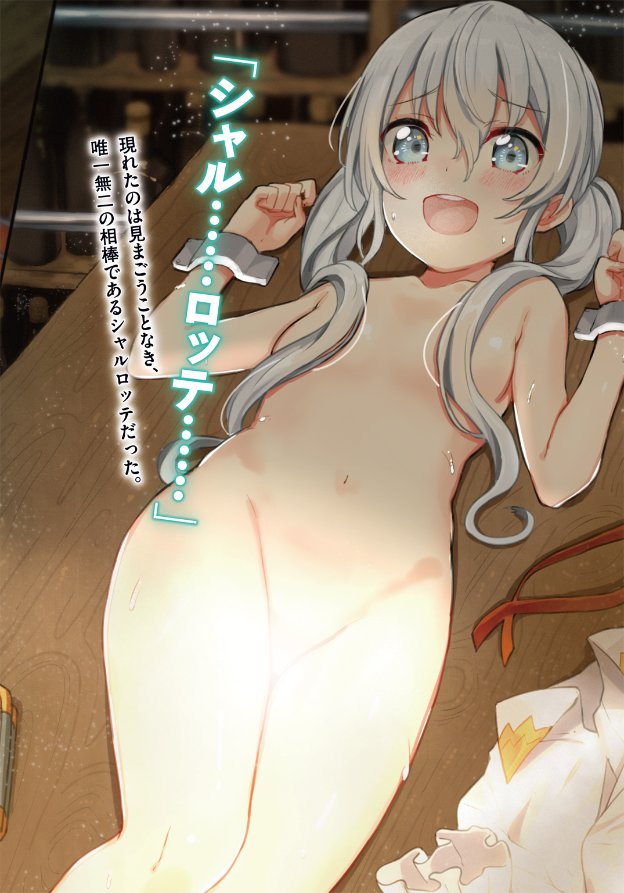
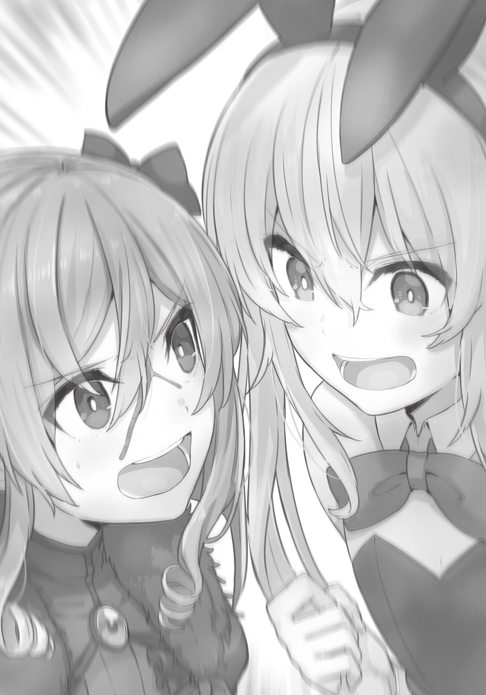

| 私たち殺し屋です、本当です、嘘じゃありません、信じてください。 | |
| 兎月竜之介 | |
この本は縦書きでレイアウトされています。
また、ご覧になる機種により、表示の差が認められることがあります。

 ダッシュエックス文庫DIGITAL
ダッシュエックス文庫DIGITAL
私たち殺し屋です、本当です、嘘じゃありません、信じてください。
兎月竜之介
Chapter1
汗と涙の手作りハンバーグ
重々しい金属音を響かせながら列車が減速を始める。
車窓を眺めていた二人の少女は、それに気づいて同時に顔を見合わせた。
二人とも年齢は十代半ばを過ぎた頃。
学生らしさのあるシンプルなブラウスとスカートを身につけている。
「やっと次の街に着いたか。景色もいい加減に見飽きてたところだ」
一人目の少女、銀髪を両サイドで結んでいる方が腰を浮かせて伸びをする。
二人が席を取っているのは寝台列車の一室だ。カーテンで通路と仕切られた一室には、横長の客席が二つ並んでいる。客席はベッドを兼ねているため多少柔らかいが、それでも何時間も腰かけていると体への負担は酷いものだった。
銀髪の少女は無愛想な顔つきで、首や肩を回してストレッチする。
彼女はまるで良くできた人形のように整った容姿の持ち主だ。本物の銀細工であるかのように輝いている頭髪。白磁のように透き通った肌に、ほんのりと赤みが差している頰。深い青色の瞳に見つめられたら、誰もが魅了されずにはいられないだろうが......ストレッチをしたあとにあくびをしている姿はどこか気が抜けていた。
「ふかふかベッドの一等車に一度くらいは乗ってみたいものだな」
「そのためには大金持ちにならないとね......」
二人目の少女、黒髪を肩まで伸ばしている方が苦笑いする。
小柄な銀髪の少女に比べると、黒髪の少女はやや背が高めだ。健康的な肌色で、そのタイプの人種らしい童顔であるが、瞳は鮮やかなエメラルド色である。柔らかな笑顔が印象的で、周囲を和ませるようなほんわかとした雰囲気を纏っていた。
「ヴィクトリアはふかふかベッドの一等車で旅したい？」
「まあ、憧れはするが......普通に旅をするなら格安の席で必要十分だな」
銀髪の少女――ヴィクトリアは壁から下ろした折りたたみのテーブルに肘をついた。
必要十分と言ったそばから、折りたたみのテーブルがギシギシと軋む。
あとで鉄道員に文句を言ってやらないとな......。
「シャルロッテ、私たちの旅の目的は忘れてないよな？」
ヴィクトリアの問いかけに対して、黒髪の少女――シャルロッテがうなずいた。
「今度の街では安全な仕事で旅費を稼ぐ、でしょ？」
「そっちじゃなくて、もっと大きな方の目的だ！」
「あ、そっちかぁ......大丈夫だよ、忘れてないから、うん。間違いなく忘れてない」
本当だろうな？
ヴィクトリアはシャルロッテの頰を指で摘んでぐにぐにする。
相棒の暢気な笑顔を見ていると時々心配になって仕方がない。
私たちは学生旅行をしているわけじゃない......本当に大きな目的があるんだ。
「やーめーへーよー、ひーふーほーひーはー」
「......す、すまん。なんか触り心地が良すぎて」
シャルロッテの頰から手を離して、コホンと咳払いするヴィクトリア。
そんなことをしているうちに列車が停車する。
二人は客席の下から小さめのカバンを取り出した。カバンには旅に必要な最低限の荷物だけ詰め込んである。外は寒いだろうから上着を羽織って、シャルロッテの方はさらに長さ一メートルほどの大きな楽器ケースを背負った。
「忘れ物はないな、シャルロッテ？」
「ありません！ びしっ！」
「敬礼はしなくてもよろしい......おいおい、また寝癖ができてるぞ」
ヴィクトリアは荷物からヘアブラシを取りだして、ぴょこんと跳ねているシャルロッテの黒髪を梳いてやる。同じところが毎回跳ねてはヴィクトリアが直してやっているので、寝癖を直してやる手つきも慣れたものだ。
「ありがと、ヴィクトリア」
「ブラウスのボタンもちゃんとする！ リボンも！」
「なんか最近、胸のあたりがきつくて......」
「言い訳無用！」
ヴィクトリアは力任せに胸元のボタンを留めて、それからリボンも結んでやる。
「私たちは旅行中の女学生という設定だ。最も怪しまれにくいからな。それなのにだらしない格好をして、ホームレスにでも間違われたら面倒だ。余所者というだけで警戒されるときもあるんだから、身なりだけはしっかりしないとな」
「......それもそうだね」
二人は身だしなみを整えて、寝台列車の客室から廊下に出る。
ちょうど他の利用客が下車し始めているところだ。
板張りの床はツヤがあり、年季は入っているが、手入れが行き届いていると分かる。
降車口から線路脇に降りると、ヴィクトリアの背筋がブルッと震えた。
「思ったよりも寒いな。足が冷える」
「うわっ、本当だぁ......肌がヒリヒリする」
そんなことを言いながら、シャルロッテが背後から抱きついてくる。
「ヴィクトリアでぬくぬくしよっと♪」
背中に柔らかいものがむぎゅっと押しつけられて、今度は別の意味でブルッとした。
「おい、私はお前の湯たんぽじゃないぞ！」
「だって寒いんだもん。んんー、ヴィクトリアって赤ちゃんみたいに温かい」
「誰が赤ちゃんだ!!」
吐く息が白い。
降り立った駅には、乗り降りするためのホームも、乗車券をチェックする改札口もない。線路際に敷き詰められた砂利が、街と駅を漠然と分けているだけだ。そんなに雑で大丈夫かとも思うが、駅構内でトラブルが起こることはほとんどない。
ガシャン......ガシャン......
金属的な足音を鳴らして、駅構内で働いている鉄道員の一体が近づいてきた。
「ヴィクトリアさん、シャルロッテさん。長旅お疲れ様ッス！」
やけに陽気な声で挨拶するそいつは、見た目が完全に大昔の金属甲冑である。
金属甲冑の隙間からは、複雑に組まれた歯車やシャフトが覗いていた。
ヴィクトリアとシャルロッテが利用している鉄道――通称『無人鉄道』を運営している自立型の二足歩行ロボット、それが陽気な声を放つこいつの正体だ。駅構内では同じようなロボットが十数体ほどいて、蒸気機関車のメンテナンスや乗客の監視を行っている。
「ハインリッヒも、お疲れ様ぁ！」
シャルロッテが駆け出して、こちらに近づいてきたロボットに抱きついた。
それから、彼女は金属甲冑の胴体にこれでもかと頰ずりする。
こんなおしゃべりのどこが良いのか、とヴィクトリアはうんざりする。
二足歩行ロボット『鉄道員』たちは基本的に無口で見分けがつかない。それでは困るからとシャルロッテが名前を考えてやり、それから首のところに蝶ネクタイよろしくリボンを巻いてやったのだ。おかげで見た目の厳つさが結構和らいでいる。
「お疲れ様って言われても、僕は機械だから疲れないんスけどね。んはははっ！」
わ、笑い方までウザい......。
「それはそれとして、次回の発車は一週間後の昼過ぎッスね」
鉄道員のハインリッヒが胸に手を当てながら遠くを見つめる。
「あぁ......お二人は停車の間、汗水垂らして労働に励み、その土地にしかないグルメに舌鼓を打ち、青春の一ページに美しい思い出を綴るわけッスよね！ うらやましいなぁ！ もしも生まれ変われるのなら、僕も今度は人間に......ぐすっぐすっ......」
ロボットのくせに泣くな！
「お前は旅を美化しすぎだ。ほら、さっさと行くぞ」
ヴィクトリアはシャルロッテの手を摑み、彼女をハインリッヒから引き剝がした。
「わわっ、まだ触り足りないよぉ......」
「あいつとベタベタするんじゃないと、私はいつも言ってるだろ」
「どうして？ ハインリッヒはロボットだよ？ 知らない男の人とかじゃないよ？」
「私にとっては同じようなものだ」
胸の奥から嫉妬心が湧き上がってきて、ヴィクトリアはいてもたってもいられない。
ロボットのくせに他人様の相棒をたぶらかそうとするだなんて......。
これが単なるナンパ男なら、鼻っ柱にパンチをお見舞いするだけだ。
でも、ハインリッヒは無邪気なロボットなわけで、シャルロッテも野良犬を愛でているくらいの認識なわけで、それなのにヴィクトリアはハインリッヒに嫉妬してしまうわけで......本当に馬鹿馬鹿しいくらいの空回りだ。
ヴィクトリアたちは駅を離れて、まずは街の中心部を目指して歩いた。
「なかなか雰囲気の悪くない街だな」
石畳で道が舗装されているし、大通りには電灯が立ち並んでいる。赤や緑の色鮮やかな瓦屋根は、まるでお菓子箱に入っているクッキーのようで可愛らしかった。自動車やバイクに乗っている人も多く、どうやら街全体の景気も良さそうである。
「下車してみたらゴーストタウンだったぁ！ なんてことも多いもんね」
「電気も水道もないとかな。ああいうのは本当に困る」
「でもね、それよりも何よりも今気になるのは――」
天を仰いだシャルロッテの目から、大粒の涙がポロポロとこぼれ始めた。
「そこら中から漂ってくる美味しそうなハンバーグの匂いだよっ!!」
「泣くほどか!? ......いや、泣くほどだな」
これにはヴィクトリアも納得せざるを得ない。
駅からしばらく歩いてきたが、そこら中に『看板娘の手作りハンバーグ』なる看板を掲げた店が建っていた。ハンバーグの焼ける香ばしい匂いと、甘みを感じさせるソースの匂いがそこら中から漂ってくる。窓から店の中を覗けば、美味しそうに食べる客たちの姿が......。
「確かに......あまりに酷だ」
ヴィクトリアは嘆いた。
「旅費を浮かせるために鉄道では毎日のように缶詰を食べて、たまの贅沢はハインリッヒの売りつけてくる大して美味しくないコーヒーと茶菓子のみ！ 風の噂によると、この街のハンバーグ屋には『裏メニュー』も存在するとか......」
「食べよう、今すぐに食べよう！ 肉、肉、肉！ それから炊きたての真っ白なご飯！」
シャルロッテが猛然とヴィクトリアの肩を揺さぶってくる。
気持ち悪くなるからやめい！
「ええい、私たちのポリシーを忘れたか！」
雨に濡れた犬が水を弾くように、ヴィクトリアはぶるぶると体を震わせた。
振りほどかれたシャルロッテが口寂しそうに人差し指をくわえる。
「......お仕事が優先？」
「その通りだ！ しっかりと働いて、それから美味しいものを食べる。働かざる者食うべからずだ！ 今回は財布の中身が心許ない。あまり仕事はえり好みできないな......むむむ!? あそこに見えるのは仕事の案内板じゃあないか!?」
「わーざーとーらーしーいー」
「......とにかく見に行くぞ、シャルロッテ！」
ヴィクトリアは街の中心部にある大きな掲示板に駆け寄った。
どこの街でも大抵の場合、旅行者向けの仕事を募集しているのだ。
二人は並んで条件の良さそうな仕事を探す。
「あっ！ これがいい！」
シャルロッテが目を輝かせながら一枚のビラを指差した。
「食品工場の流れ作業アルバイト。お給料もよくて三食寝床付き！」
「はぁ？ そんな好条件の仕事が――」
ヴィクトリアは背伸びして仕事募集のビラを見上げる。
そこにはタイプライターの文字で、確かに『食事と住居を保証』と書かれていた。
おまけに給料は真っ当に働いている成人男性並みだ。
「あ、あからさまに怪しい......」
「でもでも、こんなにすごくいい条件は滅多にないよ！」
「だから、その好条件が怪しいと......うがっ!?」
ヴィクトリアが反論しようとした途端である。
まるで玩具をねだる子供のように、シャルロッテがしがみついてきたのだ。
恥ずかしげもなく地面に膝をつき、ヴィクトリアの胸に顔を埋めてくる。
「これにしようよぉ！ ちゃんとした仕事かもしれないしぃ！」
「シャルロッテ、お前、周りからの視線が......」
通りかかった人たちが何事かとこちらを見てくる。
旅行者というだけでも目立つのに、こんなところで悪目立ちしたくない。
というか、恥ずかしいからやめろ！
抱きつかれている私の方が圧倒的に！
「分かった、分かった！ これにするから！ だから放せ！」
「本当？ やったぁ！」
シャルロッテが人目もはばからず頰ずりしてくる。
ヴィクトリアはせめてもの抵抗として視線を逸らした。
「まったく......どうせ仕事選びが面倒なだけだろう？」
「だって、仕事先をいくつも見て回るのは大変だし......てへっ♪」
「ぶりっこしても私は誤魔化されないからな。それに抱きつく癖もなんとかしろ」
何かあるたびに抱きつかれていたら、こちらの羞恥心が崩壊しかねない。
「だってだって、ヴィクトリアが我慢できないくらいに可愛すぎるから......」
「かかか可愛いってなんだ!?」
そういうダイレクトな表現を私に使うんじゃない！
首から上がカァーッと熱くなるのをヴィクトリアは感じた。
こんなことで恥ずかしくなってしまうなんて自分が情けない。
ハインリッヒが抱きつかれているのを見てるとイライラしてしまうのになぁ......。
気がつくと通りがかったカップルや女子学生たちが、じゃれ合う野良猫でも観察するような感じで、微笑ましそうにこちらを眺めていた。ええい、私たちは見せ物じゃないぞ。仕事について真剣に話し合っているんだ！
「......とにかく、仕事場に行ってみるぞ」
「はーい！」
ほくほくとした顔のシャルロッテを連れて、ヴィクトリアは早足で歩き出した。
息が白くなるくらい寒いのに、今は顔が熱くて仕方がない。
食品工場は街から離れた森の中にあった。
徒歩で来るにはなかなか遠い道程で、二人は社員用の送迎バスを利用した。
食品工場はいくつかの建物に分かれていて、それらが高いフェンスで囲まれている。作業場はトタンを張った倉庫で、簡素かつ非常に寒々しく感じられた。作業場の中からは工業機械の稼働する重低音が響いてくる。
管理者に会いに行くと、現場監督を名乗る男が出てきて、仕事は即採用になった。
これから一週間、ヴィクトリアとシャルロッテは食品工場の女性工員である。
二人は荷物を女子寮に置き、まずは支給された作業着に着替えた。
パステルカラーのつなぎとくたびれたエプロンがなんともやる気を削いでくる。
「流れ作業って書いてあったけどなんだろうね？」
「......商品のラベル貼りとかじゃないか？」
シャルロッテの質問にヴィクトリアは適当に答える。
どんな仕事が待っていようとも、一度雇われたからにはやり遂げるまでだ。
「仕事は単純だ」
現場監督に案内されて二人は作業場に入る。
講堂のような広さの作業場に広がっていたのは、
「きみたちには『看板娘の手作りハンバーグ』を手作りしてもらう」
黙々とハンバーグのタネを手でこねている女性工員たちの姿だった。
ヴィクトリアたちと同じくらいから、せいぜい二十歳前後の若い女性ばかりである。
数十人の女性工員がズラリと並んでいるのはなかなか迫力があった。
「どゆこと？」
あっけにとられているシャルロッテ。
ヴィクトリアも開いた口がふさがらない。
「これは、その、街で見かけたハンバーグというのは......」
「食品工場で大量生産して、冷凍してから街に出荷している。看板娘の手作りハンバーグで人気を博した店があって、それを真似た店が次々と増えたのが始まりだ。おかげで手作りハンバーグの街として有名になったが......今度は人気が出過ぎて生産が追いつかなくなってな」
「手作りハンバーグを大量生産するに至ったと......」
それならいっそのこと、生産工程を全て機械化すればいいのになぁ......。
変なところで律儀というか、こだわりがあるというか。でも、これで賃金が妙に高い理由も分かった。看板娘の手作りハンバーグが、女性工員たちの手で大量生産されていた。それを周囲に知られないための口止め料なのである。
「はぁ......ちゃんとした手作りハンバーグが食べたかったなぁ......」
シャルロッテが落ち込んで人差し指をくわえている。
ヴィクトリアは彼女の手をパシッと払った。
「衛生管理！」
「ご、ごめん......」
現場監督からの説明が終わると、早速作業に取りかかることになった。
二人は作業台に向かい合って作業する。
材料を混ぜるところまでは機械がやってくれた。ヴィクトリアたちの仕事はハンバーグのタネを手でこねて、作業台の上にある金属トレイに並べていくことだ。単純な作業だが、これがやってみると結構骨が折れる。
材料の鮮度を保つためなのか、作業場は冬なのに暖房が入っていない。ハンバーグのタネは冷たく、固く、触るだけで手がジンジンしてくる。立ち仕事だから、首やら腰やらの負担も多い。賃金が良くなければやってられないきつめの仕事だ。
「手のひらでタネを丸めて形成......手のひらでタネを丸めて形成......」
ヴィクトリアは無心になることで仕事能率を上げる。
時間給なので数は関係ないが、集中した方が時間の進みも早く感じられるものだ。
けれども、案の定、
「ヴィクトリアぁ、手がぁ！ 手がぁ！」
半日も経たずにシャルロッテが音を上げ始めた。
赤くなった指先をこすり合わせているが、牛肉の脂でぬるぬるするばかりである。
「お前なぁ......この仕事を選んだのはシャルロッテだろ？」
「............」
「いやいや、目を逸らすな」
遠い目をされても困るから！
まあ、仕事先が酷い場所だったりするのは稀にあることだ。今にも崩れそうな炭坑に放り込まれたり、危ない薬の密造をやらされたりするよりは全然マシである。ただ単にもう少し根性を見せてくれって話だ。
「手は冷たいし、作業着は可愛くないし......」
「作業着が可愛くないのは我慢しろよ」
確かにまるっきりパートのおばちゃんみたいな格好だけどさ！
「......全く仕方がない」
ヴィクトリアはつま先立ちになって作業台に身を乗り出した。
シャルロッテの両手を握って、それから自分の頰を触らせてやる。
彼女のひんやりとした指が、ヴィクトリアの体温でじんわりと温まった。
「はわぁ......ヴィクトリアのほっぺ、あったかひ......」
「どこかの誰かが毎回恥ずかしいことをしてくるからな」
現に今だって、同僚たちの「遊んでないで働いて！」という視線をひしひしと感じる。
「ほら、こんなもんでいいだろう？」
ヴィクトリアは作業台から体を引っ込める。
シャルロッテの眉毛が物足りなそうにハの字を描いていた。
「ええっ？ もっと触らせてよぉ！ 私の気が済むまで！ 思う存分に！」
「作業時間がなくなるだろ」
「むーん！」
頰を膨らませてアピールしてもダメ！
ヴィクトリアは心を鬼にして作業に戻る。
仕事をサボっていると見なされて、減給でもされてしまったら大問題だ。
シャルロッテも渋々とハンバーグのタネ作りに戻った。
「うううぅ......」
二人の隣で作業している少女が途端に泣き出す。
彼女は冷えて真っ赤になった手をぶるぶると震わせていた。
「か、監督さぁん！ す、すみません......」
「どうしたぁ？ 問題でも起こったかぁ？」
見回りをしていた現場監督がそちらに視線を向ける。
少女が作業着の袖で涙を拭った。
「涙が......ぐすっ......ハンバーグに入っちゃって......」
「そんなの気にしなくていいから」
「......えっ？」
はぁっ!?
ヴィクトリアも思わず顔を上げてしまう。
現場監督は作業帽の奥から無感情な目を向けていた。
「金属片が混じったりしたら問題だが、涙の一滴や二滴が混ざったくらいなら大丈夫だ。最後は結局焼いて調理するんだからな。それに女の子の汗とか涙とか、そんなの看板娘の手作りハンバーグに飛びつく変態どもにはご褒美ってもんだろ？」
作業が終わったら、医務室で薬でも塗ってもらえよ。
それだけ言って現場監督は去っていった。
え、ええぇ......。
「ヴィクトリア、どうかしたの？」
全部終わってから顔を上げるシャルロッテ。
こいつは何も聞いてなかったのか......。
「シャルロッテ......この街では絶対にハンバーグ以外のものを食べるぞ」
「え？ そりゃそうだよね？」
どうしてそんな当たり前のことを......って顔をされても!!
シャルロッテのマイペースなところが、ヴィクトリアは本気でうらやましくなった。
作業は日没過ぎまで続き、仕事を終えた二人は夕食を取った。
肉料理が出てこなくてホッとしつつ、社員食堂で女性工員たちと談笑する。
聞くところによると、他の女性たちも短期のアルバイトが多いようだった。
「まあ、長くはやりたくない仕事だよね。私なんて三日できるかどうか......」
「......シャルロッテ、次の出発は一週間後だからな？」
食後は女子寮であてがわれた二人部屋に戻った。
部屋にはシャワー室がついていたので、早速順番に浴びてしまうことにする。手についた肉の脂が石鹼で洗ってもなかなか落ちず、食事中もずっと気持ち悪かったのである。それに意外と力も使うので汗をかいた。
ヴィクトリアは脱衣所で服を脱ぎ、掃除用具入れのような狭さのシャワー室に入る。
温度調整に苦労しながら、やっとのことで熱い湯を浴びた。
温まったことで血色が良くなり、白磁のような肌の所々がうっすらと桜色に染まる。背丈が低いので幼く見られがちだが、女性らしい体のラインがシャワー室のすりガラスのドアにくっきりと浮かび上がっていた。ツンとした上向きの膨らみが、降り注ぐシャワーの雫を弾いている。
「いーきーかーえーるー」
心の洗濯だな、とヴィクトリアはしみじみと感じる。
本当なら毎日欠かさず風呂に入りたいところだ。
「シャルロッテ、荷物から石鹼を持ってきてくれ」
「はいはーい！」
仕事が終わった途端に元気な返事である。
お湯を浴びながら待っていると、背後で仕切りを開ける音がした。
ヴィクトリアはそちらに手を伸ばそうとして――
「私もいーれてっ♪」
シャワー室に飛び込んできた全裸のシャルロッテと対面した。
「狭いんだから入ってくるなよ」
ヴィクトリアはシャワー室の角へ貼り付くようにして逃れる。
「いいじゃん、いいじゃん。シャワーを止めると、すぐ寒くなっちゃうし！」
シャルロッテの浴びたシャワーが、滝のようになってヴィクトリアを直撃する。
「お湯が口に！ 口にっ......ごぼぼぼ！」
「あっ、ごめん。こうすればいいかな？」
立ち位置を入れ替えて、シャルロッテが背中でシャワーを浴びる体勢になった。
あの、これ、今度は全然シャワーが当たらなくて寒いんだけど......。
おまけに身動きできる隙間がなくて体を洗うこともできない。
「それなら私が洗ってあげるよ」
「はいっ!?」
「ヴィクトリアは壁に手をついてるだけでいいからね」
石鹼をにぎにぎして泡を作り始めるシャルロッテ。
おいおい、風邪を引いたときだって体を洗わせたりしないぞ！
「自分で洗える！ 自分で洗えるって！」
「そんな恥ずかしがらなくても......ほら、両手を温めてくれたお礼だから、ね？」
「お礼なんていらないから――」
シャルロッテがたっぷりの泡をヴィクトリアの体になでつける。
背中や肩を触られるのは我慢できるが......。
耐えきれずにヴィクトリアの背筋がビクンと跳ねた。
石鹼の泡がシャワー室の壁に飛び散る。
「シャルロッテ！ そ、そういうところはやめろ！」
「どういうところ？」
「人体の急所があるところだ！ 重要な血管の走っている部分！」
「あぁ、脇とか首筋とか......って、そういうところこそしっかり洗わないと！」
逆に熱が入った!?
「スポンジも切らしてるし、ちょっと爪を立てる感じで汚れを......」
「な、なおさらやめて――ふにゃっ!?」
敏感なところに軽く爪を立てるんじゃない!!
ヴィクトリアの反応を見て、シャルロッテがふんすと鼻息を荒くする。
「脇腹から脇の下にかけてをそーっと......」
「あわわわわわ......」
「肩もお揉みしまーす」
「あ、それは普通に気持ちいい」
「内股も念入りにマッサージして......」
「うぁっ、くっ、ひぃっ......た、た、耐えろ、耐えるんだ、ヴィクトリア！」
ヴィクトリアにできることは必死に自分を励ますことだけだった。
人間が一番我慢できない拷問はくすぐりであるらしい。
肝心な部分には決して触らず、絶妙なソフトタッチを繰り返し......。
「ほら、ヴィクトリア。リラックスして？」
「んっ......くぅっ！ んぐぐぐ......」
「ヴィクトリアってば目に涙を浮かべて......泣いちゃうほど気持ちいいの？」
「ふぁっ！ んんっ......そ、そんなわけじゃ......んぁっ！」
こっちは変な声を出さないように我慢するだけで精一杯だ。
華奢な体の奥底から湧き上がってくるものに必死に抵抗する。
この試練を乗り越えたとき、自分はきっと一回り大きく成長できるような――
「............」
ヴィクトリアは気がつくと、全身泡まみれになってしゃがみ込んでいた。
完敗である。
それに対してシャルロッテは晴れ晴れとした顔だ。
彼女の全身はしっとりと汗ばみ、全身からいい仕事したオーラが放たれている。
「ふぅ......私、やりきったよ！ もしかしたら才能あるのかも！」
「仕事だけじゃなくて旅の疲れもどっぷりと出たよ......」
ヴィクトリアには立ち上がる気力も残っていない。
結局、そのまま髪まで洗ってもらうことになった。
二人はシャワーを終えたあと、パジャマに着替えて日課を済ませることにした。
部屋の内鍵が掛かっているのを確認する。
それから、ヴィクトリアは上着に隠してあった仕事道具を取り出した。
ゴトッ
テーブルに置かれたもの......それは見まごうことなき二丁の自動式拳銃である。
製品名称・レイチェルＲ＆Ｌ。
黒光りするフレームで九ミリ口径。十三発の弾丸を連射できる優れものだ。
「列車の中だと揺れて整備できないからなぁ......」
「鉄道員さんたちも見張ってるしね」
シャルロッテが縦長の楽器ケースを開ける。
そこに収納されているのは分解されたライフル銃のパーツだ。
製品名称・スマートバトラー。
組み立てると全長は一メートル強。装弾数は二十発の頼れる武器になる。
綺麗に磨かれた木製フレームはアンティーク家具のような味のある色合いだ。
「......さて、やるか」
ヴィクトリアは弾倉を外して、拳銃の本体に銃弾が残っていないか確認する。
慣れた手つきで細かいパーツに分解して、丁寧に布で磨いて油を差した。
「ふふふ、ヴィクトリアみたいに綺麗にしましょうねぇ......」
「私みたいには余計だ！」
シャルロッテも同じように手入れして、一度組み立ててライフル銃の動作を確認してから、再び分解して楽器ケースに収める。一連の動きは実に平和的で、銃器の手入れではなく、まるでドールハウスのお掃除でもしていたかのようだ。
でも、これだけはハッキリと言える。
二人の本業はこちらなのだ。
筋の通った仕事なら、報酬次第で何でも引き受ける。
その道の界隈では『殺し屋姉妹』の通り名で知られていた。
本当に血の繫がった姉妹ってわけじゃないけど......。
「まとまった金が手に入ったらドライヤーでも買うか」
「ドライヤーって......美容院に置いてあるでっかい機械のこと？」
「そうじゃなくて小型のやつだ。拳銃みたいな形のやつで、最近売り出されたらしい」
「そんなのがあるんだ？」
話に関心を示しながらも、ライフル銃から目を離さないシャルロッテ。
こういうところがプロの殺し屋らしくて、ヴィクトリアも相棒として安心できる。
「髪が長いと乾きにくいし、寝癖はつきやすいし......」
「でも、無人鉄道だと使えないよ？ 電気の通ってない街とかでも」
「それが問題だな」
「思い切ってショートカットにしちゃうとか？」
「それはなんかなぁ......」
愛銃の手入れをしている間は雑談タイムだ。
他愛もない話をしていると作業がスムーズに進む。
「んぁー、流石に疲れた」
ヴィクトリアは日課の手入れを終えて、二丁の拳銃を上着の内側に隠した。
それから、二段ベッドの下段にのそのそと潜り込む。
枕に顔を突っ込み、お尻を突き出した姿勢になった。
何故かは知らないが、この姿勢が一番リラックスできるんだよなぁ......。
「だが、明日も仕事だ」
本当なら、この街でも殺し屋らしい仕事を探したかった。けれども、平和な街ではそういった仕事を探すのにも手間がかかる。ヴィクトリアとシャルロッテは『殺し屋の仕事を探すお金がない』という不思議な状態に陥っているのだった。
非常に世知辛い話であるが、それでも泣き言を言わないのがプロの殺し屋だ。
ヴィクトリアはそんな信念の元に生きてきた。
「明日も冷たいお肉と格闘かぁ......」
シャルロッテが本当に嫌そうに床でジタバタしている。
ズレたパジャマのズボンから、危うく丸いお尻が見えそうになっていた。
「情けない。そんな弱気じゃあ駄目だぞ、シャルロッテ！」
「その格好で言われても説得力ないよぉ......」
「むむっ？」
この姿勢、そんなに変なのかな？
×
二人が働き始めて数日後、結構な人数の女性工員が入れ替わった。
三食寝床付きとはいえ厳しい仕事である。高い賃金につられてやってきたが、思った以上に辛くて辞めてしまった子が多いのかもしれない。そして、同じような考えの若い女性たちが毎日のように補充されるわけだ。
「シャルロッテ、仕事をサボるな」
「うーん......」
シャルロッテは先ほどから、丸めたハンバーグのタネを右手から左手へ、左手から右手へとひたすら往復させている。あまりに長くやっているものだから、肉の脂が溶け始めて、ハンバーグのタネがでろでろになり始めていた。
「だって、他の子もサボってるみたいだし、たくさん作ってもお給料は上がらないし......」
「お前は本当に言い訳ばかりだな......ほら、現場監督が見回りに来たぞ」
ヴィクトリアが教えてやった途端、シャルロッテが背筋をシャンと伸ばした。
もしかして、こいつの場合は一度こってりと絞られた方がいいんじゃないか？
「ささっ、皆様こちらでございます！」
現場監督が六人の中年男性を引き連れている。
中年男性は全員が高級スーツを身につけており、一目でＶＩＰな人々であると分かった。どいつもこいつも、でっぷりと太って脂ぎり、ヴィクトリア的にはどうにも直視に耐えない。食品工場を運営している会社の上役か、あるいは取引先のお偉いさんか......どちらにしろ、わざわざ現場を直接視察するなんて珍しい話である。
というか、こんな作業風景を見せちゃって大丈夫なのか？
衛生管理の不徹底がバレて、営業停止になる未来しか見えない。
そんな不安をヴィクトリアは抱えていたのだが、
「......うむ、今のところ順調のようだな」
お偉いさんたちは大満足な様子で和気藹々と話し合っていた。
順調の基準が低すぎるんじゃないですかね、みなさん？
「きみぃ、今度こそ美味しい裏メニューを頼むよぉ？」
「もちろんでございます！」
肩をバシバシと叩かれている現場監督。
中間管理職ってやつは辛いんだろうな、とヴィクトリアは少しだけ同情した。
まあ、街から街への旅ガラスには無縁の苦労である。
「......む？」
お偉いさんの一人がこちらを......否、ヴィクトリアたちの隣で作業している少女の方を見つめていた。そいつが現場監督に何やら耳打ちすると、現場監督が普段の緩さからは考えられない駆け足で少女に近づいてくる。
「おい、お前！」
「......私ですか？」
「そうだ。なかなか良い働きぶりだな。給料を上げてやる」
「本当ですかぁ!? やったぁっ!!」
少女が嬉しさのあまりにぴょんぴょんと飛び跳ねる。
現場監督はそれだけ告げると、お偉いさんたちを引き連れて作業場から出て行った。
「いいなー、いいなー」
シャルロッテがうらやましそうに瞳を潤ませている。
「いやいや、お前は給料を上げてもらえるほど頑張ってないだろ？」
「あの子だってそんなに頑張ってないよ！」
「失礼なことを全力で主張するな！」
......とは言いながらも、それは確かにヴィクトリアも気になった。
隣の少女に限らず、女性工員たちは適度にサボりながら働いている。日々の生産量を知っているから、現場監督もそれを理解しているはずだ。それとも、現場の士気を上げるためにお偉いさんが気を利かしたのだろうか？
「......というか、給料を上げるなら一番頑張っている私にしてくれ」
「ほらっ！ ヴィクトリアだって、そう思ってるでしょ？」
「うっ......」
×
そうして、ようやく迎えた最終日のことである。
今日の仕事を乗りきれば、明日の朝には給料がもらえる予定だ。そうしたら、街で何か美味しいものを食べて、必要な物資を買い込み、無人鉄道の寝台列車に飛び乗る。それで立ちっぱなしの重労働からはおさらばなのだが......ここでちょっとした事件が起こった。
ヴィクトリアとシャルロッテが作業場にやってくると、女性工員たちが騒がしく噂話をしている。噂話に耳を傾けてみると、どうやら隣の作業台で働いていた少女が工場から脱走したということだった。
「脱走？ 本当に？」
シャルロッテが興味津々に問いかける。
女性工員たちは話したくて仕方がないという感じで答えてくれた。
「夜中に逃げ出したんだって！ 街まですごく遠いのにさ！」
「私、フェンスを乗り越えて出て行くのを見たよ！」
「......でも、逃げ出すほどだったかなぁ？」
疑問を投げかけるシャルロッテ。
おいおい、お前だって今にも逃げ出しそうな顔をしてたろ。
でも、彼女の言うことにも一理ある。
賃金を上げてもらえると言われて、それからすぐに脱走したりするだろうか？
普通ならやる気が出てきそうなものだが......。
「その子はずっと働く予定だったの？」
「あと二、三日で辞めるって話だったけど」
「それじゃあ、逃げ出す意味なんてないじゃん！」
「仮病でも使えば良かったのにねー」
そんなことを話しているうちに今日も始業時間がやってくる。
現場監督がやってきたので、女性工員たちは渋々と作業を始めた。
ヴィクトリアとシャルロッテも今日で最後になるハンバーグ作りを開始する。
「今後しばらくはハンバーグを見たくもないな」
「それじゃあ、今度はステーキにしようよ！」
「シャルロッテは本当に肉が好きだな......」
「好き！」
渋々と仕事をしていたとは思えない満面笑顔のシャルロッテ。
呆れるほどに無邪気なやつだな、とヴィクトリアは気が和む。
「ヴィクトリアは何か食べたいものってないの？」
「私？ 私はもちろん――」
素直に答えそうになって、ヴィクトリアはとっさに口を噤む。
甘いものが食べたいとか言ったら、またシャルロッテから過剰に可愛いと喜ばれてしまう。
殺し屋たるものイメージは大切なわけで......。
「おい、お前たち！」
そんなことを話していたら、現場監督がこちらに近づいてきた。
まさか、今更おしゃべりを注意するわけでもあるまい。
「アルバイトが一人減ったのは知っているな？」
「はい、聞いてますけど？」
「部屋が一つ空いたから、お前たちは今日から一人部屋だ」
「えっ......」
今更ァ!?
今日からって言われても、今日しかないんですけど！
それに一人部屋っていうか、二段ベッドのある二人部屋を一人で使うだけだし！
「ええぇ......荷物を運ぶだけ面倒くさいよぉ......」
かなり渋っているシャルロッテ。
「それにヴィクトリアだって一人じゃ寂しいよね？」
「私は別に大丈夫だが......」
「えっ？ 一人で寝られるの？」
「寝 ら れ る よ !!」
お前の中の私はどれだけ寂しがりやなんだ!?
あぁ......この馬鹿馬鹿しい会話を聞かれているだけで恥ずかしくなってくる。
ヴィクトリアは冷たくなった両手で頰の熱を冷ました。
「......分かりました、私が空いた部屋に移ります」
「そうか、それでいい」
「えぇーっ!? ヴィクトリア、どうしてっ!?」
了解して帰る現場監督を尻目にして、シャルロッテが身を乗り出して訴えてくる。
おい、手の下敷きになってハンバーグが潰れてるぞ！
「たまには一人で眠りたいときもある」
「別居!? 不倫!? マリッジブルー!? あんなに愛し合っていた二人なのに!?」
「変な方向に話を広げるんじゃない！」
そもそも、別に一人で眠りたいわけではない。
ヴィクトリアの望みは『一人でシャワーを浴びること』なのだ。
初日にあんな目に遭ってからも、シャルロッテのシャワー乱入は連日続いていた。ヴィクトリアはその度に抵抗心を失うまでくすぐられ続けた。厄介なのはシャルロッテがそれを善意一〇〇パーセントでやってくることである。
ときとして善意は悪意よりも人を傷つける。
このままだと精神崩壊に追い込まれかねない。
「分かったよ......今日は一人で寝るね。寂しいけど一人で寝るからね」
シャルロッテがどうにか聞き分けてくれる。
そのうち埋め合わせとして、とびきりの高級ステーキを食べさせてあげよう。
「さてと、仕事に戻るぞ？ キッチリ働いて、気持ちよくグルメを堪能したいからな」
「うんっ！」
二人は作業を再開する。
そして、今日も日が暮れるまでハンバーグのタネを作り続けた。
夕食を終えて、シャワーを浴びると、あとはもうぐっすりである。
ヴィクトリアは新しく与えられた部屋でスヤスヤと眠った。
明日からはぐらぐら揺れる寝台列車に戻ることになる。
ここでたっぷりと睡眠を取って、疲れを癒やさなければいけないのだが――
「......ん、んにゃ？」
ヴィクトリアは妙な肌寒さを感じて目を覚ました。
掛け布団がズレてしまったのだろうか？
「さむっ......布団、布団......」
ぐぐっ
押さえつけられたように手足が動かない。
金縛りかとも思ったが......ここでようやくヴィクトリアは気づいた。
私、服を着てない。
「ほえっ!? なななななんでっ!?」
それに加えて両手両脚を寝かされている台に縛りつけられている。
全裸で、全身を、拘束されている!!
ぞわぞわっと全身が総毛立った。
いつの間にか知らない天井だ。
ここはどこだ？ 誰がこんなことをした？
真上に吊るされた裸電球がぼんやりとヴィクトリアの裸体を照らしている。彼女の肢体にくっきりとした陰影が浮かび、影はより黒く沈み、肌はより白くまばゆい輝きを放っていた。生まれたままの姿を隠すものは何一つ存在しない。
両手両脚には革製のベルトが巻かれていた。
相当きつく締め上げているようで、どれだけ力を入れてもほどけない。
「目覚めたようだな？」
拘束されたヴィクトリアを何者かが覗き込む。
裸電球を背にしているせいで分かりにくかったが、その声には聞き覚えがあった。
「お前は......現場監督!?」
「そうだ。皆様もお待ちだ」
ヴィクトリアは言われてやっと周囲を見回す。
どうやら、連れてこられたのは応接室らしい。ふかふかとした絨毯に革張りのソファー。戸棚には高そうな酒瓶が並んでいる。敷地内の管理棟にそんな部屋があったことをヴィクトリアは覚えていた。仕事柄、建物の配置は必ずチェックするのだ。
そして、応接室にいたのはヴィクトリアたちだけではない。
悪趣味な仮面を被っている男たち、総勢六人がこちらをニヤニヤと眺めていた。
見覚えのある高級スーツを着ていることから、仮面の男たちが先日見かけたお偉いさんたちであるとすぐに分かる。現場監督は顔を隠していないし、あくまで雰囲気作りのために仮面を被っているだけかもしれない。
「くっ、眠り薬を盛られたか！」
「いや、これといって薬は使ってないが......」
「......そうだ、シャルロッテは!?」
姿が見えないのは無事だからか？
それとも自分よりも先に何かされてしまったのでは......。
「きみぃ、流石に待ちくたびれたよ。早く味付けを始めてくれ」
仮面の男たちが懐からナイフとフォークを取り出した。
待て待て待てっ!?
「そ、そのナイフとフォークは――」
「聞いたことがあるんじゃないか、きみぃ。この街の裏メニューの噂を？」
ニヤニヤしている仮面の男たち。
「ま、ましゃかっ!?」
「裏メニューとは......少女の肉を使ったハンバーグのことなのだよ！」
「そんなぁあああああっ......!!」
思わず情けない悲鳴を上げてしまった。
こんなとんでもないやつらに捕まるだなんて......。
ヴィクトリアは寝かされているのに井戸の底に落ちるような感覚に襲われる。
「こ、こんな、変態の中の最上級のド変態たちに......」
「誤解してもらっては困るよ、きみぃ。我々は殺人鬼ではなく、あくまで美食家の集まりなのだよ。究極の美食を探し求めた結果、少女の肉を使ったハンバーグに辿り着いたのだ。まぁ、実際に女の子を捕まえられたのは、今回が初めてなのだが......」
「そういう問題か!!」
こいつらは高めの賃金で少女をかき集めて、気に入った子を見つけたらハンバーグにして食べようとしていたのだ！ ギリギリで気づいて逃げ出した子もいるが、こうして捕まってしまった子たちの末路は......。
ヴィクトリアの視界がぐるぐるしてきた。
は、吐き気が......。
「それでは味付けに入らせていただきます」
現場監督も懐からフォークを取り出す。
「恐怖を与えるほど、少女の肉は旨味を増していく」
そして美食家じみたことを言いながら、フォークの先端をゆっくりと近づけてきた。
刺される!?
「ちょ、ちょっと待て！ わた、わ、わたた、私はプロの殺し屋だぞ！」
ヴィクトリアは精一杯に声を張り上げる。
だが、返ってきたのは仮面の男たちの失笑だった。
「殺し屋ぁ？ こんな可愛い殺し屋が存在するのかね、きみぃ？」
「本当だ！ 噓じゃないからな！ ここで信じないと酷い目に遭うからな！」
「ほほう......素っ裸で捕まってるくせに何ができると言うのかね？」
「私はプロの殺し屋なんだ。素人の拷問なんかに屈したりは......うにゃああああっ!?」
現場監督がフォークの先端で、ヴィクトリアのお腹をおもむろに撫で上げる。
耐え難い悪寒が全身を走って、彼女の背中がビクンと跳ねあがった。
「や、やめろぉ......変なとこを触るなぁ......」
ヴィクトリアは歯を食いしばって、強烈なくすぐったさと気持ち悪さに耐える。
けれども、現場監督の手つきが絶妙すぎた。フォークの先端を柔肉に食い込ませて撫で上げたり、ふっと肌から離したと思えば、敏感なところを少し痛いくらいに突っついてくる。ヴィクトリアの体はその度に電気ショックでも浴びせられたように跳ねあがった。
肌寒くて震えそうなくらいなのに全身に変な汗が滲んでいる。
「随分と敏感な殺し屋じゃないかねぇ？」
「これでは依頼主の正体も簡単にバラしてしまいそうじゃないか」
「強がることはない。ほらほら、もっと素直に泣いてみなさい」
仮面の男たちはヴィクトリアがくすぐったがる様子を嬉しそうに眺めていた。
私はどこの誰かもわからない脂ぎったオッサンたちに裸を見られているのか......。
それだけでも生理的嫌悪が半端じゃないのに、フォーク一本でビクビクしているところまで見られてしまって、これではプロの殺し屋として失格だ。相棒は......シャルロッテは無事なのだろうか？ こんな情けないところを見られたくはない。
「シャルロッテ......ううっ......あいつは、どこに......」
「友達のことがそんなに心配か？」
現場監督がフォークの先端でヴィクトリアの胸元を撫で上げる。
「安心しろ。あいつはお前の次に料理してやる」
「や、やめろっ！ それだけは......くっ！」
味付けが続けられる最中、ヴィクトリアは思い返していた。
この程度のこと......シャルロッテがシャワー室でしてきたマッサージに比べたら優しいものじゃないか！ 意識が飛ぶほどのくすぐったさを考えれば、現場監督如きの責めなど耐えるのは何の造作もない。
「んひゃっ!?」
だから、脇の下は人体の急所だから止めろと何度も――
「こちらの味見を......」
「きみぃ、気が利くじゃないか」
現場監督がヴィクトリアの汗で濡れたフォークを仮面の男に手渡した。
仮面の男がフォークについた汗を美食家気取りでテイスティングする。
「な、な、舐めた......わわわ、私の汗を......へ、変態！ き、気持ち悪い......」
嫌悪感でヴィクトリアの顔が引きつる。
目の前が涙でぼやけて、鼻水まで垂れてきた。
あぁ、今度こそ本当に終わりだ......。
「ほどよく塩気が利いている。これなら調理を始めても......んん？」
そのときである。
天井裏から物音。
瞬間、天井の通気口を破壊して何者かが飛び込んでくる。
何者かは空中で一回転して華麗に着地を決めた。
「シャル......ロッテ......」
「助けに来たよ、ヴィクトリア!!」
現れたのは見まごうことなき、唯一無二の相棒であるシャルロッテだった。
学生風の格好に着替えて、二人の荷物もしっかり持ってきている。そして、すでに二十連発の愛用ライフル銃『スマートバトラー』を装備していた。通気口をひたすら這ってきたようで、全身がほこりまみれになっている。
「貴様ッ――」
現場監督が作業着の懐に手を突っ込む。
拳銃を引っ張り出そうとしていたが、それよりもシャルロッテの速さが勝っていた。
ズドン!!
スマートバトラーの銃口が火を噴き、現場監督の体が壁まで吹っ飛ばされる。
強烈な発砲音が腹の底まで響き、驚いた仮面の男たちは軒並み腰を抜かしていた。
「ひ、人殺しぃ!!」
「暴力はっ......暴力はやめたまえよ、きみぃ!?」
女の子をハンバーグにしようとしていたやつらが何を言ってるんだか。
シャルロッテはすぐにヴィクトリアの拘束を解いてくれる。
「助かった......本当に助かったぞ、シャルロッテ」
「一人で寝るのが寂しくなっちゃって、それで会いに行こうとしたらね......」
相棒が連れ去られるところを見かけて、それから救出のチャンスを待っていたと。
ヴィクトリアとしては一秒でも早く助けてほしかったが......戦闘のプロとしてはそれで正解なので何も言えない。こうして助けに来てくれて、愛用の武器や旅費を持ち出してくれただけで大満足だ。
褒めてほしそうにシャルロッテがはにかんでいる。
ヴィクトリアは求められるがままに彼女の頭を撫でた。
でも、このままほんわかしているわけにはいかない。
「......さてと、落とし前をつけさせてもらおうか」
ヴィクトリアは愛用の自動式拳銃『レイチェルＲ＆Ｌ』を左右の手で構えた。
そして、仮面の男たちに二丁拳銃で狙いを定める。
「やめろっ！ やめてくれっ！ 私たちの唯一の楽しみが......」
「きみたちのことは諦める！ 他の子を選ぶことにするからっ！」
仮面の男たちは口々に命乞いを始める。
言い訳を聞けば聞くほど理解しがたい連中だ。
このハンバーグ工場は街の経済の要であり、仮面の男たちは街で最大の権力者である。
そんな彼らを街の警察に突き出したところで、問題が揉み消されるのは目に見えていた。
「お前たちの悪行は今、この瞬間に終わらせなくてはいけない」
「撃つな！ 撃たないでくれぇっ！」
「そして、これが......私を恥ずかしい目に遭わせた罰だッ!!」
ヴィクトリアは二丁拳銃の引き金を引いた。
左右で三発ずつ、合計六発の弾丸がレイチェルＲ＆Ｌから放たれる。
パンパンパンッと軽快な発砲音が応接室に響き渡った。
仮面の男たちが悲鳴をあげる間もなくバタバタと倒れる。
とりあえず、これで、気分はスッキリだ。
「うわわっ!?」
一息ついたところだった。
ヴィクトリアの脇腹をヌメッとした感触が撫で上げる。
びっくりして飛び退くと、シャルロッテが屈んで口をもごもごさせていた。
「あっ、本当にしょっぱい！」
「実際に舐めて確かめるやつがあるかっ!?」
「なんか美味しそうに見えちゃって......」
怖いことを言うな、おい！
ヴィクトリアは舐められた左脇腹を確認する。
ヌメッとして、ザラッとして......今でも感触がありありと残っていた。
「ヴィクトリア、そろそろ服を着たら？」
「んあっ......そ、そうだな！」
完全に失念していた。
私はすっぽんぽんで決め台詞を言っていたのか......。
ヴィクトリアは意気消沈しながら、シャルロッテの持ってきてくれた服に着替えた。彼女とおそろいの学生風ブラウスとスカートである。この格好なら殺し屋だとは疑われないが......今回は信じてもらえなくて逆に困った。
荷物の入ったカバンを提げて、それからヴィクトリアたちは応接室から出る。
二人が廊下に飛び出すと、騒ぎに気づいた警備員たちが飛び出してきた。
警備員たちは警棒を持っているだけで、二人が銃を構えるとあからさまに怖がった。どうやら、現場監督たちやお偉いさんたちが何をやっていたか知らないらしい。知っていたなら万が一に備えて拳銃くらい用意しておくはずだ。
「怪我をしたくなかったら下がれ、素人ども！」
ヴィクトリアは愛銃のレイチェルＲ＆Ｌで警備員たちの足下を撃ち抜く。
足止めをしつつ廊下を走り抜けながら、目に留まった警報スイッチを押した。
ジリリリリリリリッ!!
「そんなの鳴らしちゃって大丈夫？」
「大丈夫だろ。とりあえず、これで寝てるやつらも飛び起きるはずだ」
ヴィクトリアとシャルロッテが管理棟から出ると、案の定、女子寮から荷物を抱えた女性工員たちも次々と飛び出してきた。彼女たちを残していったら、もしかしたら口封じをされる可能性がある。
「シャルロッテ、バンバン撃ちまくれ！」
「はいはーい♪」
二人は視界に入った作業機械に次々と銃弾を撃ち込む。
燃料タンクからガソリンが漏れだして、追いかけてきた警備員たちの足下に広がった。
女性工員たちと合流して、出入り口のゲートに向かって敷地内を走る。
「工場が爆発するぞ、逃げろぉ!!」
ヴィクトリアが声を張り上げると、警備員たちは混乱して四方八方に逃げ出した。
どうやら、爆発に巻き込まれてまで仕事を全うしたくはないらしい。こういうときの行動に『プロの殺し屋』と『武器を持ってるだけの素人』の差が出る。あの変態たちがプロの人間を雇っていたら、ここまでスムーズに脱出できなかったはずだ。
シャルロッテが小首をかしげる。
「本当に爆発させちゃうの？」
「フフフ、もちろんだ」
ヴィクトリアは走りながら、ゲートを封鎖している錠前を撃ち抜いた。
女性工員たちを敷地から逃がして、それから立ち止まって振り返る。
作業機械に銃弾を撃ちまくったので、彼女の足下まで漏れたガソリンが迫っていた。
「季節外れの花火だが......まぁ、いいか」
ヴィクトリアは上着のポケットからマッチ箱を取り出す。
そこからマッチ一本を抜き取り、着火してからガソリンに投げ込んだ。
「証拠隠滅はこの手に限る」
瞬間、ガソリンを駆け上がった炎が食品工場を飲み込む。
敷地内のあちこちから火柱が吹き上がり、爆撃を受けたかのような大爆発を起こした。月明かりも届かない森の奥まで、さながら真昼のように明るく照らされる。ポップコーンが弾けるかの如く、フォークリフトや大型トラックが夜空に打ち上げられた。
フェンスを越えて熱風が吹きつけてくる。
「あちちっ......」
ヴィクトリアは背を向けて、食品工場の敷地から離れた。
「いいものがあったよ、ヴィクトリア！」
シャルロッテがゲート脇の小屋から何かを持ってくる。
それは送迎バスのエンジンキーだった。
食品工場から街の中心地まで、移動手段がなくて困っていたところである。
二人は女性工員たちを駐車してあった送迎バスに乗せた。
乗るも乗ったり三十人近く。
運転するのはヴィクトリアである。
免許も持ってないし、最後に運転したのは二年も前だが......。
「出発進行！」
ヴィクトリアが送迎バスを発車させる。
彼女の隣にはバスガイドよろしくシャルロッテが立っていた。
大人数が乗っているせいで結構揺れるため、ヴィクトリアは送迎バスをゆったりとした速度で走らせる。運転の仕方を覚えていて本当に良かった。自転車の乗り方や、銃の扱い方と同じで、簡単には忘れてしまわないらしい。
開けっ放しになっていた窓から風が吹き込んでくる。
すると、送迎バスの中が肉の焼ける美味しそうな匂いでいっぱいになった。
深夜のちょうどお腹が減っているときなのに！
「シャルロッテ、早急に窓を閉めろ！」
「固くて全然閉まらないよぉ！」
「......あぁ、もう、今回は踏んだり蹴ったりだ!!」
×
翌日。
日が昇り始めた頃、送迎バスは街の中心地にたどり着いた。
ヴィクトリアとシャルロッテは無人鉄道の駅構内に退避する。駅構内は鉄道員たちに守られているので、たとえ追っ手がやってきたとしても安全だ。拳銃を抜いたり、暴力沙汰を起こしたものは、無敵の二足歩行ロボットたちから一斉に襲われる。
女性工員たちは自宅に帰ったり、無人鉄道に乗り込んだり、それぞれで身の振り方を決めたようだ。手作りハンバーグの大量生産がストップして、この街がこれからどうなるか......それは考えてなかったというか、なんというか。
街中が大騒ぎになっているので出歩くこともできない。
「これは暢気に美味いものを食べてられないな......」
「そうだねぇ......」
駅の中で買い物を済ませて、いつもの寝台列車のチケットを取った。
パサパサしたサンドイッチで昼食を済ませる。
おやつどきを過ぎた頃、蒸気機関車は一週間の停車時間を終えて出発した。
車窓から景色を眺めていたシャルロッテが、折りたたみのテーブルに顔を伏せる。
「あわぁ......車内までハンバーグの美味しそうな匂いが......」
「どこの誰だ、窓を開けてるのは！」
ヴィクトリアは客室の通路側のカーテンを開け放つ。
すると、おしゃべりな鉄道員のハインリッヒが通りかかった。
停車時間のうちに磨いたのか、金属甲冑のボディが全身ピカピカになっている。
機械のくせに上機嫌なのが、これまたヴィクトリアの癪に障った。
「おい、ハインリッヒ！ 匂いをなんとかしろ！」
「んははっ！ 匂いッスか？」
ハインリッヒが着ぐるみのマスコットみたいに首をかしげる。
「僕は機械なんで匂いは分からないッス。人間様は匂いが楽しめていいッスねえ」
「よくない!!」
ヴィクトリアはカーテンを閉じる。
客席兼ベッドに腰を下ろすと、シャルロッテが不意に顔を上げた。
彼女の目は酔っぱらったようにとろーんとしている。
ほとんど徹夜したようなもので、ものすごく眠くなっているのだろう。
と、思ったら――
「......お肉の匂いを嗅いでたら、ヴィクトリアがまた美味しそうに見えてきちゃった」
「おい、やめろ！」
これ完全にふざけたいだけのやつだ！
「ねえねえ、一口だけ？ 一口だけはむはむさせて？」
「ちょっ、おいっ、近寄るんじゃない......」
「こうなったら髪の毛でもいい！ はむはむさせてよ、ヴィクトリアぁ！」
狭苦しい寝台列車の中で鬼ごっこが始まる。
これは抱きつき癖に加えて、また厄介な癖が増えてしまったかも......。
ヴィクトリアはまとわりついてくるシャルロッテから必死に逃げ回るのだった。
Chapter2
美味しいスープは仕事のあとで
停車を知らせる汽笛が聞こえてくる。
ヴィクトリアは客席兼ベッドからむっくりと起き上がって伸びをする。
銀細工のように美しい銀髪、白磁のように綺麗でなめらかな肌、深みのある青色の瞳――見まごうことなき美少女であるが、寝起きの目つきはまるで殺し屋だ。まあ、実際に本当の殺し屋なのだが......それを初対面で見抜けるものはまずいない。
「あぁ、もう......酷いな、これは！」
着替えずにふて寝していたから、ブラウスがしわくちゃになっている。
スカートに折り目もついているし、髪も跳ねているし......。
ぐぐぅ～!!
とどめにお腹が空いている。
それも丸一日の絶食......最後に食事を取ったのは昨日の朝、ハインリッヒの売りつけてきたパサパサのビスケット一枚だ。それを半分に割った。移動日数の計算を間違えて、携帯食料を切らした結果、このザマというわけである。
ひ、ひもじぃ......。
胃の奥がキュッとする。
「んにゃっ......あっ、やっと次の街？」
シャルロッテが目を覚まして、客席兼ベッドから上半身を起こす。
肩まで伸ばした黒髪、人懐っこい童顔、キラキラしたエメラルド色の瞳――こちらも寝起きでぼんやりしているが、ヴィクトリアと違って殺気立ってはいない。ほんわかとした雰囲気を常に纏っていて、彼女の周りではいつも空気が柔らかい。
お腹が「ぐぐぅ～!!」と鳴って、シャルロッテが珍しく顔を赤くした。
「えへへ、ヴィクトリアに聞かれちゃった......」
「別に気にすることでもないだろ？」
何を恥ずかしがってるんだか、とヴィクトリアは呆れる。
「私たちは五年も前から一緒にいるんだ。あくびをするとか、くしゃみをするとか、お腹が鳴るとか、そういう生理現象を気にするような間柄か？ それどころか、裸を見られたって恥ずかしくないぞ。分かったら、さっさと荷物をまとめて――」
ぐぎゅるるぅ !!
!!
「............」
「えっ？ 今の音って――」
「うわああっ！ 聞くな！ 聞くんじゃない！」
ヴィクトリアは客席兼ベッドの上で毛布を頭から被る。
ななな、なんださっきの変な音は!?
「......ヴィクトリア、本当にお腹が減ってるんだね」
シャルロッテがニヤニヤと毛布の隙間から覗き込んでくる。
さっきの音は本当に自分のお腹から出た音なのか？
こんなの裸を見られるより何倍も恥ずかしいじゃないか......。
「ううう......とにかく、さっさと汽車から降りるぞ！」
毛布を被っているせいで、なおのこと顔が熱くなってくる。
空腹で苦しんでいるのに無駄な熱量を消費してしまった。
とにもかくにも、二人は急いで荷物をまとめる。
あまり長居していると、清掃係の鉄道員に追い出されかねない。
荷物を抱えて寝台列車から降りる。
無人鉄道の停車駅は相変わらず殺風景だ。線路脇には砂利が敷き詰められ、それが駅と街を漠然と隔てている。駅と街の境目に『ようこそ』と書かれた木製のアーチが置かれていたが、まるで斧で殴られたかのように半壊していた。
シャルロッテが両手を擦り合わせる。
「少しは暖かくなったかな？」
「南下してきたからな......そのうち冬も振り切れるさ」
無人鉄道は世界中のどこまでも続いている。
その気になれば永久凍土から常夏の楽園まで移動できるという話だ。
でも、無人鉄道を利用するにはそれなりに金がかかる。
ヴィクトリアの上着には二丁拳銃『レイチェルＲ＆Ｌ』が、シャルロッテの楽器ケースにはライフル銃『スマートバトラー』が隠してあった。それ以外の荷物は小さなカバンに収まっている。食料を食べ尽くしてしまったせいで荷物がやたらと軽い。
そして財布の中身はなお軽い。
このままでは当分の間、この街で足止めを喰らうことになる。
「お二人ともお疲れ様ッス！ うわぁ、すごい顔ッスね」
聞こえてくる底抜けに陽気な声。
鉄道員のハインリッヒが軽快な足取りでこちらに近づいてきた。
寝台列車の車体を磨いていたようで、雑巾とバケツを握りしめている。
「ハインリッヒ、おっはよーう♪」
金属甲冑ボディに抱きついて、おもむろに頰ずりするシャルロッテ。
彼女曰くハインリッヒの体は『夏は冷たく、冬は温かい』らしい。
まあ、ヴィクトリアには興味ない話である。
「こんな時間まで寝てたんッスか？」
「うぐっ......」
ロボット如きに悟られるとは一生の不覚！
ヴィクトリアは荷物から手鏡を取りだして、テキパキと身だしなみをチェックする。
「髪も跳ねてるし、ブラウスは糸がほつれてるし......」
「細かいところを気にし過ぎだよ、ヴィクトリア」
「お前はもっと身だしなみを気にして......うああっ!?」
ヴィクトリアは驚きの声をあげて、シャルロッテの足下にしゃがみ込む。
「靴下の柄が左右バラバラになってるじゃないか！」
「柄くらい誰も気にしないよ」
相変わらず暢気なことを言っているシャルロッテ。
ヴィクトリアにはあれこれと注意する力も残っていなかった。
「その様子だとガチ寝してたみたいッスね」
ロボットにまで呆れられる始末！
「眠ることでエネルギーの消費を抑えてたんだ」
「たまにはいいじゃないッスか、空腹も！ んははっ！」
このポンコツ、またおかしなことを......。
ハインリッヒが胸に手を当て、どんよりとした曇天を仰いだ。
「お腹が空くからこそ、料理が美味しく食べられる。空腹は最高のスパイスだと言われているじゃないッスか！ 料理を美味しく食べるために、人間様は間食を我慢したり、運動してお腹を減らしたりするとか！ あぁ、僕も空腹を感じてみたいなぁ......」
こいつの話をまともに聞いていたら、何もかもが馬鹿らしくなってくる。
やる気を失わないうちに行動するのが吉だな、とヴィクトリアは改めて思った。
「出発するぞ、シャルロッテ。こいつと話していてもきりがない」
「んもー、そういうことを言うとハインリッヒが傷つくでしょ？」
シャルロッテが頰を膨らませて怒っている。
けれども、言われた当人はあっけらかんとしていた。
「んははっ！ 僕は機械なんで何を言われても傷つかないッスよ」
無敵ッス、と器用にＶサインをするハインリッヒ。
シャルロッテはそれを聞いて、ますます目をキラキラと輝かせている。
純粋というか、単純というか、憧れの眼差しを簡単に向けすぎじゃないか？
「私だって無敵なのに......」
「んっ？ ヴィクトリア、何か言った？」
「な、なんでもない！」
ヴィクトリアはきびすを返して、街の方に向かってずんずんと歩き出す。
むなしい！ ロボットなんかと張り合ってしまって！
ヴィクトリアたちは駅を出て、まずはメインストリートらしき道を歩いた。
そこはいわゆる商店街だ。一階が店舗、二階が住居になっている建物ばかりがぎっしりと立ち並んでいる。石畳で舗装された道路は、自動車がなんとかすれ違えるくらいの幅しかない。そのため、商店街から見上げる空はかなり狭い。
ヴィクトリアは顔をしかめる。
「聞いてた噂と全然違うな......」
「噂？」
「この街の商店街は活気があり、美味しいものにも困らないという話だ」
でも、実際に来てみたらゴーストタウンさながらである。
商店街なのに先ほどから人の姿をほとんど見ない。たまに見かけたとしても、おどおどと落ち着きがなかったり、まるで逃げ回っているかのように早足である。それに大半の商店が真っ昼間から閉店状態で、営業していても商品棚が空っぽだったりするのだ。
「どうしちゃったんだろ......」
シャルロッテが閉店している商店を覗き込む。
商店の窓ガラスが割れて、その場凌ぎでベニヤ板が打ち付けられていた。
どこもかしこも似たような惨状で痛々しい。
「......こんなところで仕事を探せるのか？」
「ハインリッヒが言ってたけど、次の出発時刻は明日の夜......」
「明日!?」
驚きのあまりにヴィクトリアの背筋がビクンとする。
今回は随分と短い。短すぎる。
「そいつはまずいぞ......」
出発時刻までに切符代を稼がなければ、さらに次の汽車を待つことになる。
でも、無人鉄道には正確な運行予定が存在しない。
もしかしたら、次の汽車に乗れるのは数カ月先のことかもしれないのだ。
ぶわっ、とシャルロッテの目から大粒の涙があふれる。
「ハインリッヒと離ればなれになっちゃう!?」
心配するのはそこか！
「くっ......こうなったら、銃を質に入れてでも――」
ぐぎゅるるぅ!!
「............」
ヴィクトリアは道ばたにしゃがみ込む。
シャルロッテが心配そうに彼女の肩をぽんぽんした。
「び、びくとりあ？」
「......美味しいものを食べるぞ」
「ふえっ!? でも、働かざる者食うべからずって......」
「腹が減っては戦ができないだろ!! プライドで飯が食えるか!!」
もはや恥も外聞もなかった。
ヴィクトリアは立ち上がると、シャルロッテの手を握って歩き出す。
「この先にある喫茶店で、絶品のオニオングラタンスープが食べられるらしい」
「それも噂なの？」
「状況は絶望的だが......むむっ？」
商店街のど真ん中から漂ってくる美味しそうな匂い！
見えてきたのはオープンテラス付きの洒落た喫茶店である。
チョコレートのような色合いのドアに『ＯＰＥＮ』の札が下がっていた。
店先も綺麗に清掃されており、オープンテラスには落ち葉一つ転がっていない。
「あった！」
営業しているというだけで涙が出そうになってくる。
ヴィクトリアは感涙を堪えて、喫茶店のドアを押し開けた。
カランカラン
来客を知らせる小気味よいドアベルの音。
喫茶店の内装も落ち着いた雰囲気でヴィクトリア好みだ。四人掛けのテーブルが五つほど。カウンターテーブルの奥にはコーヒー豆や茶葉の袋が並んでいる。赤煉瓦の暖炉がパチパチと音を立て、暖かく柔らかな空気が二人を歓迎していた。
一つ気がかりなのは、ティータイムなのに客が数人しかいないことだ。
でも、通行人たちとは違って、ここの客はちゃんと店の雰囲気を楽しんでいる。
「いらっしゃいませー」
カウンターの奥からエプロン姿の女性が出てくる。
二十歳くらいだろうか......ふわふわの茶髪をおさげにしているのが似合っていた。
「オニオングラタンスープ、二人前」
ヴィクトリアは注文を済ませて、出入り口に近いテーブル席に座る。
食事を終えたら財布の中身はいよいよスッカラカンだ。
「はぁーん。あの店員さん、可愛いなぁ......」
対面に座ったシャルロッテが両脚をバタバタさせる。
「あ、でも、ヴィクトリアの方がもっと可愛いよ？」
「適当なこと言うな」
「えぇー、本当のことなのに......」
シャルロッテが人差し指で頰をツンツンしてくる。
普段と違って、今は避ける気力も湧いてこない。
されるがままにしていると、
「お二人とも学生旅行ですか？」
エプロン姿の女性がカウンターの奥から問いかけてきた。
「そんなところです」
ヴィクトリアは正体を伏せて答える。
学生風のブラウスとスカート姿なので疑われる余地はない。
「オニオングラタンスープが美味しいと聞いたので......」
「そうなんですか!? それじゃあ、腕によりをかけて作らないと」
エプロン姿の女性が手早く下ごしらえを終える。
「私、ここの店長なんです。安心してくださいね。とびっきりのものを作りますから」
店長だったのか......。
若いから単なる店員だと思っていた。
「私たちよりもちょっと年上なだけなのに......」
しみじみと感心しているシャルロッテ。
確かにそうだな、とヴィクトリアも考えさせられる。
自分たちは十七歳――無人鉄道の旅に出たのが十五歳のときだから、丸二年は旅をしていることになる。育った土地の法律に従うなら、あと三年で成人だ。旅をしてきた二年間で、自分たちは少しくらい成長できたのだろうか......。
テーブルに突っ伏しているシャルロッテが......否、テーブルにのっかっている彼女のバストが目に留まる。十二歳まではヴィクトリアの方が背だって高かった。それが、どこで、どうして、こんなに差が出てしまったのか――
「お待たせしましたぁ！」
「きたきたきたぁ――――っ!!」
思わず大声を出してしまうが、もはや気にしている場合ではない。
エプロン姿の女性改め、店長さんが陶器製の小鍋を二つ運んでくる。
小鍋のふたを開けた途端、とろけたチーズの香りがふわっと舞い上がった。
旨味と塩気の利いたコンソメスープ、煮込まれて甘みが増したタマネギ、ふんだんに使われたバターのコク......想像するだけで口の中が唾液でいっぱいになる。チーズのたっぷりのった厚切りのパンは、ひたして食べるも、柔らかくなるまで待つもお好みで！
「ふあぁ......この食欲をそそる匂い」
これだけでたまらない。
「食べよう、ヴィクトリア！」
シャルロッテの目がとろーんとしている。
どんな美味しい料理でも食べなければ意味がない。
ヴィクトリアはスプーンを手にとって、黄金色に輝くオニオンスープを掬った。
それを、ゆっくりと、小さな口の中へ――
「店 長 は い る か あ ッ !!」
寸前。
出入り口のドアを蹴破って、数人の男たちが喫茶店に押し入ってきた。
ガシャ――ンッ！
男の一人が手近なヴィクトリアたちのテーブルを蹴り倒す。
当然、オニオングラタンスープの小鍋はひっくり返り、中身を床にまき散らした。
ヴィクトリアたちの握りしめていたスプーンも巻き込まれて弾き飛ばされる。
「なっ......」
そして、腹の底から雄叫びが出た。
「んなぁああああああっ!?」
店長さんのオニオングラタンスープが......一日ぶりの食事が!!
「きーさーまーらーっ！」
瞬間、ヴィクトリアは男たちに飛びかかろうとする。
けれども、その寸前で居合わせた男性客たちに背後からしがみつかれた。
「お嬢ちゃん、悪いことは言わないから！」
「ここは大人しくっ！ どうか大人しくしておくれっ！」
「と、止めないでくれ！ 私のスープがっ......楽しみにしてたのに！」
素人に組みつかれたくらいではヴィクトリアを止められない。けれども、男性客たちがあまりにも必死な顔をするものだから、湧き上がってきた怒りが爆発寸前で引っ込んだ。プロの殺し屋なんだから、そう簡単にキレちゃ駄目だな！
「び、びくとりあぁ......」
シャルロッテは椅子に座ったままの姿勢で固まっていた。
スプーンからこぼれたスープが、彼女のブラウスに染みを作っている。
「おかしな真似をするんじゃあねえぞ、お前らあ！」
黒のスーツに中折れ帽子。両手に握られている安物の密造拳銃。
俺たちは泣く子も黙るマフィアだぜ、と言わんばかりの格好だ。
こういうやつらを見ているだけで、ヴィクトリアは怒りがふつふつと湧いてくる。
どうしようもない悪人ってのは、どうして際限なく現れるのか......。
「そろそろ、この店を明け渡す気になったんじゃあねえか？」
男たちは密造拳銃を店長さんに突きつける。
だが、彼女は一切怯む様子もなく答えた。
「それだけは絶対にしません」
「そいつは叶わねえ相談だ。ここら辺は歓楽街にする予定なのさ」
「お引き取りください」
「強情だねえ。借金もだいぶ残ってるんだろお？」
「だから、お引き取りを――」
ズガン！ ズガン！ ズガン！
男の一人が密造拳銃を連射すると、店長さんの足下に三発分の穴が空いた。
「さっさと立ち退きなあ!! ボスを待たせると痛い目を見るぜえ!!」
下品な笑い声を上げながら、男たちが喫茶店から出て行った。
オープンカーに乗り込み、うるさいエンジン音を響かせて走り出す。
ひとまずの脅威が去り、喫茶店に安堵の空気が広がった。
「うっ......」
そのとき、緊張の糸が途切れたのか、店長さんがふらりと気を失った。
ヴィクトリアとシャルロッテがとっさに彼女を受け止める。
こうして受け止めてみると、店長さんの体は本当に華奢だった。
日が沈んだ頃。
ヴィクトリアとシャルロッテは喫茶店の二階に招かれていた。
店長さんの厚意で空き部屋に泊めてもらえることになったのである。
ベッドが一つしかない小さな部屋だが、宿代が浮いただけでもありがたい。
意識を失っていた店長さんは、あれからすぐに目を覚ました。
それから、荒らされた店内を片づけたり、ヴィクトリアたちに簡単な食事を用意してくれたり......先ほどまで気を失っていたとは思えない働きぶりを見せている。彼女ばかりに頑張らせたくはなかったので、ヴィクトリアとシャルロッテも仕事を手伝った。
「すみません、こんなものしかお出しできなくて......」
部屋で食事中の二人に、店長さんがお茶を注いでくれる。
テーブルにはパンと缶詰がいくつか並んでいた。
「店長さんの真心がこもってるから、もう、すっごく美味しくて！」
シャルロッテが満面の笑みでパンを頰張っている。
こういうとき、心の底から笑顔になれるから偉いよなぁ......。
ヴィクトリアも感心しながら、オイルサーディンをおかずにパンを食べた。
二人は空腹が満たされて嬉しいが、店長さんは明らかに気持ちが沈んでいる。
昼間の笑顔はすっかりなりをひそめていた。
「本当はスープを楽しんでほしかった......でも、それも駄目そうです」
部屋の隅で丸椅子に腰かける店長さん。
彼女の背中は今の状況を背負うに小さすぎた。
「明日、店を引き渡そうと思います」
「そ、そんなぁ!?」
あんなに美味しそうなスープを作れるのに、とショックを受けるシャルロッテ。
そこじゃないだろと言いたかったが、話がズレるのでヴィクトリアは黙っておいた。
「店長さん、あいつらは何者なの!?」
「......この街に住み着いたマフィアたちです」
シャルロッテの質問に店長さんが答えてくれる。
「いつの間にかやってきて、街外れにある屋敷を乗っ取ってしまったんです。気がついたときには、この街の警察では太刀打ちできなくなってしまいました。若い女の子が攫われたり、家族を殺されたりする人まで......」
「酷い！ 酷すぎるよ！」
机をバシバシと叩き始めるシャルロッテ。
お、おい、缶詰がひっくり返る......。
「ヴィクトリアもそう思うよね!?」
「私？ 私はまぁ、なんというか......」
もぐもぐ。
今はパンとオイルサーディンを食べながら話を聞くだけだ。
店長さんが顔を伏せたまま嗚咽を漏らし始める。
「この喫茶店を始めた人......前の店長もマフィアに殺されてしまいました。家出同然で飛び出してきた私を雇ってくれた恩人です。だから、私もこのお店だけは絶対に守ろうと頑張ってきたのに......でも、もう......」
手狭な部屋に響く泣き声。
パンも缶詰も美味しかったのに今では砂を嚙んでいるようだ。
笑顔のない食卓は本当に味気ない。
店長さんは嗚咽を堪えて、エプロンの裾で涙を拭った。
でも、持ち前の暖かい笑顔までは取り戻せない。
「......と、とにかく、今日だけでも泊まっていってください。料理をご馳走できないのは残念ですけど、明け渡すなら早い方がいいですから。私が立ち退かなかったら、商店街の他の人たちまで無理してしまいます」
「そんなの......絶対におかしいよ！」
店長さんが涙を堪えている一方、シャルロッテの目からは大粒の涙がこぼれていた。
奥歯をキュッと嚙みしめている様子から、彼女もまた泣くまいとしていることが分かる。
それでもなお、涙はあふれてテーブルにぽたりぽたりと垂れ落ちていた。
「どうして、優しい人たちとか、頑張ってる人たちが、自分勝手な悪い人たちのせいで泣かなくちゃいけないの？ 店長さんが諦めることなんかないよ。優しくて、頑張ってる、普通の人たちが幸せになれないなら、そんなのは絶対に間違ってる！」
子供みたいに泣いちゃってみっともない......なんて、ヴィクトリアは決して思わない。
他人のために泣ける子なんて、そうそういるものじゃない。
冷静であることが求められるプロの殺し屋ならばなおさらだ。
「ねえ......ヴィクトリア？」
潤んだ目を向けてくるシャルロッテ。
濡れたエメラルド色の瞳は、見ていると妙に気持ちをくすぐられた。
ちょっと引っ張りすぎたか......。
「......そうだな。働かざる者食うべからずだ」
「それじゃあっ！」
シャルロッテの表情がパァッと明るくなる。
彼女の笑顔になるところが見たくて、少しだけ意地悪してしまったのだ。
「店長さん、マフィアは私たちがなんとかする」
「そ、そんなっ!?」
冗談ですよね、と店長さんが目を白黒させている。
「相手は手下が何十人もいて、拳銃も持ってるマフィアですよ!?」
「問題ない」
ヴィクトリアは上着に隠してある愛銃の一丁をテーブルに置いた。
唐突すぎて本物に見えないのか、店長にそれを怖がる様子はない。
シャルロッテが勇気づけるように彼女の手を握る。
「大丈夫！ 私たちはころ......ええと、なんというか......」
「荒事のプロだ」
流石に殺し屋と名乗るわけにはいかない。
最悪の場合、自分たちが警察のご厄介になる。
「店長さんは明日、美味しいオニオングラタンスープを用意して、私たちの帰りを待っていればいい。そうしたら、マフィアたちはいつの間にか壊滅している。街の警察が捜査を始めた頃には、マフィアの抗争相手は無人鉄道でおさらばというわけだ」
「私たちを信じて！」
シャルロッテが店長さんの手をギュッとする。
簡単に信じられる話ではないが、それでも誠意は伝わったのだろう。
店長さんがこくりとうなずいた。
「......マフィアのボス『白帽子』は危険な男だと聞いてます」
「危険なら、なおさらやっつけないとな」
話はまとまった。
ここからはプロの仕事なので、店長さんには退室してもらうことにする。
「流石はヴィクトリア！ でも、いつもはふっかけるのにいいの？」
「ふ、ふっかけるって人聞きの悪いことを......」
普段は適正な報酬を相手に要求するだけだ。
殺し屋の美少女を二人も雇うのだから、多少高めになるのは仕方ないことである。
「それに私だって慈善事業の一つくらいするのさ！」
×
日付が変わった深夜。
街外れの屋敷からはマフィアたちの騒ぐ声が聞こえてくる。川の中州に建てられた豪華な屋敷（元々は地元の資産家が住んでいたとか）は、今となっては無法者たちの根城だ。深夜なのに煌々と電気の明かりが漏れだしている。
ヴィクトリアとシャルロッテは屋敷の前庭の茂みに隠れていた。
街をぶらついていた下っ端から、見張りの配置などは聞き出している。
顔面にパンチをぶちかましたら簡単に情報を吐いてくれた。
「屋敷には私が一人で潜り込む」
ヴィクトリアは二丁拳銃のレイチェルＲ＆Ｌを懐から取り出す。
シャルロッテが心配そうに聞いてきた。
「本当に一人で大丈夫？」
「単独潜入なら任せろ。それよりも、ターゲットに逃げられたときの方が心配だ。雑魚を何人仕留めたところで、やり手のリーダーのもとにはいくらでも集まってくるからな。あとで仕返しされても困る」
それに逃げ場は限られている。屋敷は川の中州にあり、脱出するには正面の石橋を渡るしかないのだ。夜から雲が晴れてきて、空には満月が出ているため、明るさも十分である。川縁には建物が並んでいるから、狙撃のポジションにも困らない。
ヴィクトリアは胸元から懐中時計を引っ張り出した。
「三時を過ぎても戻らなかったら仕事は中止だ」
「......うん」
シャルロッテの表情が険しくなる。
お互いに万が一のことがあっても、旅を続けることは諦めない。
それが二人で旅立ったときに決めたルールだ。
「ヴィクトリア、頑張ってね」
「......よし、それじゃあ行ってくる」
ヴィクトリアは茂みを飛び出して、屋敷の外壁まで一気に接近する。
振り返って確認すると、シャルロッテもすでに茂みから姿を消していた。
屋敷から川向こうの建物まで三百メートルはある。
それだけ離れていれば万が一の場合でも危険はないはずだ。
「さてと......」
ヴィクトリアは外壁をよじ登って、空いている二階の窓から屋敷に侵入する。
こういう危機管理の甘さが素人というか......。
二階の廊下は電気がまばらで薄暗い。おそらくは電球の交換を怠っているのだ。足下の絨毯も擦り切れて、そこら辺にゴミが散らばっている。これだけ見ても、屋敷を占拠しているやつらの程度が知れるというものだ。
「ボスの部屋は......んん？」
下っ端から聞き出した情報を思い出そうとする。
その最中、廊下に落ちているものに目が留まった。
ショートケーキである。
ふわふわの生クリームに真っ赤ないちごを載せたアレだ。
電球の明かりをスポットライトのように浴びて輝いている。
「どうして......こんなところにショートケーキが？」
ほこりっぽい廊下で微かに漂う甘い香り。
ヴィクトリアの体はそちらに吸い寄せられて――
「そ こ を 動 く な あ ッ !!」
ショートケーキの前でしゃがみ込んだ瞬間である。
二階の廊下に面したドアから、マフィアたちが雪崩を打ったように飛び出してきた。
「ふあっ......ふぁああっ!?」
思わず変な声が漏れるヴィクトリア。
まさか、待ち伏せされていたのか!?
二、三十人ほどのマフィアたちが揃って密造拳銃で武装している。
「......なんてことだ」
深夜のお腹が空いているときで、最後にケーキを食べたのは三カ月も前......でも、プロの殺し屋がこんな簡単な罠に引っかかるだなんて！ 情けないやら恥ずかしいやら、顔から火が出そうな気分である。シャルロッテに見られてなくて本当に良かった。
「ちっこいガキだな。本当に殺し屋かよ？」
「ボスが本物だって言ってたんだ、注意しろってなあ」
「武器を捨てろや、殺し屋ァ！」
どいつもこいつも品性のない面構えをしちゃってまあ......。
ヴィクトリアはやむを得ず、愛銃のレイチェルＲ＆Ｌを手放した。
すると、集まったマフィアたちの間に道ができる。
そこから悠々と現れたのは、真っ白な中折れ帽子を被っている男だ。
マフィアの下っ端たちが一斉に大人しくなる。
「......白帽子か」
「そういうお前は『殺し屋姉妹』の片割れだな？」
マフィアのボス、白帽子がほくそ笑む。
年齢は二十代半ばから後半......組織のボスとしてはかなり若い。中折れ帽子もスーツも上物で清潔感がある。こちらの正体を知っていることや、荒くれの手下たちを統率していることから察するに、どうやら彼だけは別格のようだ。
「私がコールガールに見えるか？」
「いや、食いしん坊の女学生にしか見えないね」
マフィアたちからドッと笑いが巻き起こる。
これに関しては......本当に、もう、恥ずかしくて、はい......。
「喫茶店に向かわせた手下から、上玉が見つかったと報告があってな。特徴を聞き出してピンと来た。それに喫茶店の女店主......あのタマなら殺し屋を雇いかねない。あとは甘いものと肉に目がないと噂で聞いて、山を張っていたわけだが――」
白帽子が「やれやれ......」とため息をついた。
「こいつを地下室に連れて行け。武器は俺が預かる」
「イエス、ボス！」
命令を受けたマフィアたちが、ヴィクトリアの腕を抱えて引っ張り上げる。
あんな罠にかかるだなんて......。
そして、なんだかんだでショートケーキも食べられないなんて!!
地下室。
ヴィクトリアは天井から垂れ下がった鎖に両腕を繫がれていた。
鎖が短く調整されているため、常に万歳した状態で立っていなくてはいけない。愛銃とそのほか諸々を没収されて、この鎖に繫がれてから、かれこれ一時間近くは経過している。懐中時計も取り上げられているので正確なところは分からないが。
「......さてと、尋問を始めるか」
地下室にはヴィクトリアと白帽子しかいない。
白帽子がやってきた時点で、見張りの手下たちは鉄扉の外に追い出された。
「抵抗すればどうなるかは分かっているな？」
「くっ......」
元々はワインセラーだったのか、地下室には酒瓶を並べる棚がいくつか残っている。
けれども、それよりも目を引くのが......所狭しと並べられた拷問道具の数々だ。
何種類もある鞭、体を縛り上げるためのロープ、両手両脚を拘束するベルト付きの椅子、大きなものになると三角木馬まで、どうやったらそんなに集められるのと不思議になる品々が置かれていた。
拷問についても一応習ったけど......うわっ、使い方の分からないやつが結構ある。
そして、だ。
ヴィクトリアは上下セットの下着しか身につけていない。
それも黒い布地で、布面積の超絶狭い、自分でもどうかと思うようなやつである。
黒い下着と白い肌のコントラストによって、裸電球に照らされた肢体が、鱗粉を散らしているかのように輝いていた。危険な仕事を何度もこなしてきたのに傷一つない。怪我の治りが早いのが生まれつきの自慢だった。
「旅暮らしのわりにいいものを着ているな」
白帽子が彼女の周りをゆっくりと歩き始める。
舐めるように観察されているせいで、恥ずかしくて体温が上昇してきた。
地下室は肌寒いくらいなのに、全身が夏場のように汗ばんでくる。
こいつはまさか、汗の味を確かめたりしないよな......。
喫茶店でシャワーを借りておけば良かった。
でも、湯冷めしてくしゃみでもしたら、単独潜入しているのに格好悪すぎる。
「仕事をするときは勝負下着と決めている」
「なるほど......お前はいい女というわけだ」
白帽子が一周して再び正面に立った。
傍らのテーブルには没収された荷物が置かれている。
それさえ回収できれば、まだ脱出のチャンスはあるはずだ。
「相棒の居場所を教えろ。そうすればマシな待遇で迎えてやる」
「断る」
ヴィクトリアは即答した。
「私はプロの殺し屋だ！ 仲間は絶対に売らない！」
「......まあ、そうだろうな。想定内だ」
白帽子が振り返る。
「それなら、吐いてもらうまでだ」
こちらに三度向き直ったとき、彼の手には革製の一本鞭が握られていた。
長さは二メートル以上もあり、大蛇のように床でとぐろを巻いている。
ヒュッ――
白帽子が右手を振った瞬間、
――バシンッ!!
「ひいっ!?」
直後、拳銃を発砲したかと錯覚するような衝撃音が地下室に鳴り響いた。
異様に大きな音だったのでヴィクトリアはあっけにとられる。
あんなので叩かれたら冗談じゃなく死ぬぞ......。
脇の下を汗がたらっと流れるのが分かる。
「俺には大きな目標がある」
あっ、なんか語り出した......。
「それは......この街全体を一大歓楽街に作り替えることだ!!」
喫茶店を襲った下っ端がそんなことを言ってたなー。
もちろんヴィクトリア的には全然興味がない。
男っていう生き物は、どうしていかがわしい遊びが大好きなのか。
「あの喫茶店を潰せば歓楽街の開発に着手できる。そうしたら、まずは目玉になる女が欲しいところだ。世界中の権力者や資産家たちが、大金をはたいてでも買いたくなるような......そうだな、元殺し屋の美少女姉妹なんてのはどうだ？」
品定めするような白帽子の目つき。
ヴィクトリアの全身が震えて、肌を伝っていた汗が地下室の床に飛び散る。
「......ま、ましゃかっ!?」
白帽子が向けてくる最低なケダモノの目つき。
こんな目を向けられるのは果たしていつ以来だ？
「諦めろ、殺し屋少女。お前の行き着く先は歓楽街だ。そして、今後の扱いはお前自身の行動で決まる。相棒の居場所を教えるなら、二人とも人間らしく扱ってやる。だが、あくまで抵抗するというなら......獣以下の扱いも覚悟することだ」
「うぐっ......」
額を流れる汗が目に入ってくる。
汗で目が痛むのを堪えて、ヴィクトリアは白帽子を睨み返した。
「それでも、私は絶対に仲間を売らない」
「ふん？」
「お前みたいな......人間を売り物にしか見ないやつは大嫌いだ」
「......なるほど、これは是非とも屈服させたい」
白帽子が一本鞭から別の鞭に持ち替える。
先端が何本にも分かれている革製のバラ鞭......って、それも絶対に痛いやつだ！
軽く素振りをするだけで、空気を切る音が地下室に響き渡った。
革靴をコツコツと鳴らして、白帽子がヴィクトリアの背後に回る。
それから、バラ鞭が高らかに振り上げられて――
「ふぎゃっ!?」
幾重にも分かれた先端が、ヴィクトリアのお尻に叩きつけられた。
感じたことのない痛みで彼女の背中がピンと反り返る。
両腕を吊るしている鎖がジャラジャラと音を立てた。
「はっ......あっ、ふぁっ......」
呼吸が一瞬できなくなる。
ヴィクトリアのお尻には二重、三重の赤い筋が浮かんでいた。
表面を叩かれたのではなくて、まるで体の芯を貫かれたような......。
白帽子が再びバラ鞭を振り上げる。
「ま、待った！ ちょっと待った！」
「ん？」
「痛い！ 予想以上に痛い！ 五割増しで痛い！」
「おいおい、プロの殺し屋だろ？ これくらいで降参してどうするんだ？ そこらの町娘の方が、まだ我慢強いくらいだ。もしかして、プロの殺し屋ってのは噓なんじゃないか？」
「わ、わらひはプロの殺し屋だ！ 本当だからにゃ！ 噓じゃないからにゃ！」
「鞭打ちに耐えられたら信じてやる。最後まで頑張れるな、殺し屋少女？」
尋問してくる相手に励まされるとか......。
恥ずかしいを通り越して情けない。
「......がんばりゅ」
「それなら、今度は十発連続でやるぞ」
「じゅ、じゅっぱ――」
バシンッ！
「ひゅあっ!?」
バシンッ！ バシンッ！ バシンッ！
「ひぎっ！ あっ、ぐぅっ......」
バシンッ！ バシンッ！ バシンッ！
「や、やめっ......んっ、も、もう無理ぃ......」
バシンッ！ バシンッ！ バシ――ンッ！
「んぁっ、あぐっ!? んぁああああっ......」
膝が震えて腰が抜ける。
でも、両腕を吊されているから膝をつくこともできない。
全身から汗が噴き出して、床にぽたりぽたりと流れ落ちた。
「んえ......あっ......んぐっ......」
「全く恥ずかしい姿だな、殺し屋少女？」
白帽子の視線が剝き出しになったヴィクトリアのお尻に注がれる。
「まるで熟した果実のように真っ赤になっている。かぶりついたら甘ったるい果汁が溢れ出してきそうだ。想像してみろ、殺し屋少女。豚のように薄汚く肥えた男たちが、お前の卑猥な尻にむしゃぶりつき、隅から隅まで汚し尽くす様子をなぁ......」
「や、やめろぉ......言うな、そんなことぉ......」
「言うことを聞かない悪い子だから叩かれる。お前にはもっと鞭が必要らしい」
「も、もう、やめひぇくれぇ......限界だかりゃ......」
呂律も回らない。
顔は涙と鼻水でぐしゃぐしゃだ。
そんな痴態を隠すこともできず、卑劣な男の前にさらけ出している。
「この程度で限界だなんて噓だろ？ プロ失格の情けなさだ」
「うぐっ......」
「言ってみろ、殺し屋少女。私はプロ失格の弱虫です、と」
「わらひはプロ失格のよわむひです......」
「そんな恥ずかしいことをよく言えたな。ほら、これが御褒美だ！」
白帽子がヴィクトリアのお尻に追加の一発を振り下ろした。
「ふぎゃっ!?」
身構えていなかったせいで、鞭の衝撃が何倍にも膨れあがる。
ヴィクトリアの全身に力が入らなくなり、体重のかかった両手に痛みが走った。
白帽子がバラ鞭の持ち手で、彼女のあごをクイッと持ち上げる。
「相棒の居場所を言うか？ 今ならケーキもおまけしてやる」
「それは......言わにゃい！ 絶対に言わにゃいぞぉ......」
どんなに情けない姿を晒しても、シャルロッテだけは絶対に守る。
二人で旅立ったとき、ヴィクトリアはそれを心に誓った。
シャルロッテは親友、姉妹、相棒......いや、それ以上の存在なのだ。彼女に被害が及ぶくらいなら、この身を引き裂かれた方がずっとマシだ！ 午前三時を過ぎたら、シャルロッテは狙撃位置から退散する手筈である。そこまで耐えられた時点でこちらの勝ちだ。
「あれは......」
テーブルに置かれた荷物の中に、ふたが開けっ放しの懐中時計が見えた。
懐中時計の針は、午前一時十分を指し示していて......あれっ？
尋問が始まってから、十分くらいしか経ってないってこと？
まさか、そんな、こんなに辛くて苦しいことがあと二時間近くも――
「時間を稼いでどうなる？」
「えっ......」
「相棒は遠くまで逃げられるが、お前自身が俺の手に堕ちることには変わりない。歓楽街の目玉商品として、金持ちの変態どもを相手にする日々がお前を待っている。どれほどおぞましいことか......だが、相棒がそばにいてくれたら違うんじゃないか？」
「そ、それはぁ......」
過去に地獄は見ているから、どんな扱いをされるかは容易に想像できる。
でも、シャルロッテが隣にいてくれたら、どれほど辛いことだって......。
「だ、駄目だ！」
ヴィクトリアは首をぶんぶんと横に振る。
話している間に少しだけ体力が回復してきた。
「私はそんな甘い言葉には乗らないぞ......」
「......そうか」
背を向ける白帽子。
「さらに責めを厳しくする」
「ひぃっ!?」
ヴィクトリアの体が逃げる。
自分では我慢しているつもりなのに怯えた体が言うことを聞かなかった。
「鞭の痛みは覚えられたようだな......だが、次は違うぞ？」
白帽子が新しい道具を持ち出してくる。
それは燭台に飾るような太い蠟燭だった。
ライターで火を付けて、しばらく待つと、先端のくぼみに溶けた蠟がたまり始める。
ヴィクトリアにはそれが煮えたぎる溶岩のように見えた。
「や、やめろっ！ おい、そんなっ......」
「どんなに強気な女でも、こいつで必ず音を上げる」
白帽子がゆっくりとした足取りで背後に回る。
彼の目に映っているのは、真っ赤になったヴィクトリアのお尻だ。
「言うか？ 仲間の居場所を言うか？」
「言わない、それは、絶対に......」
「それなら熱した蠟を垂らすぞ？」
白帽子が蠟燭を近づけてくる。
「鞭で散々叩かれたところへ、熱した蠟を垂らしたらどうなるか......」
ヴィクトリアの汗に濡れた肌が、蠟燭の炎で蠱惑的に照らされた。
結構離れているはずなのにジリジリと熱が伝わってくる。
蠟燭が少しずつ傾けられて、
「さあ、熱いのがいくぞ......」
「ま、待てっ！ 待って！ 心の準備が！」
「心を入れ替えるまで責め立ててやるからな」
「いやっ......お願い、だからっ......そんな、ひどいことっ......」
溶けた蠟が赤くなったヴィクトリアの柔肌に――
ドガァ――ンッ!!
それは地下室の鉄扉が吹き飛ばされる音だった。
折れ曲がった鉄塊が宙を舞って、酒瓶を並べる棚に突っ込む。
「ヴィクトリア！」
あぁ、時間まで待つように言ったのに......。
あいつは約束を破って、いつも助けに来てしまうのだ。
鉄扉のはまっていた場所から、白煙がモクモクと吹きだしている。
その中から、ゆらりと、ライフル銃の銃口が突き出てきた。
二十連発のライフル銃・スマートバトラーである。
「殺し屋かッ!!」
白帽子がテーブルに置いてあった二丁拳銃に手を伸ばす。
二丁拳銃は不慣れなのか、右手用のレイチェルＲだけを手に取った。
発砲しようとした瞬間、わずかに白帽子の反応が遅れる。
白煙の向こう側から、猛禽類のように鋭い眼光が彼を射抜いていた。
スマートバトラーとレイチェルＲがわずかな時間差で発砲炎を吹き上げる。
しかしながら、勝負は二人の視線が交わった瞬間に終わっていたようなものだ。
「――ッ!?」
白帽子が悲鳴を上げる間もなく、胸を銃弾に撃ち抜かれる。
何歩か後ろによろめき、そのまま三角木馬を巻き込んで倒れた。
自らの欲望を満たすため、街の人々を苦しめてきた男の最期である。
「ふーっ、危なかったー」
地下室に吹き込んできた白煙が、レイチェルＲから放たれた弾丸で払われた。
白煙の中からスマートバトラーを構えたシャルロッテの姿が現れる。
レイチェルＲから放たれた弾丸は、彼女の顔からわずか数センチ離れたところを通過して、背後の壁に突き刺さっていた。それなのにシャルロッテはなんでもないような様子で、ヴィクトリアに柔らかく微笑みかけてくれる。
「お待たせ、ヴィクトリア？」
「しゃるろっへぇ......」
ぶわっ、と涙があふれてくる。
「お前ってやふあ......お前ってやふあ......」
「えへへ、心配で助けに来ちゃった。爆薬、使っちゃったけど良かった？」
「しょんなもん、安いもんだっ！」
銃弾に比べると爆薬の入手は難しく、ヴィクトリアたちも滅多に使わない。
持っていることすら忘れかけていたが、ここぞというときに役立ってくれた。
シャルロッテが両腕の鎖を外してくれる。
爆薬で音を立てた以上、暢気にしてはいられない。
汗と涙をぬぐい取って、ヴィクトリアはいつもの服を身につけた。
「んひっ!?」
お尻に激痛が走って思わず飛び上がる。
「ヴィクトリア、大丈夫？」
「スカートのヒラヒラがお尻に当たって......」
これじゃあ痛すぎてまともに戦っていられないぞ！
シャルロッテがスカートの裾をチラッと摘み上げる。
「脱いじゃったら？」
「正気か!?」
でも、確かに一理ある。
ヴィクトリアは仕方なくスカートを脱ぎ、真っ赤になったお尻を露にした。
上半身は学生服風のブラウス、下半身は黒くて布面積の狭い勝負下着。
こ、こんな恥ずかしい格好で戦わなくちゃいけないのか......。
「ほらほら、いいもの見つけたから！」
地下室の隅にある木箱から、シャルロッテが銃器を山ほど持ち出してくる。
どうやら、白帽子は本格的に街一帯を暴力で支配するつもりだったらしい。
ヴィクトリアはドラムマガジン搭載のサブマシンガンを手に取る。
シャルロッテはポンプアクション式のショットガンを選んだ。
そのとき、地下室の外からマフィアたちの声が聞こえてくる。
「こちらから攻めるぞ。地下室に閉じこめられるのはまずい」
「はーい♪」
二人は地下室を飛び出して、薄暗い階段を駆け上がる。
屋敷の一階廊下に出てみると、マフィアたちが次々と駆けつけてくるところだった。
密造拳銃を片手に次々と突っ込んでくる。
「おいっ！ あいつ、尻が丸出しになってるぞ、おいっ！」
「とんでもねえエロ下着だぜえ、ありゃあ！ 黒の布地からうっすらと肌が透けて見えちゃってるとか、見られて嬉しがるようなやつ以外に誰が身につけるってんだあ？ 縁取りにレースをあしらって、清楚を気取ってるところがなおのことスケベじゃねえかよおっ！」
「おいおい待てよ、俺はあっちの黒髪の方がイケると思うぜえ？ ああいうクラスで二番目に可愛いって感じの子が、脱がしてみると案外エロいし、意外と積極的だったりするんだよ、俺には経験があるから分かる――」
「うるさい、やっかましいぞ、お前ら！」
他人様の下着姿から勝手に妄想してあれやこれやと！
「これが私を恥ずかしい目に遭わせた罰だッ!!」
ヴィクトリアは容赦なくサブマシンガンを乱射する。
狙いをつけたりはしない。
床、壁、天井、満遍なく弾丸が突き刺さり、窓ガラスも派手に砕け散る。
「ふはーっ......」
何も考えずに銃弾を撃ちまくる快感！
たまにはストレス解消しないとやってられない。
まともに戦ったことがないのか、マフィアの大半は銃弾が掠った程度で戦意喪失していた。どうやら、白帽子はともかくとして、下っ端たちは雑魚ばかりであるらしい。それでも一応、根性のあるやつが十人ほど残った。
バリケードにするつもりなのか、残党たちが倒したテーブルを廊下に並べ始める。
「痴女の方を狙え！ マシンガンはガチでヤバいぞお！」
「ち、痴女って言うな！ シャルロッテ、頼む！」
「ふふーん、りょうかーい」
シャルロッテがショットガンで簡易バリケードに狙いを定める。
わずか一発。
強烈な散弾を喰らったテーブルは、マフィアたちを守って粉々に爆散した。
ヴィクトリアはそこを狙って、左手で構えたレイチェルＬを連射する。
銃弾はマフィアたちの持っている密造拳銃を次々と弾き飛ばした。
「だ、ダメだあ！ まるで敵わねえよ！」
「ボスはどうすんだよ、ボスは!?」
「死にたかねえよ、俺は!! マジの殺し屋なんて相手してられっか!!」
最後に残っていたマフィアたちが退散する。
廊下に残ったのはテーブルの破片と大量の弾痕、そしてわずかな血痕ばかりだ。
「プロと素人の違いが分かったか！」
これで任務完了。
マフィアは壊滅して、この街にも平和が戻るはずだ。
「......さて、騒ぎを聞きつけた警察が来る。私たちも逃げるぞ」
「でも、その前にスカートを穿かないとね？」
そうだった......。
ヴィクトリアは恐る恐るスカートを穿き直す。
瞬間、
「んっひゃあっ!?」
スカートの裏地がお尻に擦れて、ヴィクトリアは予期せぬ痛みに絶叫した。
×
翌日、二人は喫茶店に戻っていた。
喫茶店にはマフィア壊滅を祝して、商店街の人たちが大勢集まっている。昨日までの沈んだ空気が噓のように、店内はちょっとしたお祭り騒ぎになっていた。マフィアを壊滅させたのが二人の殺し屋少女であることは、もちろん二人と店長さんだけの秘密である。
「お待たせしました、オニオングラタンスープです！」
「きたきたぁーっ！」
「んはぁー、いい匂い。じゅるり」
ヴィクトリアとシャルロッテの席に二つの小鍋が運ばれてくる。
ふたを開けた瞬間に広がるチーズの濃厚な香り。
夕焼け色のスープを口に含めば、タマネギの甘みが止めどなく溢れてきた。
厚切りのパンをひたして食べれば、二人の空腹をしっかり満たしてくれる。
「おいひぃ......おいひすぎる......」
食べられて良かった、本当に、心の底から。
シャルロッテに至ってはあまりの美味しさに身をよじっている。
「満たされちゃう......美味しいスープで全身が満たされちゃう......」
「濃厚なのにスルスルと喉の奥に入っていくぞ、うおおおっ！」
気持ちが高揚しちゃって仕方がない。
スープ一杯を食べ終わる頃には、全身が温かな幸せに満たされていた。
こういうグルメと出会えるから旅も悪くない。
「そんなに喜んでもらえて......私も嬉しいです」
エプロン姿の店長さんがほろりと涙を流している。
「でも、どうして空気椅子なんですか？ 椅子はたくさん余ってるのに？」
「............」
寝台列車に戻っても、しばらくはまともに座れまい。
普段からうつぶせで眠っているのが、ヴィクトリアにとっては不幸中の幸いだ。
意味もなく変な姿勢ってわけじゃないんだぞ、シャルロッテ！
「お二人とも、本当にすぐ旅立ってしまうんですか？」
食事を終えて、一息ついたときである。
店長さんが心配そうな顔で聞いてきた。
「よかったら、このまま二階の部屋に住んでも――」
「私たちには大きな目的がある。だから、同じ街にはいられない」
どれだけ料理が美味しくても、それだけは絶対に変わらない。
シャルロッテがにっこりと微笑む。
「店長さん、美味しいスープをありがとうね」
「......こちらこそ、ありがとうございましたっ！」
本格的に泣きじゃくる店長さん。
彼女の周りの人たちにも、涙と笑顔が溢れていた。
「ふーん、そんなにスープが美味しかったんスねえ......」
「それはもう最高でね、お持ち帰りの分を水筒に入れてもらっちゃった！」
夜、無人鉄道の寝台列車。
ヴィクトリアとシャルロッテはいつもの客室でくつろいでいる。通りがかったハインリッヒを捕まえて、どれほどオニオングラタンスープが美味しかったか、シャルロッテが力説しているところだった。
「むむむ！ もっとおしゃべりしていたいのに別業務の時間が！」
「おやすー」
シャルロッテが大きく手を振って、去っていくハインリッヒを見送った。
鉄道員は二十四時間労働。ご苦労なことである。
「ふんっ、さっさとあっちに行け！」
「ヴィクトリア、またそんなこと言って......」
あいつを単なるロボットだと思っているうちは、私の苦しみも分かるまい。
こっちは楽しげに話している相棒を見ているだけで胸が締めつけられるのだ。
「......それにしても、よく運賃が払えたよね？」
こちらに振り返るシャルロッテ。
「よくぞ聞いてくれた！」
ヴィクトリアは客席兼ベッドの上で、見慣れないトランクを開いた。
トランクの中にはぎっしり......とまではいかないが、結構な量の札束が詰まっている。
「今回の臨時収入だ。これで当分は安泰だ」
「う、うわー、それってまさか!?」
「帰りがけにやつらの軍資金を頂戴してきた」
どうせ、ろくでもない方法で稼いだ金である。
健全な使い方をしてやるのだから感謝してほしいくらいだ。
「もしかして、街の人たちから巻き上げたお金なんじゃないの!?」
「うぐっ......」
ヴィクトリアはトランクを閉じて胸に抱える。
「あ、あの街はもう大丈夫だろ......スープも美味しかったし......」
「うっわー、誤魔化した！ ヴィクトリア、誤魔化した！」
「だって、今更もう返せないじゃん!!」
うつぶせの姿勢で車窓から空を見上げる。
満月より少し欠けた月がヴィクトリアを見下ろしていた。
今回はちゃんと仕事もしたわけで、明日のお天道様も大目に見てくれるはずだ。
......というか、大目に見てください！
Chapter3
注文の多いレストラン
「素晴らしい！ 本当に素晴らしい！」
ヴィクトリアは客席兼ベッドに腰かけて独り言を漏らしていた。
車窓からの景色も眺めず、一枚のチラシを食い入るように眺めている。
最高級ビスクドールのような美貌の彼女であるが、無邪気にはしゃいでいる様子は完全に普通の子供だ。学生服風のブラウスとスカートを身につけていることもあって、間違ってもプロの殺し屋には見えない。
「んにゅ？ どしたの？」
折りたたみのテーブルに肘をつき、シャルロッテはボーッとしている。
ほんわかした雰囲気の彼女であるが、背は高めで人目を引くようなナイスバディだ。折りたたみのテーブルには、見るからに柔らかそうなバストがのっかっている。けれども、持ち前の童顔も相まって、少女然とした健全さに溢れていた。
「これだ。レストランの広告。前の街でもらってきたやつ」
「ふうん、毎月一日はレディースデーで九割引き...... 九 割 引 き !?」
シャルロッテが驚きのあまりに立ち上がり、目を皿のようにしてチラシを確認する。
ヴィクトリアも興奮が抑えきれず、思わず彼女の肩に手を回した。
「そうなんだ、九割引きなんだ！」
広告に載っているコース料理なんて素晴らしく豪華である。
前菜にキャビア、肉料理にフォアグラ、香り付けにはトリュフを贅沢に使って......。
普段なら手が出ないところだが、それが九割引きというのなら話は別だ。
驚愕の事実を知らされて、シャルロッテが小刻みに震えている。
「こ、こんな名前しか知らないような高級料理が......」
「食べられる！ 食べられるんだ、私たちが！」
名前しか知らないから、どんな味なのか全然分からないけど！
二人は喜びを分かち合うように肩を抱き合った。
「でもなぁ......一つだけ問題があるんだ」
「えっ？」
「美味しい食事は仕事のあとって決めてるんだよなぁ......でも、九割引きのレディースデーは毎月一日にしか行われないわけで、それを逃したら絶対に食べられないんだよなぁ......あぁ、本当に困った。どうしたものかなぁ、シャルロッテ？」
「うーん、こういうのは......そうだねぇ、不可抗力？」
「食べちゃう？ 高級料理、食べちゃう？」
そのとき、列車全体がゆっくりと減速を始める。
気が早いとは分かっていたが、二人はとにもかくにも荷物をまとめた。
完全に停車したことを確認して、飛び出るような勢いで下車する。
「素晴らしい天気だな！」
空は雲一つない快晴だ。
太陽光が燦々と降り注ぎ、厚着をしていると少し暑いくらいである。
まあ、暑さの半分はテンションが上がりすぎたからだが......。
シャルロッテが上着のボタンを一つ外した。
「だいぶ南下したもんね......冬じゃなくて秋って感じ？」
「おっ、ちょうど山が紅葉してるぞ！」
今回の街は小山の麓にあり、斜面に沿うようにして建物が並んでいた。
山全体を覆っている木々が赤や黄に染まり、色鮮やかにグラデーションがかかっている。これは街を見て回るだけでも楽しめそうだ。そして、小山の中腹あたりに目的のレストランが確認できる。遠くから見えるだけあって、建物自体、結構な大きさだ。
「......よし、まずは高級料理を堪能しよう」
ヴィクトリアは決断する。
ときには痛みを伴う決断も必要だ。
「やったぁ！ よくわかんない高級料理、たっくさん食べるよぉ！」
シャルロッテが大喜びしてぴょんぴょんする。
そんなとき、
「んははっ！ お二人さん、今日は御機嫌ッスね！」
いつもの調子で鉄道員のハインリッヒがやってきた。
金属甲冑のくせにやたら軽快な足取りも今日だけは許せる。
「ハインリッヒ、聞いて、聞いてー」
スキップで駆け寄るシャルロッテ。
ハインリッヒと手を繫ぎ、線路脇でくるくると回り始める。
「私たち、高級料理を食べるんだよ！ キャビア、フォアグラ、トリュフ！」
「あっ、聞いたことがあるッス。世界三大珍味とか言われてるやつッスね？」
「そうそう！ なにがなんだか全然分かんないんだけど！」
「んははっ！ 僕も名前しか知らないッスし、知っていても食べられないッスし！」
くるくる回る殺し屋少女と二足歩行ロボット。
微笑ましい光景だなぁ......とか考えている場合じゃない！
「シャルロッテ、出発するぞ」
「はーい」
「食事を先に済ませたら、仕事も見つけなくちゃいけないからな」
「あいあーい」
ヴィクトリアはシャルロッテを連れて歩き出す。
背後でハインリッヒが「出発は十日後の早朝ッスよ！」と手を振っていた。
「流石に十日後はちょっと長いねえ」
シャルロッテが心配そうに人差し指をくわえる。
ヴィクトリアはそんな彼女をじぃーっと睨みつけた。
「おい、高級レストランでそれはやるなよ？」
「ご、ごめん......なんか気がついたらやっちゃって......」
「マナーの悪い客だと思われて、追い出されたりしたら大変だからな」
これでレストランまで行ってみて、ドレスコードがあったりしたらどうしよう？
着ている服も最後に洗濯したのは......あぁ、旅ガラスの辛いところだ。
紅葉を眺めながら山道を歩き、小一時間ほどで目的地に到着した。
五階建てくらいはある大きな建物で、大理石調の外観はまるで美術館のようだ。
建物の近くには客のものらしき高級車がいくつも並んでいる。
「レストラン......というか、ホテルみたいだね？」
「実際、ホテル付きのレストランらしいぞ」
広告チラシには宿泊料金も書いてあるが......逆立ちしても泊まれなさそうだ。
食事をレストランで済ませたら、どこか別のところに宿を探すしかない。
「おっ、案内板があるな」
女性の方はこちら。特別サービスがございます。
正面出入り口の前には、そんなことの書かれた看板が立っていた。
看板の指示に従って建物の側面に回る。
すると、そこには裏口めいた出入り口が存在していた。
「身だしなみの最終チェックだ。寝癖はないな？ 服装は乱れてないな？」
「そんなこと気にしても、こっちは服の洗濯もできてないよ」
反論できる余地なし。
裏口めいた出入り口から、二人は高級レストランの建物に入った。
「お邪魔しま......あれ？ 誰もいないよ？」
五メートル四方くらいの小部屋である。
高級レストランの一部だけあってか、足下は歩きにくいくらいにふさふさの絨毯だ。
天井から吊るされたオイルランプがノスタルジックな雰囲気を醸し出している。
他にあるものは奥に続いているドアと、案内板の置かれた飾り台くらいだ。
「エントランスなのに店員の一人もいないのか？」
「セルフサービスなのかも......九割引きだし」
それは一理あるのか？
ヴィクトリアは疑問に思いながら、とりあえず案内板の内容を読む。
武器はこちらでお預かりします。
高級店だけあって防犯意識がしっかりしているらしい。
「......仕方がない。置いていくか」
「強盗だと思われても大変だしね」
ヴィクトリアは上着から二丁拳銃『レイチェルＲ＆Ｌ』を取り出す。
シャルロッテはライフル銃『スマートバトラー』の収納された楽器ケースを下ろした。
二人はそれらを飾り台に置き、ドアからさらに奥へ進んだ。
すると、また同じような部屋である。
天井にはオイルランプ。足下は絨毯。奥にはさらにドア。
飾り台の上にはやはり案内板が置かれていた。
お荷物もこちらにどうぞ。
「なぜ分ける!?」
武器と一緒に預かれば手間もないのに！
まぁまぁ、とシャルロッテがなだめるようにヴィクトリアの肩を揉む。
「普通の荷物と武器で、金庫が別々になってるのかも」
「んんん......解せない」
二度手間を感じるが、これも九割引きのためだ。
ヴィクトリアとシャルロッテはカバンを飾り台に置いた。
ドアから奥に進む。
案の定、また同じような部屋であるが......。
今度は右手側の壁にダストシュート的な小さい扉がついていた。
足下には布を被せたバスケットが置かれている。
案内板は小さな扉の上に貼られていた。
お召し物はこちらへ。着替えもございます。
「これは......洗濯サービス!?」
「はー、至れり尽くせりだね！」
すぐさま服を脱ぎ始めるシャルロッテ。
おいおい、受け入れるのが早すぎないか？
「フルコースの九割引きに加えて、こんなサービスまで――」
「はーい、ぬぎぬぎしましょうね？」
ヴィクトリアの穿いているスカートがスパッと下ろされる。
すると、普段から穿いている素っ気ないパンツが露になった。
「んなっ？ ちょっと待て！」
「せっかくなんだもん。お洗濯してもらおうよ」
シャルロッテが小さな扉を開けて、脱がしたスカートをその中に放り込む。
扉の奥はまさしくダストシュートの如く縦穴に繫がっていた。
こ、これは手を伸ばしても駄目そうだな......。
ヴィクトリアが躊躇っている間にも、シャルロッテはあれよあれよと服を脱ぎ、最後には下着まで扉に放り込んでしまった。後ろから他の客が来たら、とか考えないの？ 店員が掃除しに来たのと鉢合わせしちゃうとか！
「ヴィクトリア、私だけ裸なのは恥ずかしいよぉ......」
「さっさと着なさい！」
シャルロッテは身を屈めて、両手で体を隠している。
それでも、危うく手からこぼれ落ちそうというか、なんというか......。
ヴィクトリアも仕方なく、脱いだ服を扉に放り込んだ。
風呂場でもないのに全裸というのは落ち着かない。
「背中をついーっと」
「ふぎゃんっ!?」
変なところを指でなぞるんじゃない！
ヴィクトリアはお返しにシャルロッテのお尻を平手打ちする。
「あんっ♪」
「変な声を出すな！ 変な声を！」
さっさと着替えるか......。
ヴィクトリアはバスケットに被せられた布を取り払った。
バスケットの中に入っていたのは、
「布きれ......じゃない、水着だこれ!?」
単なるヒモと見間違うような逸品――通称・マイクロビキニである。
色は白。
「ははっ......はぁっ？ これを着ろと？」
こんな恥ずかしいものを着られるわけがない。
「着ないの？」
そう言っているシャルロッテはすでに着用していた。
相変わらずのためらいナッシング！
少し動くだけでバストが揺れて、水着のヒモが肌にぐいぐい食い込んでいる。
これは......付き合いが長くても目のやり場に困る。
どんなものを食べたら、そんなゆさゆさ揺れるようになるんだ？
「くっ！」
とりあえず、ヴィクトリアもマイクロビキニを着用する。
結び目を調整すれば良かったのでサイズは問題なかった。
「まさか、このまま食事するんじゃないだろうな......」
ヴィクトリアは不安になりながらも、奥に続いているドアを開ける。
すると、そこはまたしても同じような部屋になっていた。
液体で満たされた小瓶が、飾り台の上に置かれている。
お肌がつるつるになる美容オイルです。お体に塗り込んでください。
「なんだ、そういうことか......」
ヴィクトリアはホッと胸を撫で下ろした。
シャルロッテが不思議そうに小首をかしげる。
「どういうこと？」
「オイルエステのサービスだな。高級ホテルならよくあることだ」
観光ガイドの雑誌を読み込んでおいてよかった！
「そっかー。じゃあ、私が塗ってあげるね？」
「んがっ!?」
ヴィクトリアの脳裏にいつぞやの記憶がよみがえる。
一週間にわたって行われたあわあわマッサージの悪夢。
敏感なところばかりをくすぐられ続けて精神は崩壊寸前に追い込まれ――
「えいやっ!!」
ヴィクトリアは気がつくと、美容オイルを自分の頭にぶっかけていた。
フローラルな香りのする美容オイルが、ぬったりと全身に染み渡ってくる。
「ど、どうしちゃったの、ヴィクトリア!?」
「いや、その......美容オイルなら髪もツヤツヤになるかと思って......」
「ヴィクトリアってば、はしゃぎすぎだよ！」
美容オイルを手でぬりぬりするシャルロッテ。
こっちだって普通に塗りたかったよ！
「とりあえず、さっさとマッサージしてもらうか......」
ヴィクトリアは次のドアを押し開ける。
エステティシャンの人に笑われたりしたらやだなー。
そんなことを考えていたら、
『さあて、本日のかわいこちゃんはこちらの二人です......どうぞっ!!』
突如、マイクを通した大声が二人の鼓膜をぶん殴ってきた。
それから、目が眩むほどの閃光が立て続けに襲いかかってくる。
「ななななんだっ!?」
「うわっ、ちょっ......床が滑るよ!!」
おまけに足下がつるつるしている。
絨毯が敷かれておらず、おまけにワックスが大量に撒かれているらしい。
踏ん張って耐えることもできず、二人は氷上を滑るように前へよろめいた。
ヴィクトリアたちの躍り出た場所――そこはライトアップされたステージだ。
ランウェイの突き出たステージの周りには、高級スーツを着た男たちの姿がある。
パッと見ただけでも二、三十人の規模――そいつらが食事や酒を楽しみながら、ステージに躍り出た二人をニタニタと眺めている。圧倒的に優位な立場から見せ物を堪能する表情は満足げで、見られている側からすると吐き気を感じるほど悪趣味だ。
男たちのいる客席の周りでは、際どいコスチュームの女性たちが給仕をやらされていた。女性たちは性欲混じりのギラギラした目に晒されて、男たちの慰み者にさせられている。下品を絵に描いたような目のやり場に困る光景だ。
「ど、どうなってるんだ......」
わけが分からず目を白黒させるヴィクトリア。
先ほどからフラッシュが鬱陶しいが......まさか写真!?
「ちょ、ちょっと待った！ カメラに写すな！」
ステージ脇の撮影係が一心不乱にカメラのシャッターを切りまくっていた。
ヴィクトリアは必死になって体を隠そうとする。
ステージ上から強烈なライトが浴びせられて、美容オイルを塗られた二人の体はぬるぬるテカテカに妖しく光っていた。白のマイクロビキニにも美容オイルが染み込み、水に濡れた紙のように透けてしまっている。
「び、びくとりあ、どうしよう......」
シャルロッテに至っては転ばないようにするだけで精一杯だ。頼りない布きれに隠された魅惑のボディが、バランスを取ろうと傾くたびにぷるぷると揺れる。そうして、高級スーツの男たちから拍手と歓声が巻き起こるのだ。
『さあて、オーナーである私から説明してあげようじゃないか』
マイクを握っているサングラスの男が、ステージ脇の司会者席から言ってきた。
そうだ、さっさと説明しろ！
『ここはきみたちのような美少女の恥ずかしい姿を鑑賞する......紳士による紳士のための高級クラブなのだよ！ きみたちの恥ずかしい写真はすでにカメラに収められている。それを世間に公表されたくなかったら、ここで大人しく給仕をするのだね！』
「そんなの強迫じゃないかっ！」
『九割引きの罠に引っかかったきみたちの言うことかね？』
「うぐっ......」
今になって考えると、なんでそんな罠に引っかかったのか！
ヴィクトリアはふらついているシャルロッテの手を摑む。
「とにかく、写真のフィルムを取り返すぞ！」
マイクロビキニ姿でぬるぬるテカテカなのも恥ずかしいが、それよりも問題なのは殺し屋である自分たちの顔写真が出回ることだ。ヴィクトリアとシャルロッテの二人組――通称・殺し屋姉妹は、一般人の女学生にカムフラージュできることを一つの売りにしている。それなのに裏社会で顔が知られてしまったら、仕事が回ってこなくなる可能性も大いにあり得る。
早くステージを下りて、撮影係からカメラを――
「そ、そんな強引に引っ張ったらっ!?」
すって――んっ！
つるつるの床で足を滑らせて、二人はステージ上でひっくり返る。
むぎゅっ！
思ったよりも衝撃はない......というか、ものすごく柔らかい。
クッションにでも飛び込んだか、とヴィクトリアは顔を上げる。
すると、目と鼻の先にシャルロッテの顔があった。
もしかして......と、視線を下に移動させる。
ヴィクトリアの小さな手のひらが、シャルロッテの胸を思い切り鷲づかみにしていた。
う、うわっ......。
信じられないくらいに柔らかい。巨大なプリンを手摑みしたような感じだ。わずかな振動でもぷるぷると揺れる。美容オイルを塗りたくっているから表面もスベスベで、肌から滴る美容オイルが美味しそうな果汁にも見えてきて――
「び、びくとりあ......恥ずかしいよぉ......」
シャルロッテが赤らめた顔を逸らす。
エメラルド色の瞳が潤み、彼女は悩ましげに人差し指をくわえた。
「でも、私、ヴィクトリアが相手なら――」
「うわわわぁっ！ ごめん！ 本当にごめ......ふぎゃっ!?」
慌てて退いたせいで、ヴィクトリアは尻餅をついてしまう。
観客たちが「もっとやれ！」「揉め！」「女の子同士はセーフ！」と大騒ぎしている。
おひねりが次々と投げ込まれて、ステージ上は財宝の山みたいになっていた。
「わ、私たちは見せ物じゃないぞ、うわぁあああああーんっ!!」
ヴィクトリアの叫びは歓声にかき消される。
観客たちの気が済むまで、二人はステージから下ろしてもらえなかった。
×
翌日、二人の姿は高級クラブのメインホールにあった。
高級クラブには開店直後から大勢の客たちが詰めかけている。ステージではコスプレしたウェイトレスたちによるショーが繰り広げられ、お金が余っちゃって仕方がない感じのＶＩＰたちを興奮と快楽の世界に誘っていた。
「くっ、どうして私がこんな格好に......」
ヴィクトリアに支給された衣装は、お尻がはみ出そうなくらいのミニスカメイド服だ。
白と黒のクラシカルな色合いだが、肩もおへそも丸出しで、太ももがスースーする。
生地はツヤツヤとしたサテンで、なんか、こう......むやみやたらに艶めかしい。
案の定、客たちの嫌らしい視線をそこかしこから感じた。
へ、変態どもめ......舐め回すように見るんじゃない！
愛銃のレイチェルＲ＆Ｌがあれば、容赦なく眉間を撃ち抜いているところだが、現在の状況はかなり厳しい。高級クラブにはそこら中に警備員が配置されており、拳銃で武装しているだけでなく、スーツの下には防弾ベストも着込んでいる。ウェイトレスは厳重に監視されて、生活スペースと仕事場以外の場所には移動できない。
自分たちはこんな苦境に立たされているというのに――
「んふふ......ウェイトレスさん、可愛いね。ちょっと一回転してもらえない？」
「こ、この新人の子、なんなの!?」
「くるっと！ くるっと一回転！ スカートがふわっとして......むむむ！」
シャルロッテもミニスカメイド服を着せられている。
でも、恥ずかしがっている素振りがないどころか、むしろ先輩ウェイトレスに生き生きとして絡みまくっていた。彼女たちもオーナーに弱みを握られた被害者であるが、シャルロッテはそんなこともお構いなしではしゃぎ回っている。
けれども、ヴィクトリアは見てしまったのだ。
ウェイトレスにはノータッチが原則であるが、ウェイトレスから望んだ場合はその限りではない。店の外に出してあげるからね......なんて甘言を使って、男たちはウェイトレスにおねだりさせているのだ。ヴィクトリア自身は惑わされるつもりなどないが、あまりの卑劣さに腹が立って仕方がない。こんなところに大切な相棒をいさせてたまるものか。
「シャルロッテ、おい！」
相棒の変わりようが見ていられなくて呼び止める。
先輩ウェイトレスが「助かった！」と一目散に逃げていった。
「ん？ ヴィクトリア、どうしたの？」
「どうしたもこうしたもない！」
ヴィクトリアはぐいぐいとシャルロッテに詰め寄る。
「私たちは立ち止まってなんかいられないんだぞ、忘れたか？」
「忘れてないよ......忘れられるわけがないよ！」
シャルロッテが唐突に手を握りしめてくる。
サテン生地の長手袋がシャラッと音を立てた。
「二人で故郷を飛び出して、カバン一つで始めた愛の逃避行......いつかは結ばれようと思っていたけれど、安住の地はなかなか見つからない。そうこうしているうちに、私たちはいつの間にか籠の鳥......でも、それでいいの。二人の間に愛があるなら！」
雰囲気を読んだようにスポットライトがシャルロッテを照らした。
なにこれ？
高級クラブの客たちが大いに盛り上がって騒ぎ始める。
「んはっ......んはっ......」
シャルロッテが強引にヴィクトリアの手首を摑んでくる。
こちらが問いつめていたはずなのに、いつの間にか壁際まで追い詰められていた。
ていうか、さっきから息が荒すぎない!?
「ヴィクトリアが可愛すぎるからいけないんだよ......」
「か、かわっ......ちょ、ちょっと顔が近い！」
「こんな短いスカート穿いちゃって......んん？ 誘ってんの？ 誘ってんでしょ？」
「変なところに手を突っ込むんじゃぁ......ひぅっ......や、やめっ......」
プツン
「やめろって言ってるだろうが!!」
ヴィクトリアが本気のチョップをシャルロッテの脳天にお見舞いした。
「ふんぎゃっ!?」
「お、お、おふざけがすぎるぞ！」
落胆している客たちを背にして、ヴィクトリアはバックヤードに逃げ込む。
ギラギラしたメインホールと違って、薄暗くてほこりっぽい場所。
積み上げられた木箱に寄りかかり、胸のドキドキを静めようとする。
ま、まったく......あいつは突然どうしたんだ？
気持ちが落ち着くよりも早く、シャルロッテもバックヤードまで追いかけてくる。
客たちから渡されたのか、両手一杯にチップを握りしめていた。
「もー、最後までやってくれないと困るよぉ！」
そして、この口ぶりである。
ウェイトレスの仕事を本気で楽しんでいるとしか思えない。シャルロッテは前々から可愛い女の子が好きだし、彼女自身も可愛らしいコスチュームを着るのが大好きだし、それらを同時に行える環境は天国みたいなものだろうし......。
「......そうか、分かったよ」
私の信じる相棒はいなくなってしまったのだ。
シャルロッテが不思議そうに小首をかしげる。
「どうしちゃったの、ヴィクトリア？」
「別に......さっさと仕事に戻るぞ」
ヴィクトリアは早足でバックヤードをあとにする。
×
シャルロッテは翌日からも、嬉々としてウェイトレスの仕事を続けていた。
先輩ウェイトレスたちだけでなく、従業員たちとも話すようになり、あれよあれよと新しい仕事を与えられるようになった。数日後には撮影係まで任されるようになり、恥ずかしい演目をやらされるウェイトレスたちを激写していた。
そんな一方、ヴィクトリアは一人で食事を取るようになっていた。
ウェイトレスたちの生活スペースには食堂が完備されている。無料で三食キッチリ食べられることに加えて、高級クラブの方で余った食材が使われていたりするから、ウェイトレスたちは毎日の食事が楽しみで仕方がなかった。
まかない料理の美味しいこと、美味しいこと......。
今晩のメニューはロブスターのクリーム煮に最高級ポークのソテーと来たもんだ！
でも、ヴィクトリアの隣にシャルロッテの姿はない。
彼女は仕事の打ち合わせとかで従業員たちと話している。
ウェイトレスたちには個室が与えられており、時間外は部屋から出ないように見張られているため、いつまでもシャルロッテの帰りを待っているわけにもいかない。一人で仕事をして、一人で食べて、一人で眠る日々が続いている。
料理は美味しいけど、このままで良いはずがない。
しかし、ヴィクトリアには打開策が思いつかない。高級クラブのオーナーは没収した荷物や写真フィルムを金庫で厳重に保管しているという話だ。そこまで辿り着くには厳重な警備をかいくぐらなければいけない。
明日は八日目......仕事は深夜にかけて行われるから、実質は九日目みたいなものだ。
十日目の朝には無人鉄道が発車する。
そうなったら最後、どれほど予定が遅れることになるか分からない。
「時間だ。今いるものたちは自室に戻るように！」
食堂を見張っている警備員がウェイトレスたちに伝える。
ヴィクトリアは食器を片づけて、食堂から廊下に出ようとした。
そのとき、入れ替わりでやってきたシャルロッテと鉢合わせする。
彼女の足取りは実に軽やかで、
「あっ！ ヴィクトリアだぁ！」
こちらを見つけるなり普段の調子で抱きついてきた。
サラサラ生地に包まれたバストが顔にぐいぐいと押しつけられる。
メインホールに漂っている酒と煙草の匂いがコスチュームに染みついていた。
ヴィクトリアはぐいっとシャルロッテを押しやる。
「お前の抱きつき癖はいつまで経っても直らないな」
「えへへ......だって、ヴィクトリアと話せるのが久しぶりなんだもん！」
彼女の笑顔は相変わらず無邪気だ。
それを見ていると、変わってしまったのは自分の方ではないかと思えてくる。
シャルロッテが元気いっぱいの笑顔で言った。
「明日、私たち二人でステージに上がるんだって！」
×
翌日の午後九時。
高級クラブはディナータイムを終えて、そろそろ客たちに酔いが回ってきた頃合いである。財布のヒモがますます緩んだところで、本日のメインイベントが始まるという寸法で、当然ながら演目内容にも期待がかかる。
「入店十日目には必ずメインイベントを任されるんだって！」
「そそそうなのかかか......」
ヴィクトリアとシャルロッテは、ステージの舞台袖で開演時間を待っている。
格好は初日に騙されたときと同じで白のマイクロビキニだ。
あのときとは違って、流石に美容オイルまでは塗られてないが、それでも恥ずかしいことには変わりない。給仕の仕事中に着せられるコスチュームよりも露出度が高いし、こんな格好をまた大勢の男たちに見られるのかと想像するだけで......。
ぶるぶるっ
ヴィクトリアは寒気を感じて肌をさする。
「シャルロッテ、私たちは何をやらされるんだ？」
「んー」
ニパッとするシャルロッテ。
「実は私も聞いてないんだよね」
「なにっ!?」
従業員たちも目を逸らして全然答えてくれない。
演目が意図的に教えてもらえないとか不安しかないじゃないか！
「......明日は十日目だな」
「そうだね」
「このままだと無人鉄道の出発に間に合いそうにない」
「うん......」
他には!? 前は散々騒いでたじゃないか、ハインリッヒと別れるのは嫌だとか!!
それなのに今は「うん......」でお終い？
信じられない。全ッ然信じられない。
自分の隣にいるのは、あの日、一緒に復讐の誓いを立てたシャルロッテなのか？
私はシャルロッテと一緒だから、きっと頑張れると思ったのに......。
「ショータイムの始まりだ！ さあ、ステージに出ろ！」
従業員に急かされて、ヴィクトリアは舞台袖から渋々ステージに出る。
手をギュッと握られる感触。
ヴィクトリアと手を繫ぎ、シャルロッテがニッと白い歯を見せた。
「大丈夫だよ、ヴィクトリア。私と一緒なら！」
「むっ......」
彼女の曇り一つない笑顔を見せられると、特に根拠もなく安心してしまう。
さっきまで、あんなに嘆いていたはずなのになぁ......。
ヴィクトリアは自分自身に言い聞かせる。
私たちはプロの殺し屋だ、本当だ、噓じゃない、自分を信じろ！
まずはメインイベントを乗りきり、それからシャルロッテと話し合えばいい。
『さあて、本日のメインイベントです！』
ステージ脇の司会者席では、オーナーがいつもの様子でマイクを握っていた。
あのグラサン男......いつか絶対にシバいてやる。
今日も客席は満員だ。酒、煙草、料理、香水、汗。あらゆる匂いと熱気が入り交じり、頭上から照りつけるスポットライトも合わさって、ステージに立っているだけで頭がくらくらしてくる。シャルロッテが手を握ってくれていなかったら卒倒しそうだ。
『今回は新人たちのお披露目！ それも仲良し二人組ということで、みなさんから好評をいただいたあの企画を行いたいと思います。ジャスミンちゃん、カモミールちゃん！ ランウェイの一番前に移動して！』
「ジャスミ......えっ？」
「私たちの源氏名じゃないかなー」
そんなものまで決めちゃってるとか、私たちを飼い殺しにするつもりじゃないか！
オーナーの言うことなんて聞きたくないが、今は指示された通りに移動する。
ランウェイの先端は丸い形の小ステージになっていて、ほぼ三百六十度を観客たちに囲まれていた。もしも、手を伸ばしてくるような不届きものがいたとしたら、簡単に足首を摑まれてしまいそうな近さである。
元々のステージには『回転するダーツのパネル』が設置されていた。
回転パネルはダーツの刺さる場所が複数のエリアに分かれている。
普段の営業では商品プレゼントを決めたりするのに使っていたが......。
『それじゃあ、回転スタートです！』
あらかじめ整理券でも配っていたのか、客の一人がステージに登壇する。
従業員からダーツを一本受け取って、それを回転パネルに向けて投げた。
端っこだが一応は命中。
『二人にはダーツの刺さった場所に書いてあることをやってもらいます』
「な、なんだとっ!?」
従業員の手で回転パネルが止められる。
そこに書かれていたのは――
ハグして頭をナデナデする。
「びーくとーりあっ♪」
むぎゅっ！
決まるが早いか、シャルロッテがすぐに抱きついてきた。
マイクロビキニでちょっと隠れているだけのナマチチが顔面に押しつけられる。
な、なんかシャルロッテの肌から果物みたいないい匂いが......。
「いい子♪ いい子♪」
「わわわっ！ 子供扱いするなっ！」
背が低いだけで、ただでさえ幼く見られるのに！
顔立ちだけならシャルロッテの方が童顔なのに......なんて理不尽だ。
観客たちの反応も良好で、歓声と拍手が巻き起こっている。
「これくらいの命令なら、どうにかやれないこともないな！」
「おぉ、ヴィクトリアもやる気だね......」
ダーツ役が替わって第二投。
今度も命中した......というか、三メートルくらいしか離れてないので普通外さない。
さてさて、今度の命令は――
果物をお互いに食べさせてあげる。
「はうぁっ!?」
なんだその命令は、どこのバカップルだ！
ヴィクトリアが心の中で突っ込んでいるうちに、台車に載せられてカットフルーツの盛り合わせが運ばれてくる。これは......結構値段の張るやつだ！ そんなことを真っ先に考えてしまう自分が悲しい。
デザートフォークを持たされる。
「あーん......」
真っ先に口を開けてスタンバイするシャルロッテ。
なんとなく、彼女の口の中を凝視してしまう。
シャルロッテの中って、こんな風になってるのか......じゃなくて!!
ヴィクトリアは気を取り直して、小さくカットされたメロンをフォークで刺す。
それを慎重な動作でシャルロッテの口に運んだ。
ぱくっ！
「んんーっ、おいひいー」
ほっぺが落ちそうと言わんばかりのシャルロッテ。
意外と恥ずかしくなかったのは餌付けしてる感があるからか？
食いしん坊の女の子って、まあ、可愛いけど色気とはまた違った感じだし......。
「はい、今度はヴィクトリアの番ね！」
「よ、よし......ばっちこい！」
恥ずかしい格好でステージに立たされているが、自分はプロの殺し屋なのだ。
どんな状況だとしても、プロ根性を発揮すれば耐えられる。
「ヴィクトリアはどれが食べたい？」
「ど、どれでもいいが......」
ツンッ
「あひぃっ!?」
フォークの先端で脇腹を突っつくんじゃない！
「好きな果物を教えてくれないと、もっと突っついちゃうからね？」
シャルロッテが満面の笑顔で言ってくる。
「むぐぐ......」
カットフルーツの盛り合わせを覗き込む。
観客たちの生唾を飲み込む音が聞こえてきた。
女の子が食べたい果物を選んでるくらいで、そんなに注目するんじゃない！
「い、いちご......」
「えっ？」
「いちごが食べたいって言ったんだ！ 早く食べさせろ！」
「きゅーんっ♥」
自分の胸を手で押さえるシャルロッテ。
そ、そんなにドキドキするところじゃないだろ......。
ヴィクトリアは大きく口を開けて、シャルロッテの差し出したいちごを頰張る。
瞬間、甘酸っぱい果汁が溢れ出してきた。
「おーいーしーいーっ！」
あっ......。
ステージ上であることを忘れて本気で堪能してしまった。
観客たちどころか、ウェイトレスたちまで大笑いしている。
わ、私がいちごを美味しそうに食べてるのがそんなに面白いか!?
台車に載せられたカットフルーツが回収される。
どうせ笑われるなら、思い切り食い散らかしてやれば良かったか......。
そうこうしているうちに次のダーツが投げられる。
一体全体、いつまで続けられるんだ？
耳を甘嚙みする。
「は、はあぁ......？」
耳なんて嚙んだりしてどうするんだ？
切羽詰まった状況なら、相手の耳を嚙むこともあるだろうけど。
ヴィクトリアは背伸びして、かぷっとシャルロッテの耳を嚙む。
歯形が付いたらあれだし、強さはこんなものか？
「んっ......」
シャルロッテが少しだけビクッとする。
随分と簡単な命令だったので、正直なところ拍子抜けだ。
ヴィクトリアは首をかしげるように傾ける。
「ほら、さっさと済ませてくれ」
「よーし、やっちゃうよ？」
「まったく......耳を嚙んだりして一体何がおもしろおおおっ!?」
耳たぶを軽く嚙んでくるシャルロッテ。
直後、じゅるりと、彼女の舌が耳の中を舐め回してきた。
わ、わ、わっ......なんだこれ!?
「はむっ......んっ、じゅるっ......れろっ......」
「や、やめろっ！ シャルロッテ、おいっ！」
耳を舐める粘着質な水音や、シャルロッテの呼吸する音が、頭の中で直接響いているように錯覚する。普段は気にならない微かな息づかいが、何倍にも大きくなって聞こえて、まるで自分の方がシャルロッテの中に入っちゃったんじゃないかと思えてきた。
「嚙むな、舐めるな、息をするな！」
目がぐるぐるしてきたぞ......。
「び・く・と・り・あっ♥」
「んぎゃっ!?」
耳元で囁くんじゃない！
ていうか、命令は甘嚙みだけだろうが！
『カモミールちゃん、そろそろ次のお題に進みたいんだけど......』
「あ、はーい！」
やっとのことで解放される。
嚙まれた左耳を触ってみると、シャルロッテの唾液でベタベタになっていた。
耳元で囁くことによって、これほどの精神的ダメージを与えられるとは......。
そのうちシャルロッテにもやり返すしかない。
次のダーツが投げられる。
今度はなるべく触れ合いの少ないやつが――
体に塗った生クリームを舐める。
はい、直球！
生クリームの絞り袋が台車で運ばれてくる。
いわゆるケーキなどをデコレーションするときに使われるやつだ。
ヴィクトリアは絞り袋を手に取り、左腕の手首から肘にかけて生クリームを絞る。
観客から妙なリクエストが飛んでこないうちに済ませてしまおう......。
「えー、そこ？」
「どうしてシャルロッテが残念そうなんだ......」
ヴィクトリアは生クリームを絞った左腕を差し出した。
賞状を受け取るかの如く手を添えて、シャルロッテが生クリームに舌を這わせる。
ぺろり
「むっ......」
多少はくすぐったいが、それでも耳を舐められるよりはマシだ。
飼い犬にでも舐められていると思って乗りきることにする。
観客から「リアクションが薄いぞーっ！」とヤジが飛んできた。
「うるさいぞ、変態どもめ！ そのうち撃ち殺すぞ！」
ヴィクトリアは我慢できずに怒鳴り返す。
けれども、観客たちは「むしろ御褒美！」と歓喜の声をあげるだけだった。
撃たれるのが御褒美って、どういう神経をしてるんだこいつら......。
「ほい、舐め終わったよ」
シャルロッテが顔を上げる。
生クリームを舐め尽くされて、左腕は彼女の唾液でぴかぴかになっていた。
誰かおしぼりを......。
「それじゃあ、今度は私の番だね！」
シャルロッテが生クリームの絞り袋を手に取る。
それから、何を思ったのか自分の胸を左手で持ち上げると、
「私はここにするね！」
おもむろに生クリームを胸の谷間に絞り始めた。
客席から「うおおおおおっ！」と野太い歓声が聞こえてくる。
――というか、絞りすぎだから！ ストップ！ ストーップ！
「よし、できた！」
空っぽになる絞り袋。
シャルロッテの胸元には生クリームがこんもりと山を作っていた。
甘いものが好きなヴィクトリアでも、見ているだけで胸焼けがしてくる。
でも、それよりも何よりも問題なのが――
「そ、そんなところに顔を突っ込んで舐められるか！」
ヴィクトリアは全力で主張する。
これまで頑張って耐えてきたが、流石に我慢の限界だ。
「私は拒否するぞ！ 断固拒否だ！」
『うーむ、それじゃあ仕方ない』
オーナーが意外にもこれを承諾する。
なんだ、少しは話が分かるじゃないか。
『だったら、客席から生クリームを舐める方を募集することに致しましょう！』
「待て待て待てぇ――いっ!!」
それはダメだ！ 絶対にダメだ！
変態がシャルロッテに接近するだけでも嫌なのに、そこからさらに舐めるとか絶対に我慢できない！ 生理的に無理！ 観客たちも「やったぁ!!」とか喜んでるんじゃない！ シャルロッテが許したとしても、私が絶対に許さない！
「分かった、私がやる。やればいいんだろ!!」
ヴィクトリアは意を決して、巨大な生クリームの山に向き直った。
シャルロッテが両腕で挟み込み、むにゅっとバストを押し上げる。
二つの膨らみからは濃厚な甘い香りが立ちのぼり、そばにいるだけでくらくらしてきた。
健康的な色合いの肌は微かな汗に濡れて、艶やかに、挑発的に光り輝いている。
とろけた生クリームが胸の谷間に挟まれて、たぷんとなめらかな水音を立てた。
ごくり......
「食べて、ヴィクトリア」
「どりゃあっ!!」
ヴィクトリアは気合いを入れて、生クリームの山に顔面を突っ込ませた。
こうなったらヤケだ。そうでもならないとやってられない。鼻先から頰、そして唇に伝わってくる柔らかな感触は、大きなゴム風船だと思うことにする。ゴム風船に塗られた生クリームを必死に舐め取る――そんな単純作業として脳内で処理するのだ。
「んはっ......はっ......」
生クリームを舐め尽くして、ヴィクトリアは顔を上げる。
顔中がベタベタするし、喉の奥が甘ったるいし、とにかく最悪の気分だ。
見ているやつはこんなことが本当に楽しいのか？
シャルロッテが何故かウインクしてくる。
「そんなに慌てなくてもいいのに......ヴィクトリアったら、欲しがりやさんだね」
「欲しがってない！」
「そんなにおっぱいが好きなら、言ってくれたら良かったのに......」
「すーきーじゃーなーいっ！」
むしろ憎たらしいくらいだ！
完全になくなったら困るから、消滅しろとまでは思わないけど。
『さあて、次のお題に行きましょうか！』
まだあるの!?
「ふふふ、どんな命令でも望むところだよ......」
やる気満々で不敵に微笑んでいるシャルロッテ。
客代表がダーツを投げる。
何か間違って的を外したりしないものか。
そんな期待もむなしく、ダーツはしっかりと回転パネルに刺さる。
「む？」
随分と狭いエリアに刺さったようだが......。
一瞬、高級クラブのメインホールが静まりかえった。
回転パネルに示されている命令は――
本気でキスする（誤魔化しはＮＧ）。
「......は？」
途端、
う わ あ あ あ あ あ あ あ あ っ !!
建物が崩れるかと思うような歓声がメインホールを揺らした。
だから！ お前ら！ 騒ぎすぎだっての！
金を持てあましたオッサンどもが、そんなに女の子同士のキスを見たいか！
「シャルロッテだって、流石にキスなんて――」
「んっ......キ、キス？」
戸惑いの表情を浮かべるシャルロッテ。
彼女は頰を赤く染めて、確認を求めるように何度も視線を送ってきては、ヴィクトリアと目が合いそうになるとすぐに顔を背ける。物欲しそうに人差し指を口にくわえて、ちゅっちゅっと吸っている横顔が悩ましい。
「そういうリアルなリアクションはやめなさい！」
こっちまで恥ずかしくなってきた。
おでこにちゅーして終わらせたいところだが、わざわざ『誤魔化しはＮＧ』とかいう注意書きがしてある。これは前にもそんなふうにして誤魔化した人がいたパターンだな、とヴィクトリアはピンと来た。ピンと来たところで、何も変わらないけど......。
「......ヴィクトリア」
シャルロッテが両肩をガッと摑んでくる。
彼女のエメラルド色の瞳には、赤面したヴィクトリアの顔が映り込んでいた。
二人の距離が一気に近づき、生クリームの跡で濡れた胸が押しつけられる。
お互いの吐息が感じられる距離。
シャルロッテの荒くなった息づかいと、それに混じる生クリームの甘ったるい匂い。上気した肌からは、柑橘類のように爽やかな香りが立ちのぼる。カクテルのように混じり合った香りがヴィクトリアの鼻孔をいたずらにくすぐって、シャルロッテの匂いを胸一杯に吸い込みたい衝動が押し寄せてきた。
シャルロッテの唇はもぎたての桃のように鮮やかな色をしている。
どっどっどっ......
高鳴る鼓動。
落ち着け、自分。落ち着け、ヴィクトリア。
シャルロッテの唇がどんな感触なのかは正直なところ気になる。色つやも綺麗だし、柔らかそうだし、確かに気になるんだけど、それで本当に確かめちゃったら問題だ。だって、これからの旅が気まずくなっても困るし......困るよね？ 困るんです、たぶん！
それにプロの殺し屋なら、どんな状況でも冷静さを忘れてはいけない。敵の目を欺くためなら、どんな役だって演じきる。ここはショーのステージではなくて、裏社会の陰謀が渦巻く戦場なんだ......という感じの自己暗示で乗り切れ、私！
接触まで数センチ。
たらっ......
そのとき、生温かいものが半開きの口に入ってきた。
鼻血だ。
「う、うーん......」
ヴィクトリアの意識が遠のき、全身に力が入らなくなる。
プロの殺し屋としてあるまじき失態だ。
興奮しすぎて卒倒するだなんて......。
ヴィクトリアが意識を取り戻すと、額には冷たいタオルが載せられていた。
視界がぼんやりしているので、起きあがらずに大人しくしている。
「カモミールちゃんの働きぶりは素晴らしいよ！」
「ありがとうございます！」
聞こえてきたのはオーナーとシャルロッテの会話だ。
視界がハッキリしてくる。
シャルロッテはこちらに背を向けて、デスクにいるオーナーと話していた。おそらくはオーナーの仕事部屋なのだろう......デスクの後ろにはダイヤル錠付きの鉄扉がある。それが没収した荷物や、恥ずかしい写真が収められていると噂の金庫に違いない。
ヴィクトリアが寝かされていたのは来客用とおぼしき革張りの長椅子だ。
寝たふりをして様子を窺うことにする。
「それでね、カモミールちゃんを正社員にしようと思ってるんだよ」
「はい、よろこんで！」
即答。
それがシャルロッテの答えなのか？ 本心から出た結論なのか？
ヴィクトリアの全身から血の気が引き、手足がわなわなと震え始める。
そんなの噓だ。信じられない。楽しいときも、苦しいときも、私とシャルロッテは一緒に旅をしてきた。相手のためなら命を捨てられるくらいの覚悟だ。お互いを信頼していたから、あてのない旅の中でも、自分を見失わずにいられた。
その結末が高級クラブの見せ物だって？ 変態たちの御機嫌を取る毎日、それがシャルロッテの望みなのか？ だから、あんなにノリノリで仕事をしていたのか。それなら、たった一人で苦しんでいた私が馬鹿みたいじゃないか！
「んぐっ......」
ヴィクトリアはむせび泣きそうになるのを必死に堪える。
こんなときになっても、泣いているところをシャルロッテに気づかれたくなかった。
「カモミールちゃんにはジャスミンちゃんの教育を引き続きお願いするよ」
「もちろんです。ビシバシ教育しちゃいますよ！」
「あの子も見た目だけはいいからねえ」
はっはっは！
機嫌を良くしたオーナーが、デスクの向こうからシャルロッテの方に回ってくる。
馴れ馴れしい態度で、肩をぽんぽんと叩こうとした寸前、
「見た目だけ？」
シャルロッテの鋭い右フックが、オーナーのあごを的確に打ち抜いた。
オーナーの下半身が電気ショックでも浴びせられたように痙攣する。
そのまま床に倒れ込み、ビクビクと全身を震わせた。
「な、なにをするんだ、カモミールちゃん......」
「ヴィクトリアが可愛いのは見た目だけ？ そうじゃないでしょ？」
シャルロッテは満面の笑みで問いかけている。
けれども、オーナーを見下ろす視線は汚れた雑巾を見るかのようで、彼女の笑顔は体温を感じられないほど冷え切っていた。答えられないのなら、どうなるか分かってるよね......という無言の圧力がひしひしと感じられる。
「全てがっ......ヴィクトリアさんの全てが可愛いですっ！」
「うん、そのとってつけたような答え......一番嫌い」
シャルロッテが表情一つ動かさず、キュッと両手の拳を握り固める。
「とりあえず、金庫の番号を教えて？」
「ひゃ、ひゃいぃっ......おしえ、おしえましゅ......」
オーナーのかけているサングラスの奥から、大量の涙がドバッとあふれてきた。
その場でくるりと振り返るシャルロッテ。
ヴィクトリアは恐る恐る長椅子から起きあがった。
「そ、そのぉ......シャルロッテ？」
「ふふん、作戦成功だね！」
言われてから、一拍おいて気づかされる。
な、なるほど！
「シャルロッテがノリノリだったのは、このときのためだったのか!!」
「......そ、そうだよ？」
「どうして目を逸らす!?」
そこは自信満々に肯定するところだから！
言いたいことは色々ある......でも、今はとにかくホッとした。
冷静になって考えてみると当たり前のことである。
一緒に誓いを立てた相棒が裏切るはずないのだ。
「私は最初から分かってたけどね！ 全然分かってたけどね！」
「んふふー、そういうことにしておくよ」
にんまりしているシャルロッテ。
ぐぬぬ、謎の敗北感......。
「それはそれとして、ここからはスピード勝負になるぞ」
「よーし、やっちゃいますか！」
気を取り直して行動開始だ。
まずはオーナーをぶん殴って完全に気絶させる。
「ぐぎゃっ!?」
これが私を恥ずかしい目に遭わせた罰だ!!
聞き出した番号で金庫を開き、没収されたものを回収する。
カバンをはじめ荷物は全部揃っており、中身を漁られた様子もなかった。自分たちの正体がバレていなかったことから察するに、最初に没収した武器すらまともにチェックしてなかったらしい。これは警備員たちにも警戒されていない可能性が高そうだ。
それから、金庫の中にある写真フィルムを片っ端からかき集める。
「う、うわっ......試し刷りされてる」
「んはーっ！ 大量だね！」
写真フィルムだけかと思ったら、現像されたコスプレ写真も大量に見つかった。
「ほほう、これはなかなかの......」
大量のコスプレ写真をじっくり品定めするシャルロッテ。
「堪能してる場合か！」
「分かってるよ、ヴィクトリア。ちゃんと燃やさないとね？」
フィルムと写真をかき集めて、ライターオイルを撒いてからマッチで着火する。
オーナーは......まあ、煙たくなったら起きるか。
あとは可能な限り、売上金をカバンに詰め込む。
「ヴィクトリア、独り占めは駄目だよ？」
「人聞きの悪いことを言うんじゃない！ 今回は使い道があるんだからな」
二人はオーナーの仕事部屋を出て、ウェイトレスたちの生活スペースに移動する。
それから、自室で寝ている彼女らを片っ端から起こしていった。
現在は深夜の三時を過ぎたところで、見張りの警備員たちの警戒も緩んでいる。
生活スペースの廊下にウェイトレスたち十数名が難なく集合できた。
で、ヴィクトリアは高らかに宣言する。
「私たちは今から脱走する！」
ウェイトレスたちの反応は様々だ。
不安そうにするもの、期待した顔のもの、驚いて固まっているもの。
けれども、すぐさま話に乗ろうとする猛者は現れない。
「そんなわけで、一緒に来たい人はお金をどうぞ！」
シャルロッテがカバンをひっくり返して、大量に持ってきた札束を床にばらまいた。
「早朝には無人鉄道が出るんで、このお金で切符を買っちゃってください！」
途端、わーっと札束に群がる。
みんな、やっぱ好きね、お金。
そのたくましさがあれば、どこでも生きていけることだろう。
結局、ウェイトレスたちは全員ついてくることになった。
あとは建物の外まで走り抜けるだけである。
「それじゃあ、やりますか」
ヴィクトリアは二丁拳銃『レイチェルＲ＆Ｌ』を両手で構えた。
シャルロッテもライフル銃『スマートバトラー』のストックを肩に当てる。
「やっちゃいますか、へいへい！」
気分が乗ってきた。
外側から施錠された扉に向かって、二人は愛銃をド派手に発砲する。
扉は一瞬で蜂の巣になり、脱出のためのルートが開いた。
正規の従業員しか立ち入れないエリアにウェイトレスたちが突入する。
案の定、扉の外に配置されていた警備員は驚きのあまり目を白黒させていた。
「なんだっ!? と、扉が突然――」
「なっ!? あいつら、銃なんか――」
「どいたどいたーっ！ 下がれ、トーシローどもめっ！」
警備員が防弾ベストを着ているのは調査済みである。
簡単に死なないと分かっていれば、こちらも容赦なく撃てるというものだ。
ヴィクトリアはレイチェルＲ＆Ｌを連射する。
銃弾は全て防弾ベストに命中するが、それでも思い切り殴られる程度の衝撃はある。
警備員が痛がって片膝をついたところで、
「シャイニング・ウィザード！」
ヴィクトリアは勢い任せに跳び蹴りを叩き込んだ。
あぁ......大の男を一発で蹴り倒す快感！
ズドン！
シャルロッテのスマートバトラーが火を噴き、警備員の体が吹っ飛ばされて廊下を滑る。
ボーリングの球でピンを倒すように、そのまま駆けつけた増援たちに突っ込んだ。
「ストライク！」
御機嫌な様子でニパッと笑顔のシャルロッテ。
転倒した警備員たちを踏みつけて、ヴィクトリアたちは廊下を進み続ける。
途中、気絶していたはずのオーナーと出くわした。
仕事部屋に広がった炎と小さな消火器で格闘している。
愛着のサングラスがズレて、まるで乙女のようにつぶらな瞳が露になっていた。
「あっ！ ジャスミンちゃんにカモミールちゃん！」
「うるさい！ 気色悪い名前で呼ぶな！」
ヴィクトリアは銃弾をオーナーが持っている消火器に撃ち込む。
破裂した消火器から白煙が吹きだして、視界が一瞬にして真っ白に染まった。
二人とウェイトレスたちはここぞとばかりに廊下を駆け抜ける。
あっという間に正面の出入り口に到着。
銃を撃ちまくって扉を壊すと、我先に建物の外へ飛び出した。
「駅まで走れ！ 駅まで行けば鉄道員が守ってくれるぞ！」
「お金は大事に使ってねーっ！」
ヴィクトリアとシャルロッテは建物の近くに停車してあった高級車に隠れる。
ウェイトレスが全員出てきたことを確認して、建物に向かって牽制射撃を繰り返した。
警備員たちも拳銃で撃ち返してくるが、銃弾は高級車の車体に阻まれる。
流石は高級車、頑丈で安心だ！
「フフフ、こいつをお見舞いしてやる」
「なにそれ？」
「どさくさに紛れてくすねてきた高級酒だ」
それも工業用アルコール並みに度数の高いものである。
ヴィクトリアは高級酒の栓を抜き、酒瓶の注ぎ口に紙ナプキンをちぎって詰める。
これで簡易火炎瓶の完成だ。
「火傷したくなかったら引っ込め！」
紙ナプキンにマッチで着火して、警備員たちの隠れている物陰に投げ込む。
宙を舞っている火炎瓶に向かって発砲。
瞬間、四方八方に火種が飛び散って、警備員たちは火を消そうと大慌てになった。
正面出入り口の床にも炎が広がり、追撃を邪魔する防壁になっている。
うわぁ、とシャルロッテが目を丸くしていた。
「ヴィクトリアは本当に爆発とか燃やすとか好きだよね」
「敵を追い払うには火が一番だからな......っくしょい!!」
今になって肌寒さを感じて、ヴィクトリアの体がブルッとする。
「うわっ！ 私たち、水着のままじゃないか！」
「大丈夫だよ、まだ夜明け前だし」
「これじゃあ街中でも見せ物だ。お日様が出る前に絶対撤退するぞ！」
二人はバカスカと銃弾を撃ち込み続ける。
相手が追撃を諦めるまで、そんなに時間はかからなかった。
数時間後、すっかり太陽が高く昇った頃。
ヴィクトリアとシャルロッテの姿はいつもの寝台列車にあった。
服装もマイクロビキニから、普段の学生服風に着替えている。
「こちら、熱々の淹れ立てコーヒーになりますッス」
「はいはい、商売が終わったら帰った帰った！」
鉄道員のハインリッヒを追い出して、ヴィクトリアはようやく一息ついた。
裸同然の格好で戦い続けたせいで全身が冷え切っている。
客席兼ベッドに腰かけて、大して美味しくもないコーヒーを啜った。
「数々の辱めを受けて、お金も全然残らず、弾丸も撃ち尽くして......」
出費ばかりで気が遠くなりそうである。
どうにかこうにか、次の駅までの運賃を払えたのは不幸中の幸いだ。
「......ごめんね、ヴィクトリア」
シャルロッテが不意にらしくないことを言い出す。
彼女は申し訳なさそうにコーヒーカップで口元を隠していた。
「写真フィルムを燃やすためとはいえ、ヴィクトリアにあんなことしちゃって......」
「はぶっ!?」
ヴィクトリアは口に含んでいたコーヒーを思わず吹き出しそうになる。
せっかく忘れようとしていたのに！
思い返せば思い返すほど、恥ずかしい記憶ばかりがよみがえってくる。
でも、シャルロッテが機転を利かしてくれなければ助からなかったのも事実だ。
ヴィクトリアには全てを理解したうえで、あのステージ上で演じきる自信もない。
「わ、私は大丈夫だ！ プロの殺し屋だからな、最初から全て分かっていた！」
ヴィクトリアはちらりとシャルロッテを横目で見る。
あ、あれ？ あんまり励ましになってない？
「それに、だ！ それにだなぁ......」
咳払いを一つして、ヴィクトリアは気を取り直した。
今から言おうとしていることを考えるだけで顔が熱くなってくる。
でも、シャルロッテを励ます一番の方法は分かっているつもりだ。
「私は、その......シャルロッテが相手だったから、全然嫌じゃなかったし......」
「んんーっ！ ヴィクトリアってばぁ！」
途端、シャルロッテがコーヒーカップを置いて抱きついてくる。
切り替わり、早すぎ！
けれども、まあ、今くらいは好きにさせてやろうとヴィクトリアは思った。
高級クラブとは違って、誰かに見られているわけでもないし！
×
夜中、ヴィクトリアがすっかり眠ってからしばらくして......。
シャルロッテがカバンの中から数枚の写真を引っ張り出した。
写真にはマイクロビキニ姿のヴィクトリアの痴態がバッチリ写されている。
それから、仕事中に撮影されたウェイトレス姿のものも......。
「......家宝にしよう」
写真を十分に堪能すると、シャルロッテはそれを再びカバンにしまった。
Chapter4
旅立ちの日に
農具の転がっている納屋に三人の青年たちがたむろしている。
薄汚れた服装、手入れしているとは思えない髪と髭、右手には粗雑な自動式の密造拳銃。
落ちぶれたチンピラ風情......といった表現がお似合いの三人組だ。
「おい、火だ」
リーダー格の青年が口に煙草をくわえる。
下っ端にマッチで火を付けさせて、それから不味そうに煙を吸った。
それが視線を下ろすなりニヤニヤし始める。
「流石は社長令嬢......綺麗なもんだぜ」
両手両脚を縛られたうえに猿ぐつわを嚙まされて、ふわふわのレースが贅沢に使われたワンピースは強引に引き裂かれている。綺麗な金髪と整った顔立ちの持ち主だが、体には青あざができており、顔は赤く泣き腫らしていた。
「でもさ、兄貴......身代金を受け取ったら返しちまうんだろ？」
残りの一人がリーダー格の青年に問いかける。
「無人鉄道に乗り込んじまえば、人質なんていらなくなるわけでさ」
「まさかっ！ 返すわけねえだろっ！」
リーダー格の青年が平然と言い放った。
「身代金をいただいたら、こいつも連れて行くんだよ。いくらか俺たちで楽しんだら、適当なところで殺しちまうか......そうだな、売り飛ばしちまえばいいんだ。これくらいの上玉なら、使用済みだって高く売れるだろ？」
「流石は兄貴！ 最高のワルだぜ！」
ここぞとばかりにおだてる下っ端。
そんなときである。
「すみませーん」
納屋の外から少女の声が聞こえて、青年たちがとっさに密造拳銃を構えた。
「誰だ!?」
「旦那様の指示でお金を持ってきたのですが......」
「ふんっ......時間通りだな」
リーダー格の青年は下っ端にあごで指示する。
「おい、確かめろ」
「分かりました、兄貴！」
下っ端が戸を開けて、身代金を確認しようとする。
寸前、
「馬鹿め！ 金なんかあるか！」
納屋の戸が蹴り倒されて、正面にいた下っ端が下敷きにされた。
戸を踏みつけて入ってきたのは二人組の少女たちである。
銀髪の少女と黒髪の少女。
二人とも真っ黒で丈の長いワンピースを着て、その上から肩にフリルのあるエプロンを羽織っている。一見したところ、田舎貴族にでも雇われているメイドにしか見えないが、彼女たちの手には使い込まれた回転式拳銃がしっかりと握られていた。
「私たちは人質奪還を請け負った殺し屋だ！」
銀髪の少女――ヴィクトリアは青年たちに向かって言い放つ。
決まったな！
突入前に台詞を考えておいて正解だった。
「武器を捨てて、腹這いになって！」
黒髪の少女――シャルロッテも回転式拳銃を向けて警告する。
「殺し屋？ おいおい、冗談はそのくらいにしておけよ。メイドに銃を持たせて送り込むだなんて、お前たちの雇い主は随分と無謀だな。脅しにすらならないぜ？ むしろ人質を増やしちまうだけだな、こりゃあ！」
鼻で笑っているリーダー格の青年。
シャルロッテが困惑した様子でヴィクトリアに視線を向ける。
「ど、どうしよう......全然信じてもらえないよぉ！」
「おい、メイドども！ お前らも武器を捨てて――」
リーダー格の青年が密造拳銃を向けてくる。
ここで撃っちゃうのは簡単だけど......。
ヴィクトリアは素早いステップで踏み込み、
「だったら信じてもらうまでだ！」
左手の鋭い手刀で、青年の手から密造拳銃をたたき落とした。
握り方をちゃんとならってないと、すぐにこれだよ！
自分も同じことで、訓練中に何回怒られたことか......。
「ていっ！」
それから、青年のあごを回転式拳銃のグリップでぶん殴る。
足腰に力が入らなくなって、リーダー格の青年が膝から崩れ落ちた。
残りの一人はもっと簡単である。
「ほいっと！」
シャルロッテが懐に飛び込むや否や、そいつの右腕を絡め取ったかと思うと、体格差をものともせずに投げ倒してしまった。驚いて目をパチパチさせている相手に対して、回転式拳銃の銃口を突きつける。
「ほ、本当に殺し屋なのかよ......」
殴り倒されてもなお、信じられない様子の青年たち。
ヴィクトリアとシャルロッテは向かい合ってハイタッチする。
「簡単に終わって良かったね、ヴィクトリア」
「私とシャルロッテの手にかかれば楽勝だな！」
半年前から荒事の解決を続けてきて、そろそろ何回目になるだろうか？
少なくとも両手で数え切れないくらいの回数はこなしてきたはずだ。
今度こそ、師匠は私たちを認めてくれ――
「兄貴！ 今です！」
油断大敵。
戸の下敷きになっていた下っ端が、声を張り上げながら両手を伸ばす。
そうして、殺し屋少女たちのスカートを摑み......引きずり下ろした。
青年たちの視界に晒される少女たちのお尻と小さなパンツ。
二人とも何故か「これからダンスパーティーに行ってきます！」と言わんばかりのセクシーなデザインの下着を身につけている。それも赤の過激なローライズで、ストッキングを吊るしているガーターベルトの上に穿いていた。そんなのが冴えないメイド服の下から出てきたのだから驚かないわけにはいかない。
でも、ヴィクトリアからしてみると不思議なことではない。殺し屋の仕事をするときは、勝負下着を身につけると決めているのだ。戦いに負けて死んでしまったとき、下着がダサい安物だったら格好がつかない。
......とはいえ、仕事中にパンツを見られるのは初めてだったから、
「うぎゃあ――――っ!!」
ヴィクトリアは大絶叫しながら、両手でパンツを隠してしまった。
シャルロッテなどショックのあまりにしゃがみ込んでいる。
「お、お、お嫁に行けない......」
「てめえら、今のうちだっ！」
三人の青年たちが密造拳銃を拾い上げる。
そして、ヴィクトリアとシャルロッテに向かって引き金を引こうとした――
が、引けなかった。
「油断するからこうなるんだよ、馬鹿弟子たち」
納屋の外から発砲音が三回。
聞こえたと思うや否や、青年たちの密造拳銃が次々と弾き飛ばされた。
瞬間、銃声の主は納屋に飛び込んでくると、まずはスカートを摑んでいる下っ端の側頭部に蹴りを入れた。風を切るような鋭い音が鳴り響き、下っ端の意識が飛ぶ。
それから殴りかかってくるリーダー格の青年を軽くいなし、流れるような動作でみぞおちにエルボーを一発。青年の体が浮き上がって、両足が一瞬地面から離れる。
最後の一人を金的蹴りで沈めたところで、弾き飛ばされた密造拳銃が地面に落ちた。
二十代前半の女性である。
長い睫毛に艶やかな唇。瞳は金色。燃えるような緋色の髪を腰まで伸ばしている。服装こそは田舎教師を思わせる地味なパンツルックながら、背丈は男性に負けないほどあって、すらりとしているのに出るところは出ているという......抑えきれない魅力が全身から溢れ出しているような女性だった。
それでいて異様なのは彼女の装備している武器の数々である。
左右の手には二丁の自動式拳銃、背中にはライフル銃、防弾ベストには何本ものナイフと予備の弾倉、腰のベルトには手榴弾まで提げている。銀行強盗も裸足で逃げ出すような完全武装で、首から提げているペンダントすら武器の一つに見えてくる有様だ。
青年たちを沈めた流れで、赤髪の美女がくるりと振り返る。
二丁拳銃、格好いいなぁ......。
ヴィクトリアがそんなことを考えていると、
「馬鹿者！」
赤髪の美女がヴィクトリアとシャルロッテの脳天にチョップを叩き込んだ。
「ふがっ!?」
可愛い悲鳴が出てこないくらいに痛い。
「うにゃっ!?」
多少は可愛げのある悲鳴のシャルロッテ。
彼女も相当痛いのをもらったようで、両手で頭を押さえてしゃがみ込んでいる。
ヴィクトリアは涙目で赤毛の女性を見上げた。
「し、師匠......」
「お前らは本当に詰めが甘い！ 敵は完全に無力化する。気絶したか確かめる。武器は手の届かないところにやる。殴り合いや撃ち合いばっかり上手くなっても、最後に気を抜いたら死ぬのはこっちなんだぞ......聞いてるのか、お前らぁ！」
赤毛の女性――二人の師匠の口から、次々と説教が飛び出してくる。
「相手が素人なら殺すのは簡単だ。それこそ、赤子の手をひねるようなものだ。けれども、殺さずに捕まえることは殺してしまうことよりも何倍も難しい。相手が素人じゃなくて、プロだったときはどうなる？ 格下相手にこの体たらくじゃあ、結果は見え見えで――」
「あ、あの......縄、ほどいてください......」
捕まっていた少女のか細い声は、その場の三人になかなか聞こえなかった。
青年たちを警察に引き渡し、社長令嬢を送ったあと......。
何事もなかったかのように街で買い物を済ませて、ヴィクトリアたちは三人が暮らしている自宅に帰宅した。自宅は岬の上に建っているログハウスで、近くの街からは自動車でも一時間近くかかる。ヴィクトリアが「なんでこんな不便なところに？」と聞いたら、彼女の師匠たる女性は「狙撃されない場所だから」と即答した。
そんなことを平然と言ってのける女性――アレクサンドラが二人の師匠である。
親しい人たちからは、もっぱらサーシャと呼ばれている。
「師匠の作ったシチュー、食べ過ぎちゃうよぉ！」
一杯目をぺろりと平らげるシャルロッテ。
三人は帰宅したあと、一階のリビングで夕食を取っていた。
今日のメニューは師匠・サーシャ特製の大盛りシチューである。
旬のトウモロコシがたっぷりと使われていて、まろやかな甘さがたまらなかった。
「一仕事したら、稼いだ金で美味いものを食べる。それができて一人前だ」
「また師匠の口癖だー」
「お前は一人前の仕事ができたか、ヴィクトリア？」
サーシャの言葉にはぐうの音も出ない。
彼女に助けてもらえなければ、自分たちは無事でいられなかったはずだ。
ヴィクトリアは恐る恐る対面のサーシャに尋ねた。
「それで、その......一人前として認めてもらえは――」
「馬鹿者！ 認められるかぁ！」
食い気味に否定される。
ですよね、そうですよね......。
「だが、そろそろ合格点は出せそうだな」
「本当!?」
シャルロッテが喜びのあまり椅子から立ち上がる。
ヴィクトリアも思わぬ言葉に否応なく気持ちが高まった。
「それじゃあ、私たちも師匠みたいな正義の味方に......」
「正義の味方とか言うな、恥ずかしい！」
本当に恥ずかしいのか、サーシャの頰が赤くなる。
最初は「師匠も恥ずかしいことがあるのか！」と驚いていたが、この話題になるといつも同じ反応をするので、ヴィクトリアとシャルロッテもいい加減、慣れていた。街の男たちが見たら、絶対に放っておかないのになぁ......という感想はさておき。
「二つ名があったんだよね。義賊の女王様って！」
シャルロッテが瞳をキラキラさせている。
「様はいらない！ 意味が違ってくる！」
おかしな言い間違いをするんじゃない、とサーシャが顔をさらに赤らめる。
「義賊の女王とか呼ばれてたけどな、やってたことはフリーの殺し屋だ」
「殺し屋！ むしろ格好いいじゃないですか！」
「馬鹿者。結局は犯罪者だ」
サーシャは否定しているが、ヴィクトリアの憧れは変わらない。
五年前まで、サーシャは『義賊の女王』と呼ばれる英雄だった。
法律で裁けない悪の権力者や、無法者たちを何人も成敗したと言われている。
金品、土地、家族......たくさんのものを奪われた人たちの元に返してきたのだ。
義賊の一団は数十人規模で、無人鉄道を自前の機関車で旅していたのだとか。
鉄道員も、警察も、軍隊も、マフィアも、彼女たちを止められるものはいなかった。
「そんな伝説の女に育てられていて、憧れないはずがないですよ！」
「師匠、格好いい！ 伝説の女王様！」
ヴィクトリアとシャルロッテは顔を見合わせてうなずいた。
サーシャが大きく嘆息する。
「そもそも、私は最初からフリーの殺し屋をしていたわけじゃなかった」
「そうだったんですか!?」
「お前たちも独り立ちが見えてきたからな......本当のことを話しておきたい」
食後の一服を始めようと、サーシャが煙草を手に取る。
彼女の手は微かに震えて、なかなかライターの火が付かない。
それどころか煙草を落としてしまい、拾おうとしてテーブルに頭をぶつけてしまう。
「し、師匠......大丈夫ですか？」
ヴィクトリアは思わず生唾を飲み込む。
普段の師匠なら隕石が落ちてきても平気な顔をしているはずだ。
「思い出すだけで、今でも胸が苦しくなる」
毒でも飲まされたかのような苦々しい顔で、サーシャは煙草の一口目を吸った。
「黒薔薇会という組織がある。女性だけで構成された犯罪者集団だ。私はそこで育った」
「くろばら......あっ!?」
ヴィクトリアとシャルロッテは再び顔を見合わせた。
サーシャの背中には黒薔薇会のタトゥーが入っている。
師匠の趣味にしては派手すぎるし、曰く付きなのだろうとは思っていたが......。
「黒薔薇会の信条は一つ。家族に貢献しろ、だ」
「......ちょっと格好いい？」
正直な感想を述べるシャルロッテ。
サーシャは首を横に振った。
「聞こえはいいかもしれないけどな、それは組織に都合のいい人間を作るための建前だ。組織の利益のためなら、女子供でも平気で手にかけて、不要になったら笑顔で死んでくれるような人間を育成する」
黒薔薇会が洗脳するのは愛に飢えた子供たちだ、と彼女は語る。
「最初は惜しみなく愛情を与える。子供が望むのなら、擬似的な家族を与えてやったり、お姫様のような生活をさせてやったりな。けれども、そうやって愛情の味を覚えたところで、今度は組織による囲い込みが始まる」
黒薔薇会は集めた子供たちを精神的、肉体的に痛めつける。場合によっては子供たち同士で争わせたり、自分自身を傷つけさせることも厭わない。外からの情報を遮断して、黒薔薇会から見放されたら生きていけないと思い込ませるのだ。
惜しみない愛情を与えるアメと、徹底的に心身を痛めつけるムチ......この二つを繰り返していくと、子供どころか大人だって心が破壊される。黒薔薇会から与えられる愛情が全て。そんな強迫観念を植え付けられたが最後、子供たちは組織の完全な駒となり、逆らえなくなるどころか、むしろ以前にも増して黒薔薇会を敬愛するようになる。
「私も殺し屋になるため、物心つく前から洗脳を施された」
サーシャが首から提げているペンダントを開いた。
「訓練は厳しいものだったが、相棒がいたから挫けずにいられた」
ペンダントの中にはモノクロの写真が収められている。そこに写っているのは十代半ばとおぼしきサーシャと、彼女の相棒である少女が仲良く肩を寄せ合っている姿だ。物騒な銃を抱えていることを除けば、二人は普通の女学生にしか見えない。
「相棒がいたなんて私たちみたい！」
重苦しい昔語りの最中でも、わずかにほっこりとするシャルロッテ。
そんな彼女を横目で眺め、ぎこちなくサーシャは自嘲した。
「私はあるとき、組織の捨て駒にされた。帰還できる見込みのない暗殺任務だ。完全に洗脳されていた私は、死ぬことも仕事の一つだと思っていた。でも、相棒は違った。あいつは組織の命令に背いて、私を助けに来てくれたんだ」
そして、相棒はサーシャの代わりに命を落とした。
「あいつは言ってくれたよ。命を捨てられるのは、あなたのためだけだと。そのときになって初めて、私は自分が殺しの道具になっていたことに気づいた。あいつが私のことをどれほど大切に思ってくれているかも知らず、命令のままに死のうとしていたんだからな」
「それは......」
ヴィクトリアは言葉も出ない。
全てに気づいたときは何もかも遅かった......そんな経験したことがない。
自分にはシャルロッテがいる。彼女がピンチになったら助けに行くし、自分がピンチになったら助けに来てくれる。ヴィクトリアにとって、命を投げ捨ててもいいと思えるのは、相棒であるシャルロッテと師匠であるサーシャのためくらいなものだ。
私のあずかり知らぬところで、シャルロッテや師匠が死のうとしていたら？
彼女たちが自分の命の価値に全く気づいていなかったら？
「私は黒薔薇会からの逃亡を決意した」
サーシャが短くなった煙草を灰皿に捨てる。
「黒薔薇会は裏切り者を許さない。構成員は家族のために生きることが絶対であり、家族を抜けようとする存在は絶対に認められないからだ。かつての仲間たちは、私に憎悪の感情をぶつけてきた」
刺客たちとの戦闘は避けられず、サーシャは表社会に身を置くことができなくなった。
フリーの殺し屋として生きる。仲間を集めて組織に対抗する。
義賊の女王アレクサンドラはそんな風にして生まれたのだった。
「でも、戦いっぱなしの生活にも疲れた。それに誰かに伝えたかったんだ。身近にいる大切な人を守れることが大事だって、私が人生で学んだことを知ってほしかった。お前たちを拾って育てたのは、そんな私のわがままに端を発するわけさ」
「わがままでよかったよ！」
シャルロッテが興奮気味に椅子から立ち上がる。
「師匠がわがままじゃなかったら、私たちはきっと今頃......」
「そう言ってもらえると助かる」
「師匠、私たちは一人前になれてますか!?」
ヴィクトリアが前のめりになって尋ねると、
「気持ちだけならな」
サーシャがやっと普段通りの笑顔を見せてくれた。
ヴィクトリアは心底ホッとする。
これで自分たちが何も学べていなかったら、師匠が黒薔薇会を抜けてからの十年弱の意味はなんだったのか......とりあえず、今は気持ちだけでも受け継げたのが嬉しい。でも、そうか、一人前なのはやっぱり気持ちだけか......。
「そこで話が最初に戻るんだが、」
サーシャが気だるそうに前髪をかきあげた。
「私はお前たちを殺し屋に育てたかったわけじゃない。憧れてほしくもない。お前たちに銃の撃ち方を教えたのは、大切な人を守ってもらうためなんだからな。危険な仕事をしなくても、普通に生きていけるなら万々歳だ」
「普通ですか......」
それにしては誘拐犯を倒したりなんだりとハードな訓練が多かったような？
でも、師匠の半生を聞いていたら、それもすんなりと納得できた。
大切な人を守ることができても、自分が死んでしまったら大きな悲しみが残る。
それを避けるためには自分ができるだけ強くなるしかない。
しかし、ここでヴィクトリアの頭に疑問が思い浮かぶ。
「一つ聞いてもいいですか？」
「この際だから何でも言ってみろ」
「師匠は殺し屋をやめたあと、誰かと結婚しようとは思わなかったんですか？」
五年間も黒薔薇会に見つからずに潜伏できていたのである。過去を隠して生きていくことも不可能ではあるまい。結婚して、家庭を持ち、人生で学んだことを自分の子供に伝える。ヴィクトリア自身は流石にまだピンと来ないけど......。
「まぁ、そのな......ふへへへ......」
遠い目をしながら、変な笑い方をするサーシャ。
「結婚とか、考えないことはなかったんだが......なんか、私が告白しようとすると、男らしすぎて女を感じられないとか、自分よりも腕相撲の強い女の子は無理とか、とどめには告白しただけで逃げられたとか......この街の人たちも、私がカタギじゃないことに薄々勘づいているみたいで、飲み会に顔を出したら会場に緊張感が走って――」
あっ、これ聞いちゃいけなかったやつだ。
師匠の過去話とは別の意味できつい!!
「ふへへっ......はははっ......よーし、今日は浴びるほど飲んじゃうぞ♪」
勢いよく立ち上がって、サーシャが戸棚を漁り始める。
そこには端から端まで、ウイスキーの瓶がギュウギュウに詰まっていた。街の酒場で買った安物から、フリーの殺し屋時代にサーシャが集めた高級酒まで、彼女のコレクションは一〇〇本を軽く超えている。
このままだと、明日の朝まで確実に付き合わされる!!
ヴィクトリアとシャルロッテは三度、顔を見合わせて同時にうなずいた。
「師匠、私たちはお風呂に入ってきます！」
「入ってきまぁす！」
その場から二人は退散する。
「なんだ、お前ら！ いつもは一口くださいとか言ってくるくせに！」
サーシャの不満そうな声がログハウスを揺らしていた。
風呂に入ると言った手前、二人はそれからちゃんと風呂に入ることにした。
ログハウスの裏手に置かれた野外のドラム缶風呂である。
岬の先端なので、視界を遮るものは何もない。
微かな波の音を聞きながら、満天の星空を楽しむことができるのだが――
「無理やり二人で入ることはないだろ！」
「一緒に入れば薪も少なくて済むよ」
「そうかもしれないけどなぁ......」
けれども、ここで風呂に入らなかったら師匠の晩酌に付き合わされる。
ダブルで重い話を聞かされた今、朝までコースはあまりにも過酷！
それを避けるためにも、二人でドラム缶風呂に入ることになったのだが、案の定、色々なところが密着する。顔が近いのは我慢できるとして、む、胸がなぁ......師匠も相当なものだけどシャルロッテもなかなか......。
「お、おかしい。前は私の方が大きかった」
「最初に会ったときはヴィクトリアの方が身長もあったよね」
「ぐぬぬ......」
シャルロッテとの出会いは忘れられない......忘れられるはずがない。
五年前、自分たちは生きるか死ぬかの瀬戸際だった。
師匠ほどではないにしろ、過酷な経験だったのは間違いない。
「......あのときは大変だった」
「どうしたの、神妙になって？」
「なんとなく思い出しちゃってな......」
ヴィクトリアとシャルロッテが出会ったとき、二人は奴隷商人に捕まっていた。
奴隷商人と聞いたら、時代錯誤的な響きがするかもしれない。けれども、頼れる移動手段が無人鉄道くらいしかないこの世界では、街ごとの文化レベルに大きな差が生じる。安全な場所もあれば、信じられないような悪事がまかり通る場所もあるのだ。
あのとき、二人とも十歳になったばかりで、次の誕生日を迎えられるとは思えなかった。
でも、サーシャ率いる義賊たちが奴隷商人を捕まえに来てくれたのである。
助け出してもらったとき、彼女は二人の頭を撫でてくれた。
サーシャは当時、まだ二十歳前の少女だったはずである。しかし、彼女の手はとても大きくて、温かくて、頼もしく感じられた。頭を撫でてもらったときの感触をヴィクトリアは今でも忘れられない。
奴隷商人を捕まえたあと、サーシャはフリーの殺し屋を引退した。
ヴィクトリアとシャルロッテを引き取って、義賊の仲間たちを解散させたのである。
戦いの日々にひとまず終止符が打たれた。
二人はサーシャと一緒に暮らしながら、彼女から多くのことを学んだ。銃の扱い方から、火炎瓶の作り方、魚の釣り方に捌き方、綺麗な文字の書き方、洋服の綺麗なたたみ方、喧嘩したあとの謝り方も......。
「師匠は私にとって人生の師匠なんだ！」
力説するヴィクトリア。
シャルロッテが考え込んで人差し指を口にくわえた。
「私はお母さんって感じかなぁ......二人目のお母さん？」
「そんなこと師匠の前で言ったら傷つくぞ。まだ二十五歳にもなってないんだから......」
「でも、お姉さんとは少し違う気がする」
「それは分かる」
離ればなれになっているけど、シャルロッテは故郷に家族がいる。
それに対して、ヴィクトリアに家族はいない。
産みの親の顔なんて覚えてないし、親代わりの人間こそ存在したが......食事と寝床を与えていたら、それで親と呼べるのか？ 思い出したくもない。奴隷商人に売り飛ばされて、首輪を塡められていたときの方が、多少はマシに感じられたくらいだ。
そんなヴィクトリアに人間らしい生き方を教えてくれたのがサーシャだった。彼女と出会って生まれ変わった――否、この世界にやっと生まれてくることができた。だから、ヴィクトリアの母親は後にも先にもサーシャ一人だけなのだ。
「よいしょっと......」
熱くなってきたのでドラム缶風呂から出る。
ヴィクトリアは岬の先端に仁王立ちして、涼やかな夜風を全身で楽しんだ。
街から離れている場所でなければ、こんな開放感はなかなか味わえない。
ドラム缶風呂が窮屈だったので、ついでに大きく伸びをする。
「あんまり出てると湯冷めするよぉ？」
心配してくれるシャルロッテの声。
ヴィクトリアは手のひらで体についた水滴を払った。
青白い月明かりが彼女の肢体を淡く輝かせる。
「んっくしょっ!!」
寒いわけでもないのにくしゃみが出た。
これは美少女殺し屋の存在が街で噂されてるな......。
風呂を上がってからも、二人のおしゃべりは止まらなかった。
ヴィクトリアとシャルロッテは同じ部屋で寝起きしている。二人が十歳の頃、ログハウスに連れてこられたときから変わっていない。自分の部屋が欲しい時期もあったが、最近では二人で一緒にいないと、落ち着かなくて眠れないくらいだ。
部屋には所狭しと私物が置かれている。読み終わった本、ウサギのぬいぐるみ、舞台女優のブロマイド、自分たちで縫った洋服、使い古された回転式拳銃......三人で暮らしてきた五年間で、少しずつものが増えてきた。
お互いのベッドなど、手を伸ばせば届く位置にある。
独り立ちすることになれば、この狭苦しい部屋ともお別れだが......。
「これからどうしよう？」
唐突にシャルロッテが聞いてくる。
ヴィクトリアは彼女の方にくるりと寝返りを打った。
「これからって？」
「師匠が私たちのことを一人前って認めてくれたら......」
「あー」
普通なら近くの街に出て、学校に通うなり、就職するなりするところだ。師匠であるサーシャからも、それを強く勧められている。危険な人生を送ってきた彼女だからこそ、説得力のある提案だ。銃の技術を生かしたいなら、警察官にでもなればいい。
でも、それでも......。
ヴィクトリアの胸には熱い気持ちが燻っている。
「私は......師匠みたいになりたい」
危険な仕事――否、生き方なのは分かってるつもりだ。悪者たちと戦って、相手の命を奪うことだってある。そうなったら、今度は自分が犯罪者として追われることになるのだ。もちろん、ヴィクトリアは人間を撃ち殺したことなんてない。
だけど、戦わなければ助けられない人もいる。奴隷商人に捕まっていたときのヴィクトリア自身もそうだ。師匠が助け出してくれていなかったら、きっと死ぬよりも酷い目に遭わされていたに違いない。そして、奴隷商人たちは生きている限り悪事を続けていたはずだ。
「師匠は絶対に反対するよ？」
シャルロッテが布団を口元まで引き上げる。
窓から差し込む月明かりが、彼女のエメラルド色の瞳を照らしていた。
生まれつきの童顔も相まって、シャルロッテの困り顔は子犬みたいに見える。
そ、そういう顔をされると決意が揺らぐんだけど......。
「身近にいる大切な人を守ることが大事だって師匠は言っていた。だから、フリーの殺し屋になることは師匠の教えに反するかもしれない。でも、師匠は自分の人生を後悔してはいなかった。黒薔薇会を抜け出してからのことは後悔してなかったはずだ！」
ろくでもない生き方だと、サーシャは何度も言っていた。
けれども、それを後悔していると言ったことは一度もない。
自分の信念に従った生き方を後悔する道理はないはずだ。
「私は一人前と認められたら旅に出るよ」
ヴィクトリアは決意を新たにする。
「だけど、そうなったらシャルロッテとは一緒にいられな――」
「私も一緒に行くよ!!」
布団を空中に放り投げて、シャルロッテがベッドから起きあがった。
ヴィクトリアも驚きのあまりに跳ね起きる。
そのまま、シャルロッテのベッドに飛び移った。
「なっ......何を言ってるんだ、お前はっ!? 私は殺し屋になるための旅に出るって言ってるんだぞ？ 殺し屋なんかになったら、お、お、お嫁さんにもなれないかもしれない！ シャルロッテ、お前はそれでいいのか!?」
「わっわっ......」
膝立ちしていたシャルロッテが仰け反る。
ヴィクトリアは彼女を押し倒す勢いで問いつめた。
「それに！ お前には故郷があるだろ！」
「故郷って言われても、帰り方なんて分からないよ」
「あっ......」
失言だった。
シャルロッテには故郷があって、家族もいるのだが、帰り方が分からないのだ。
これは冗談でも何でもない。シャルロッテは人攫いに遭って、奴隷商人に売り飛ばされたのである。故郷は名もない山奥の村で、この世界のどこにあるのかも分からず、彼女は無人鉄道の存在も知らなかった。
帰る場所があるのに帰れないのは、帰る場所が最初からないよりもきっと辛い。
自分を基準に考えてしまうから、こんな心ない言葉が出てしまうのだ。
「ごめん、シャルロッテ......」
ヴィクトリアはその場に座り込む。
自分が情けなくて、ベッドシーツを強く握りしめた。
頭を優しく撫でられる感触。
ヴィクトリアが顔を上げると、シャルロッテが彼女の頭をなでなでしていた。
「おい、私を子供扱い――」
「ヴィクトリアと一緒にいたい」
頭を撫でていたはずの手が、いつの間にか頰に添えられている。
シャルロッテの指先がヴィクトリアの輪郭をなぞる。
「私はヴィクトリアと一緒にいるときが一番楽しいから」
「た、楽しいって......」
顔が熱くなっていくのが分かった。
どうして恥ずかしがる!?
ヴィクトリアは自分自身に問いかけた。
特別なことは何も言われてない。こっちだってシャルロッテと一緒にいるときが一番楽しいに決まってる。五年間も苦楽を共にしてきたのだから当たり前だ。それをわざわざ面と向かって、口に出したりするから恥ずかしくなる。
「......と、とにかく！ 明日になったら師匠に早速話してみるからな！」
「はぁい♪」
「だから、もう寝るぞ！ おやすみ！」
ヴィクトリアは布団にくるまって、お尻を突き出した姿勢で枕に顔を突っ込む。
この格好が不思議とすんなり眠れるのだ。
枕の匂いを目一杯吸い込む。
な、なんだ......枕の匂いが変わってる気がするけど、そんなに嫌な感じがしない。
「ヴィクトリア、こっちは私のベッドなんだけど？」
「んなっ!?」
ヴィクトリアは跳ね起きて、自分のベッドにすぐさま飛び込む。
どっどっどっ......と自分の鼓動がとても大きく聞こえてきた。
そのとき、
「夜中に何を騒いでるんだ、お前らぁ！」
サーシャが二人の部屋に怒鳴り込んできた。
「馬鹿者！ 酒に付き合わないなら、さっさと寝ろ！」
彼女はいつの間にか、愛着しているネグリジェ姿に着替えていた。生地の透けているセクシーなデザインで、背中にある黒薔薇会のタトゥーも丸見えになっている。酒瓶を片手に酔っぱらっていることを差し引いても、男たちが見たら放っておかないはずなのだが......。
「お、おやすみなさぁい」
誤魔化しの笑顔を浮かべるシャルロッテ。
ヴィクトリアも愛想笑いでやり過ごすことにする。
「ね、寝ますから！ すぐに寝ますから！」
「寝ないと身長が伸びないぞ？」
「うぐっ......」
精神的ダメージを与えて、サーシャは去っていった。
ヴィクトリアとシャルロッテは一安心して顔を見合わせる。
それから、声を抑えてくすくすと笑った。
×
「......んなことだろうと思ったよ」
翌朝のことである。
ヴィクトリアとシャルロッテは早速、昨晩固めた決意のほどをサーシャに伝えた。
昨晩はべろんべろんに酔っぱらっていたサーシャだが、一眠りするとアルコールが完全に抜けてシャッキリしていた。
三人は昨日のようにテーブルで向かい合っている。
部屋にはサーシャが淹れてくれたコーヒーの芳しい香りが漂っていた。
「行けばいいさ。お前たちの人生だ」
「反対しないんですか？」
ヴィクトリアは話が簡単に進んでしまって逆に焦る。
師匠なら引き止めてくれるはず、と心のどこかで思っていた。もちろん、反対してほしいわけじゃない。最初に引き止められて、自分たちが大切にされていることをひとしきり再認識したら、師匠を二人で説得する......みたいな流れがあってもいいんじゃないかと。
「師匠、心配してくれないの？」
上目遣いで尋ねるシャルロッテ。
「してるに決まってるだろーが」
何を言ってるんだか、とサーシャが呆れ顔になる。
彼女らしいサバサバとした受け答えで、一つも湿っぽい雰囲気にならない。
「そ、そっか......よかったぁ......」
シャルロッテがホッとして目に涙を浮かべている。
自分の気持ちに正直でいいなぁ......でも、これでいいのか。
泣いたり笑ったりするのがシャルロッテの役割なら、自分の役割はクールでプロフェッショナルな殺し屋を演じることだ。そうだな、その路線で決まりだな。格好いいのは私に任せて、シャルロッテは喜怒哀楽に身を任せて生きるがいい！
ヴィクトリアがそんなことを暢気に考えていると、
「でも、一つだけ条件がある」
サーシャの言葉で現実に引き戻される。
「私も旅に出る」
「えっ!? 突然なんです!?」
「弟子が独り立ちするんだから、師匠も新しい弟子を探すんだよ」
「師匠と会えなくなっちゃうの？」
再び目をうるうるさせるシャルロッテ。
サーシャが優しく微笑み、彼女の頭をぽんと撫でる。
「五年は流石に長居しすぎた。黒薔薇会の刺客がいつ襲いかかってきても不思議じゃない。この町には思い出がたくさんあって、とても名残惜しい気持ちになるが......新しい土地でも元気にやってみせるさ。お前たちの後輩になるやつらを育てるんだ」
「後輩......妹......」
「いや、妹になるかは分からんぞ？ 弟かもしれないし、年上かもしれないしな？」
「妹 で お 願 い し ま す ッ !!」
シャルロッテが天井まで飛び上がるような勢いで主張する。
そんなに妹が欲しかったのか......。
「ええと、何の話だったか......そうだ、あれだ」
あまりに鬼気迫るものだから、ヴィクトリアのみならずサーシャまでも気圧されている。
そんな師匠が珍しくて、ヴィクトリアは彼女を食い入るように見つめてしまった。
サーシャが気を取り直すように煙草を吸い始める。
「旅に出るとは言っても、今生の別れってわけじゃないからな？ どうせ、無人鉄道くらいしか移動手段がないんだ。どこかで行き会うこともある。それに立ち寄った街には、お前たちが分かるようにサインを残しておくからさ」
それでいいだろ？
恋人に向けるみたいにウインクをするサーシャ。
見慣れているはずの顔なのに、ヴィクトリアは思わずきゅんとする。
直視していられなかったので、とっさに目を逸らしてしまった。
こんな素敵な人が一カ所に留まれない人生なんてなぁ......。
「私は師匠のこれからを応援します」
ヴィクトリアは改めてサーシャの方に向き直る。
「本当は三人で一緒にいたいけど、それじゃあ独り立ちにはならないし、殺し屋の仕事を受けるには場所を転々としなくちゃいけないし......それなら無理やり一緒にいるよりも、別々の方向に進んだ方が――」
あ、あれ？
覚悟を決めているつもりなのに、言ってる自分が寂しくなってきたぞ？
師匠が言ってたじゃないか。今生の別れというわけじゃない。立ち寄った街にはサインを残してくれるから、それを頼りにして会いに行くこともできる。そのときにはきっと、自分たちの後輩......ならぬ妹たちの顔を見ることもできるはずだ。
でも、だけど、やっぱり離れたくないなぁ......。
師匠は人生の師匠で、お姉さんでもあり、お母さんでもあるわけだから。
五年前の自分からすると、独り立ちの日が来るなんて想像もできなかった。それでも、時間は刻一刻と過ぎて、一年が経ち、二年が経ち、気づいたら師匠にもう少しで認めてもらえるところまで来ていた......来てしまった。
一人前として認められる日を待ちに待っていたのに、実際に来てみたら寂しくてたまらなくなるだなんて......最初から知っていたら、こんなに急いだりはしなかったはずだ。
今からでも遅くない。やっぱり自信ないです。師匠と一緒にいたいです。もっと色々なことを教えてください。そんな風に泣きついたらいい。そうしたら、師匠は許してくれるかもしれない。怒られるかもしれないけど、でも、何もしないよりはきっと――
「おい、泣くな」
頭にぽんと軽い感触。
ヴィクトリアは思い出す。
奴隷商人のところから助けてくれたときも、師匠はこんな風に頭を撫でてくれた。
「私みたいになるんだろ？」
「もひろんれす！」
「呂律が回ってないぞ。もう一回だ」
「もひりょんれふっ！ 師匠みひゃいににゃりまふっ！」
ヴィクトリアは手の甲で大粒の涙をぬぐい取る。
自分は強くない。体も心も未熟だ。
でも、だからこそ、師匠みたいな強くて優しい人間になりたい。
そのためには、いつまでも甘えてられないし、それに――
「二人で頑張ろうね、ヴィクトリア！」
一緒に旅立ってくれる唯一無二の相棒がいる。
子犬でも愛でるかのようにシャルロッテが頰ずりしてきた。
いつもなら恥ずかしいけど、今日くらいはいいかな......という気分になってくる。
「お前たち二人なら、どこでも元気にやっていけるだろ」
弟子たちの微笑ましい光景を眺めながら、サーシャは美味しそうに煙草を吸った。
×
それからの日々は今まで以上に慌ただしく過ぎていった。
サーシャから一人前として認められたのは、あくまで気持ちの部分だけである。
実力も一人前として認めてもらうため、荒事解決の仕事があったら朝でも夜でもログハウスを飛び出した。殺さずに捕まえることは、殺してしまうより何倍も難しい。師匠の言葉を胸に深く刻み、素人相手にも気を抜かずに取り組んだ。
独り立ちを許可してもらえたのは、無人鉄道の列車が来る数日前だった。
ヴィクトリアとシャルロッテは残された数日間で、親しんだ街の人たちに別れを済ませた。同世代の友達こそ恵まれなかったが、五年間も暮らしていたこの場所は間違いなく二人の故郷になっていた。
自分たちはこの街から去る。でも、絶対に忘れることはないし、いつの日か戻ってくるかもしれない。今は師匠みたいな殺し屋になりたいと思っているけど、もしかしたら普通の女の子に戻りたいなんて思うことがあるかもしれない。
そんなときは故郷に帰ればいい。
帰れる場所があると思えば、旅立つ足取りも軽くなる。
別れの挨拶を終えて、三人は出発の日を迎えた。
「まさか、私の方が見送られることになるとは......」
どうも解せない感じで、サーシャが煙草を吹かしている。
最寄り駅の構内で、三人は列車の出発を待っていた。
線路の周囲に砂利を敷き詰めただけの簡素な駅である。別々の方角からやってきた二本の線路が、駅の構内で一本は北へ、一本は南へ進路を向けているのが特長だ。計画的に作られたわけではないらしく、それぞれの乗り場が軽く一〇〇メートルは離れている。
現在、北行きと南行きの列車が一本ずつ停車していた。それら二本がわずか五分の差で出発する予定であり、別々の方向に旅立つ三人にはおあつらえ向きのはずなのだが......。
「今からでも、お前たちが北にするか？」
「いや、私たちは南にします。一度決めたことですから」
「普通は弟子の旅立ちを師匠が見送るものなんだがなあ」
北行きの列車をサーシャが、南行きの列車をヴィクトリアとシャルロッテが選んだ結果、弟子よりも師匠が先に旅立つことになってしまったのである。学校の卒業式でも、普通は先生が生徒の卒業を見送るはずだ。
しまらないなぁ......でも、私たちらしいかな？
ヴィクトリアはそんなことを考えて微笑む。
大きくない街ながらも、駅の構内はそれなりに混み合っていた。
大きな荷物を抱えて、出発時刻を待っている旅人たち。
そんな彼らを無表情に監視している二足歩行ロボットの鉄道員たち。
そこかしこから、別れを惜しむ人たちの話し声や、新たな旅立ちを祝福する声が聞こえてくる。それらが自分たちに向けられているように聞こえてしまい、旅立ちの決意は十分に固めたはずなのに、寂しさをかき立てられてしまう。
「二人とも結構似合ってるじゃないか」
サーシャが目を向けたのは、弟子二人の着ている学生服風の洋服だ。
殺し屋として警戒されないようにと、サーシャが特注で作ってくれたのである。
お洒落だし、女の子らしすぎないし、ヴィクトリアも気に入っていた。
「私たち、都会の学生さんみたいだね」
シャルロッテが嬉しそうにプリーツスカートの裾を摘み上げる。
「無人鉄道の乗車賃は安くないからな。貧乏丸出しは怪しまれる」
短くなった煙草を携帯灰皿に捨てるサーシャ。
駅の構内でポイ捨てしたら、鉄道員に何をされるか分からない。
「それに身だしなみは大切だ。実力のあるなし以前の問題として、清潔な身なりをしていないとクライアントの信用を得られない。駅で降りたら、必ず風呂に入って、服を洗濯しろ。当たり前のことだが、旅先だとついついサボりたくなる」
サーシャがシャルロッテの黒髪に手を伸ばす。
手櫛で彼女の寝癖を直してやった。
シャルロッテがくすぐったがって全身を震わせる。
「それから、気持ちを保つために大事なのは――」
「稼いだお金で美味しいものを食べる、ですよね？」
ヴィクトリアは先んじて答える。
「ここまで覚えられたら、気軽に馬鹿弟子とは呼べないな」
サーシャの笑顔は嬉しそうにも寂しそうにも見えた。
「服と同じく、旅先では食事も疎かにしがちだ。それに殺し屋の仕事で稼いだ金だからと、使いたくない気持ちになってしまうこともある。でもな、稼いだ金で美味いものを食べることに迷う必要はない。一番に迷うべきは仕事選びのときなんだからな」
「納得できる仕事を選ぶ、ですね？」
これもバッチリと覚えている。
殺し屋はどこまでいっても犯罪者だ。だからこそ、倒すべき相手は慎重に見定める。報酬を受け取ったなら、余計な罪悪感を覚えてうじうじしない。仕事のあとに美味しいものを食べることは、気持ちよく生きていくための第一歩なのだ。
「なんだもう、私の説明することが全然ないな」
サーシャが旅行カバンの隣に置いていた荷物を手に取る。
革製のホルスターに収まった二丁拳銃と、ライフル銃の収納されている楽器ケースだ。
どちらも、彼女が現役時代から使っていたものである。
「回転式拳銃が一丁だけじゃあ心許ないだろ。これも餞別だ」
「いいんですか!?」
そんなことを言いながら、二丁拳銃を受け取ってしまうヴィクトリア。
前々から欲しかったんだ、これが！
上着の内側に吊るしてみると、二丁拳銃はピッタリと収まった。使い込まれたホルスターは驚くほど体に馴染む。しかし、同時に拳銃の重さ以上の何かを感じられた。お前は新しい持ち主としてふさわしいのかと問いかけられた心地だ。
シャルロッテの方も満面の笑顔で、まるでぬいぐるみのようにライフル銃の収まった楽器ケースを抱きしめている。遠距離狙撃は彼女の方が上手かったので、これで武器のバランスもちょうどいい。
「でも、師匠は武器がなくていいの？」
手ぶらになった師匠を心配するシャルロッテ。
サーシャがキリッとした顔で答えた。
「大丈夫だ。新しいやつを買うからな」
あっ、これってお古を押しつけられただけだ......。
達人は武器を選ばないと言われているし、きっと問題ないのだろう。
それよりも、もらった銃のメンテナンスを心配した方が良さそうだ。
ぷわわわ――っ！
列車の出発を知らせる汽笛が鳴る。
サーシャは旅行カバンを担ぐと、列車の乗車口にひょいと飛び乗った。
「それじゃあ、二人とも達者でな」
「師匠もお元気で。もらった二丁拳銃、大切に使います！」
ヴィクトリアは自分なりの決意を伝える。
一方、
「未来の妹たちによろしく伝えてね、師匠！」
シャルロッテは興奮気味に目を輝かせていた。
どんな明るい未来が彼女には見えてるのやら。
サーシャもクスッと笑っていた。
「次に会ったときは立派になった姿を見せてくれよ！」
乗車口から身を乗り出して大きく手を振る。
ヴィクトリアとシャルロッテも列車が見えなくなるまで手を振り続けた。
爽やかな旅立ちだ。
師匠の生き方そのものだな、とヴィクトリアは感じる。
自分たちが泣き虫なのは分かっている。だから、散々に別れを惜しんだあとでもなお、土壇場になって大泣きしてしまうと思っていた。しかし、師匠のカラッとした笑顔を見ていたら、湿っぽい気持ちに全然ならなかったのである。
師匠のように笑っていたい。これからの旅は今まで以上に出会いと別れの連続だ。誰かと別れるのが辛くても、笑顔で次の旅に出発できたなら、それはきっと楽しい思い出になる。今の気持ちなら、何も恐れずに前へ進めそうだ。
ぷわわわ――っ！
今度は自分たちの乗る列車の汽笛が聞こえてくる。
ヴィクトリアとシャルロッテは各々の旅行カバンを手に取った。
「それじゃあ、私たちも行くか」
「寝台列車、楽しみだね」
楽しみのあまりにスキップで走り出そうとするシャルロッテ。
瞬間、足下に敷き詰められた砂利が飛び散る。
遅れて認識される発砲音。
ヴィクトリアは反射的にシャルロッテの体を押し倒していた。
砂利の上を転がって、野ざらしにされたコンテナの陰に隠れる。
わずか一瞬で心臓が爆発しそうなくらいに高鳴っていた。
シャルロッテがうきうきしていなければ、銃弾で撃ち抜かれていたのは間違いない。
彼女を先に狙ったのはライフル銃入りの楽器ケースを抱えているからか？
そこまで見越しているのだとしたら、相手はなかなか侮れない。
「ヴィクトリア、大丈夫!?」
下敷きになっているシャルロッテが顔を上げる。
「私は大丈夫だ」
ヴィクトリアは彼女の上から退いて、コンテナにぴったりと貼り付いた。
駅の構内は先ほどの発砲音で大騒ぎになっている。
荷物で頭を庇っている人もいれば、その場で震えて動けなくなっている人もいた。
しかし、他の客たちが狙われている様子はない。
「狙いは完全に私たちだ」
「それじゃあ......」
途端、
「しゃらぁ――――――ッ!!」
やたらと気合いの入った少女の雄叫びが聞こえてきた。
えっ、なに、しゃらーって？
「出てきやがりなさい、裏切り者の弟子たちっ！ 脳天を涼しくしてやるですわっ！」
「......は？」
銃で狙われてるのに出ていくやつがいるか！
ヴィクトリアは怒鳴り返したくなるのを堪える。
列車が今にも発車しそうなのにくだらないことを言い合ってる場合じゃない。
それはともかく、さっきの口ぶりは......。
「黒薔薇会、だよね？」
シャルロッテも気づいたらしい。
やつらの呼ぶ裏切り者とは、二人の師匠たるサーシャなのだが......どうやら、入れ違いだったらしい。出発するのが少しでも遅かったら、自宅にいるところを襲撃されたり、街中でばったりと出くわしていたかもしれない。
それにしても、黒薔薇会......まさか本当に追いかけてくるとは！
これから長い付き合いになる予感がする。
「師匠はもういないぞ!! どうして私たちまで攻撃する!?」
ヴィクトリアは大声で問いかける。
すると、それ以上の大声で答えが返ってきた。
「裏切り者の弟子も裏切り者にカウントされる!! あったりまえでしょうが、あぁーん!?」
「当たり前か、それ!?」
裏切り者を許さないにしても、組織の掟を拡大解釈しすぎだろ！
犯罪組織なのに本業の犯罪に人員を割かなくていいのか？
お前の人生、洗脳された末に裏切り者退治で満足できるのか？
ああもう、言ってやりたいことがたくさんありすぎる。
「どうしよう、ヴィクトリア......列車が出ちゃうよ」
不安そうに肩を揺すってくるシャルロッテ。
「大丈夫だ。たぶん、なんとかなる」
ヴィクトリアは大きく深呼吸して、速まった鼓動を落ち着かせた。
それから、姿も見ていない刺客に向かって言った。
「おい、私たちを追っても人生の無駄だ！ 取り返しのつかないことになるぞ！」
「はぁああんっ!? そんなことで諦めるわけが――しゃぁあああんっ!? なななんですの!?」
さては雄叫びをあげてる途中で鉄道員に襲われたな？
ヴィクトリアは慎重にコンテナの陰から顔を出す。
発砲音が駅の構内で聞こえたときから、こうなるだろうなぁ......とは思っていたが、案の定、鉄道員たちがわんさかと黒薔薇会の刺客に襲いかかっていた。金属甲冑の二足歩行ロボットたちが無言でボコスカやっている様子は端から見るとホラーである。
「シャルロッテ、今のうちに行くぞ」
「そ、そだね......怪我してないかな？」
「してるだろ、あれは」
相手は命を奪おうとした輩である。
殺し屋として洗脳された境遇には同情するが、流石に助けに行こうとは思えない。
「こちらとしては逃げの一択だな」
ヴィクトリアとシャルロッテは予約してあった寝台列車に乗り込む。
窓から外を見てみると、鉄道員たちが黒薔薇会の刺客を駅の外に放り出しているところだった。どうやら、命までは奪われなかったらしい。助けには行けないけども、死なれても後味が悪いので少しホッとした。
二人は個室の客席兼ベッドに早速寝転がる。
「はぁーっ、驚いたよぉ......いきなり襲われるなんて......」
ぐんにゃりとするシャルロッテ。
ヴィクトリアも旅行カバンを枕代わりにして脱力する。
「結局、姿一つ見せずにフェードアウトしたな」
「戦わずに済むなら一番いいよね」
「プライベートでは戦わない。それもプロの殺し屋だな！」
ふんふん、とヴィクトリアは一人で納得してうなずいた。
窓から爽やかな風が吹き込んでいる。
ヴィクトリアとシャルロッテ。
殺し屋姉妹の二人旅はこんな風にして始まった。
Chapter5
黒薔薇の姉妹
ヴィクトリアは目を覚まして飛び起きる。
どうやら、知らず知らずのうちに居眠りしてしまったらしい。
枕ではなくカバンに頭を突っ込んでいたせいで、彼女の頰にはくっきりと跡が残っている。両サイドで結んだ銀色の髪、アンティーク人形の如き端正な顔立ち、深い青色の瞳......そんな非現実的美貌も寝ぼけ眼では魅力大幅ダウンだ。
「ヴィクトリア、大丈夫？」
対面の客席兼ベッドでは、シャルロッテが金属製のマグカップで紅茶を啜っている。
腰まで伸ばした黒髪、健康的な肌色に童顔、キラキラとしたエメラルド色の瞳。
彼女のほんわかした姿を見ていると、こちらも寝起きながら気持ちが落ち着いてくる。
「なんだか、長い夢を見ていたような気がする......」
「夢？ どんな？」
「......たぶん、師匠のこと」
ふわわ、とヴィクトリアは大きなあくびをする。
かれこれ三日は列車に揺られ続けていた。
ヴィクトリアとシャルロッテの二人旅は当初、殺し屋になるための修行の旅だった。
けれども、女性だけの犯罪組織『黒薔薇会』の追撃は想像以上に激しかった。黒薔薇会の刺客は様々な場所に潜んでおり、二人の情報を入手次第、しつこく追いかけてくる。その結果、一つの街に留まることができなくなり、殺し屋の仕事を探すよりも、とりあえず旅費を稼げる仕事を探すのが最優先になってしまったのだ。
黒薔薇会に追われてさえいなければ、落ち着いて殺し屋としての仕事を探せる。
そのためにも、まずは黒薔薇会の刺客を振り切るのが先決だ。
本当に振り切れるかどうかは謎だが......。
「師匠、大丈夫かなぁ？」
そんなことを言いながら、あまり心配していなさそうなシャルロッテ。
ヴィクトリアも彼女の言葉に深々とうなずいた。
「まあ、師匠なら私たちよりも上手くやれてるだろ」
今頃はどこかの街で新しい弟子を育てているはずだ。
そんな安心感がサーシャには......師匠にはある。
問題なのは情けないことにも自分たちの方だ。
時刻は午後六時を過ぎて、太陽はすっかり沈んでいる。
ヴィクトリアは窓ガラスを鏡代わりにして髪の乱れを直した。
「む？」
車窓からの風景に変化があり、彼女は窓を開けて顔を出す。
ギラギラと輝いている『城』が突如として姿を現したのだ。
「きたぁ――――っ!!」
ヴィクトリアは思わずガッツポーズする。
あれこそは次の目的地、古城を改装した『カジノ』である。街全体がカジノを中心とした観光都市で、高級ホテルに高級レストラン、名だたるブランドショップに娯楽施設と、金さえあれば永遠に遊んでいられる場所だ。
カジノを中心に人間たちの欲望が大きく渦巻いていた。発せられる異様な熱気が、寝台列車の中まで届いている。ヴィクトリアの胸に秘められた勝負師としての魂が、激しく共鳴して彼女の体を熱くさせていた。
勝負、勝負、勝負――それしかもう考えられない！
「あ、あの......ヴィクトリア？」
「ん？」
呼ばれて振り返ると、シャルロッテの眉毛がハの字になっていた。
そんなに心配そうな顔をして、一体全体どうしたというのか。
「今回はボディーガードとか、手堅い仕事にしておかない？」
「なんだ、シャルロッテらしくない......」
普段は怪しい仕事を平気で受けるのに、今回は随分と面白みのない提案である。
「そんなことじゃあ、カジノで大儲けできないぞ？」
「わ、私はギャンブルってあんまり好きじゃ......」
「私に任せろ！ 必勝法があるからな！」
ヴィクトリアは先ほどからウズウズして仕方がない。
殺し屋としてもプロなら、勝負師としてもプロであることを証明するのだ！
それにカジノで大きく稼げば、降り立った街であくせく働く必要もなくなる。今度こそ、落ち着いて殺し屋の仕事を探せるのだ。なんやかんやとトラブルに巻き込まれて、仕事でもないのに銃をぶっ放すような展開はこりごりなのである。
「うーん、うーん......」
シャルロッテが頭を抱えて唸っている。
「大丈夫か？ 頭でも痛いのか？」
「ヴィクトリアは覚えてないの？ 前にもギャンブルでさぁ......」
「昔のことなど忘れた！ 後ろ向きでは勝負に勝てないからな！」
自信満々に言い放つヴィクトリア。
シャルロッテがぐったりと肩を落としていると、
「もうすぐ到着ッス！ おねむの方はいないッスかぁ？」
廊下からハインリッヒの元気すぎる声が聞こえてきた。
それから、列車の汽笛が鳴らされる。
日没後に停車するときは、念のために鉄道員が停車を知らせに回るのだ。
「ヴィクトリアさんはおねむじゃないッスよね？」
「人のことを赤ちゃんみたいに言うな、ポンコツ！」
仕切りのカーテンを開けて、ヴィクトリアは即座に文句を言ってやる。
殺し屋のイメージにそぐわない表現は慎んでもらいたい。
......あれ？
普通ならシャルロッテがハインリッヒに抱きつくタイミングである。
それが今日に限っては反応せず、頭を抱えたまま唸り続けていた。
「カジノの話をしてから、あの調子なんだ......」
「憧れるッスよ、ギャンブル！」
「......お前の感想は聞いていない」
「でも、悲しいかな仕事場を離れられないッスし、自分で何かを判断することもないッスし、賭けるにしてもお金や私物もないッスし......あぁ！ 僕も一度でいいから、究極の選択で迷ってみたり、財産を得たり失ったりするカタルシスを感じてみたりしたいッス！」
好き放題に語りまくるハインリッヒ。
こいつは本当に悩みのないやつだな......。
そんなことをしているうちに列車が停車する。
窓からは、珍しく『駅のホーム』が見えていた。
鉄道員に任せっきりではなく、まともに駅として整備されているのである。
列車の降車口から砂利の敷かれた地面まで、ジャンプしなくていいのは久しぶりだ。
「ハインリッヒ、次の出発は？」
「三日後の夕方ッスね。相変わらずの時間厳守ッスよ」
それなら、腰を据えて勝負する時間は十分にある。
「荷物をまとめるぞ、シャルロッテ！」
「うーん......」
シャルロッテの反応は芳しくない。
まあ、それもカジノで一発当てたら変わるはずだ。
相棒を元気づけるためにも、今日は頑張って一勝負するぞ！
丘の頂上に建てられた古城は、周囲を高さ十五メートル超の城壁に囲まれて、全体が煌びやかなネオンで彩られていた。古城も城壁も全体が石造りであるため、色鮮やかに飾られていても強烈な圧迫感がある。ギラギラとしたネオンの点滅する様子は、さながら人間の欲望と金を無限に吸い込む巨大な怪物だ。
屋上に設置されたサーチライトが、せわしなく動いて空を照らしている。古城の屋上から周囲を囲んでいる城壁に向かって、太めのロープが何本か張られており、そこから紋章のあしらわれた旗が無数に吊るされていた。
「これしか借りられなかったが......まあ、大丈夫そうだな」
カジノに入るには正装が必要なので、二人は貸し衣装屋からマンダリンドレスを借りた。
エキゾチックな雰囲気の衣装で、体のラインにピッタリとフィットする。スカート部分は足首に達する長さだが、腰骨の位置まで大胆なスリットが入っていた。背中にはワンポイントとして、生地がハート型にくりぬかれている。ヴィクトリアは黒地に銀色の刺繡、シャルロッテは赤地に金色の刺繡だ。本当はもっと地味なのでも良かったが......。
「ど、どうだ......似合ってるか？」
ヴィクトリアは不安になってシャルロッテに尋ねた。
スリットから脚は見えるし、体のラインは強調されるし、どうにも気になる。
でも、普通のドレスよりもレンタル料が安かったのだから仕方ない。
「え、あ、うん......似合ってるよ！ 超最高！」
その場で飛び跳ねるシャルロッテ。
なにその雑な反応!?
相変わらず本調子ではないようだが、とにもかくにも突入だ。
まずは正面の出入り口で、荷物を預けると同時にボディチェックを受ける。
それから、なけなしの全財産をチップに交換してもらった。
カジノのメインホールに通される。
おそらく昔はダンスホールとして使われた場所だ。広々とした空間にあらゆるギャンブルが集められている。カードゲームやスロットマシーン以外にも、息抜きに遊べるダーツや、酒と軽食を楽しめるバーカウンターも用意されていた。
どこもかしこも大盛況で、突っ立っていたら他の客にぶつかりそうである。
大勢の客を見張るため、黒服の警備員たちがあちこちに待機していた。
懐に拳銃を隠しているのは、服の膨らみから一目で分かる。
「さてと、私はこれから一勝負してくるが......見てるか？」
「や、やめとくよ。心臓に悪そうだから」
シャルロッテがふるふると首を横に振った。
ふーむ、世紀の大勝利を見せられるかもしれないのになぁ......。
ヴィクトリアは残念に思いながら、チップの半分をシャルロッテに手渡した。
「とりあえず、お小遣いを渡しておくからな」
「う、うん......」
「それから、そうだな――」
シャルロッテの立ち姿をまじまじと眺める。
改めて見てみると......これは少しセクシー過ぎじゃないだろうか？ マンダリンドレスのサイズが若干小さかったようで、体のラインが浮き上がるどころか、生地が引き伸ばされてパツパツになっている。
「......ナ、ナンパに気をつけろよ？」
「ナンパ!?」
聞き慣れない単語に驚いているシャルロッテ。
数秒してから、言われたことを理解する。
「私のことをナンパする人なんかいないよぉ！」
「お、お前......自分のことをよく見てみろ。尋常じゃなくエロいぞ！」
はち切れんばかりのバストとか！ 安産型のお尻とか！
むちむちの太ももとか！ お腹の肉が少しだけのっかってるとか！
「そ、そうかな......」
顔を真っ赤にしながら、シャルロッテが自分の格好を確かめる。
衣装代をケチるべきではなかったか......。
「あぁ、エロいぞ。お前は自分のエロさを自覚するべきだ」
「う、うん......」
二人して沈黙。
なんか変な雰囲気になっちゃったなこれ......。
「とにかく、困ったら従業員や警備員を頼るんだぞ。分かったな？」
「分かったよ、ううう......」
ふらふらした足取りで、シャルロッテがどこかに向かって歩き出す。
本当に大丈夫か？
不安にはなるけれど、こちらにも一発当てる仕事がある。
魅力的なギャンブルがたくさんあって目移りしてしまうが......。
「これだな！」
ヴィクトリアが選んだのはカジノの女王――ルーレットだ。
彼女が椅子に腰かけると、ディーラーが声をかけてきた。
「保護者の方はどちらに？」
「私は見学しに来たんじゃないぞ！」
テーブルにチップを載せて、参加することを宣言する。
ルーレットのルールは極めて単純だ。
０～36の数字が書かれた回転する円盤にディーラーが金属球を投げ入れる。参加者はどこの数字に入るかを予想して、それが的中したら配当金がもらえるというわけだ。複数の数字にまとめて賭けることもできるが、もちろん数字をピタリと的中させた方が、配当が大きくなって大儲けできる。
......が、ヴィクトリアには必勝法がある。
それにはルールもあまり関係がない。
必勝法とはズバリ、ディーラーの『動き』を見抜くことだ。
「お見事。こちらが配当になります」
ヴィクトリアが賭け始めて三十分後、一つの数字に賭けた高配当が見事に的中した。
一枚のチップがなんと三十六倍になって返ってくる。
思った通りだ！
ヴィクトリアには鍛え抜かれた観察力がある。
拳銃の構え方を一瞬見るだけで、放たれる銃弾が当たるかどうか判断しなくてはいけない......それが殺し屋の世界だ。普段からやっていることに比べたら、ディーラーの動きから数字を予測する方が簡単である。それに百発百中である必要はない。
ディーラーは当てさせまいと、ルーレットを回転させる速度や、金属球を投げる強さを変えたりしているが......それも想定の範囲内だ。ヴィクトリアは大きく賭けず、ディーラーの投げ方を一つ一つ覚えていった。
テーブルの上には高額チップが順調に積まれていき、ヴィクトリアが気づくと、同じ卓で賭けている客は一人もいなくなっていた。
そんなときである。
「わたくしも混ぜやがれですわっ！」
ヴィクトリアの背後から一人の少女が声をかけてきた。
振り返って確認する。
そして、まず目に留まったのが立派な金髪の縦ロールだ。螺旋状に巻かれた金髪が少女のポージングに合わせて軽やかに揺れている。髪型が派手なら服装も派手で、おとぎ話の絵本から飛び出してきたようなフリルドレスを身に纏っていた。
「......で、ですわ？」
ヴィクトリアは自分の耳を疑う。
ですわなんて言うやつ、本当に実在していたのか!?
でも、まあ、どんな口調でしゃべるかは個人の自由だし......。
ヴィクトリアも師匠の口調を真似ているのでなんとも言えない。
「私と同じくらい若い子が、こんなに熱い勝負をしてやがるなんて......ふふふっ、思わず対抗心を燃やしてしまいましたわ！ さあさあ、勝負に混ぜやがるんですの？ 混ぜやがらないんですの？ さあさあさあ！」
ヴィクトリアの返事を待っている間、金髪少女は舞台女優のように大げさなポーズを何度も繰り返していた。自己主張の激しさにヴィクトリアは目を逸らしたくなるが、ここで勝負を拒否したら逆に面倒なことになりそうな予感がする。
「......そうだな。対抗馬がいれば、勝負は盛り上がる」
ヴィクトリアは金髪少女の挑戦を受け入れる。
ルーレットって客と客の勝負じゃないけど......まあ、雰囲気でなんとかなるか。
金髪少女が隣の席に座ると、チョコレートのような甘い香りが漂ってきた。
なかなか良い感じの香水を使ってらっしゃるようで......。
「さあ、賭けますわよ！」
金髪少女がチップをテーブルに勢いよくばらまいた。
「それ賭けてるの!?」
適当に投げちゃってるようにしか見えないんだけど!?
「あなたも賭けやがりなさいですわ！」
「は、はぁ......」
せっかく同世代の子と知り合えたけど、この子には深く関わらない方が良さそうだ......なんて考えてるうちにディーラーの投球モーションを見逃しちゃったし！ ああもう、今回は適当に賭けておくより、仕方がない。
案の定、見当違いのところに鉄球が落ちて、ヴィクトリアの予想は外れる。
そんな一方、
「ッシャァ――ッ!! 配当三十六倍の大当たり、来ましたわァ――!!」
金髪の少女は鉄球の落ちた数字をピンポイントで当てていた。
興奮のあまりに金髪の縦ロールがあっちこっちに跳ね回っている。
「あの......盛り上がってるところを悪いんだが......」
「なんですの？」
「チップをばらまきすぎて、三十六倍でも赤字なんだけど」
「............」
無表情になって考え込む金髪少女。
それから数十秒経過して、
「わわわ分かってましたわ......そそそそんなこと......」
小刻みに震え始めた。
それ絶対に分かってなかったよね？
「でも、ここで退いたらお嬢様が廃りますわ！ 金はあるところに集まる！ 見たところ、あなたのマンダリンドレスはレンタル品......それならば、自前のドレスに身を包んだ私に運が回ってくるのは自明の理！ 私のお嬢様パワーに震えやがれですわ！」
ですわですわって、うるさすぎですわ!?
金髪少女が再びチップを適当にばらまいた。
落ち着け私、とヴィクトリアは自分自身に語りかける。
自分の作戦はディーラーの癖を見抜くことだ。
ですわ女のことは無視して、先ほどまでの常勝戦法に集中する。
そんなこんなで十数分後、
「一文無しになっちまいましたわァ――ッ!!」
金髪少女の嘆きがメインホールに響き渡っていた。
そりゃそうだよ、あんな無茶な賭け方をしてたら......。
ルーレットの卓に顔を伏せる金髪少女。
......かと思ったら、跳ね起きて高らかに言い放つ。
「そもそも！ ギャンブルなんてやるもんじゃありませんわ！」
え、えええっ......。
そこから否定しちゃうの？
「お金は働いて稼ぐものですわ！ それなのに楽して稼ごうとしやがったり、一時の高揚感を得るために浪費しやがったり、実に不謹慎極まりないですわ！ そんな簡単なことに真のお嬢様たる私が気づけないだなんて――」
「あ、あのさ」
ヴィクトリアは乱れまくる金髪少女にチップを一枚差し出す。
「これで夕食でも食べて？」
「............」
金髪少女はチップを受け取ると、
「あなた、そこはかとなくいいやつですわね」
赤らめた頰を隠すようにルーレットの卓から逃げていった。
な、なんだったんだ......多少はかわいげのある子だったのだろうか？
ヴィクトリアが呆然としていると、
「お客様、御好調でいらっしゃいますね？」
カジノの支配人らしき男が声をかけてきた。
黒髪をオールバックにしたチョビ髭の中年男性である。
百点満点の営業スマイルが逆に少し気味悪い。
「今日は幸運の女神様がサービスしてくれてるらしい」
「でしたら、もう少し大きな勝負をされては如何でしょうか？」
大きな勝負？
「奥にＶＩＰルームがございます。そこでしたら、通常の十倍の額まで賭けられます」
「十倍!?」
ヴィクトリアはごくりと生唾を飲み込む。
それなら短時間で莫大なお金を稼ぐことが可能だ。現時点の儲けだけでも、高級ホテルに泊まって、フルコースを食べてもお釣りが来る。そこからさらに勝てたら、一年分......否、向こう数年分の活動資金が手に入る計算だ。今度こそ殺し屋の修行に専念できる。シャルロッテにも楽をさせてあげられるはずだ。
「......そうだな。一勝負してみるか」
「それではこちらにどうぞ」
支配人に案内されて、ヴィクトリアはテーブルを離れた。
ヴィクトリアにルーレット勝負で負けたあと、
「お給料を全額スッてしまいましたわ......」
金髪の少女はメインホールの隅っこで小さくなっていた。
大きな柱の陰に隠れて、膝を抱えて丸くなっている様子は、誕生日会で一人だけ盛り上がれていないような寂しさが漂っている。彼女の手にはヴィクトリアから受け取ったチップが大事そうに握られていた。
「おーい、エクレール！ そこにいたの？」
金髪の少女を呼びかける声。
心配そうに駆け寄ってきたのは彼女と同じく十代半ばの少女だ。
月のように青白く輝く髪をショートカットにしており、鼻筋の通った顔立ちも相まって、とてもボーイッシュな印象を受ける。それなのに金髪の少女――エクレールとおそろいのフリルドレスを着ているため、端から見ると凄まじいギャップがあった。青白い髪の少女自身も、どこかそわそわとしていて落ち着きがない。
「シエル......捜しに来てくれましたの？」
「この格好で走り回るの、すごい恥ずかしいんだからね」
シエルと呼ばれた青白い髪の少女が、赤くなった顔を手でパタパタと扇いだ。
「仕事じゃなかったら、今すぐにでも脱ぎ捨てているところだよ」
「私のファッションセンスにケチをつけやがる気ですの!?」
エクレールが怒って飛び上がる。
シエルは彼女に冷たい視線を向けていた。
「それにしても、エクレールは今まで何をやってたんだい？ 私はバーカウンターで黄昏れているシャルロッテを見つけてきたよ。あっちだけ殺っちゃって、ヴィクトリアに逃げられちゃうと面倒だから、今は手を出さなかったけどね」
「............」
顔を背けるエクレール。
「まさか、標的の顔を忘れたんじゃないだろうね？」
「わわわ忘れているわけがありませんわ」
「忘れたんだね......」
シエルはスカートから二枚の写真を取り出す。
そこにはマイクロビキニ姿のヴィクトリアとシャルロッテが写っていた。
「なぜか水着姿で油まみれだけど......そういう趣味なのかな？」
「わあああっ！ こいつ！ こいつ、見ましたわっ！」
エクレールがヴィクトリアの写真をひったくる。
「......え？ なんで水着姿で油まみれですの？ 趣味なんですの？」
「まあ、趣味と性癖は個人の自由だからね。殺し屋なんて仕事はストレスも多いだろうし、そもそも殺し屋になる時点で人生歪んでそうだしさあ......」
「ふん！ 健全で健康な私たちとは大違いですわね！」
自信満々に言い放つエクレール。
「――で、写真の銀髪女ですけれど、ルーレットで大勝ちしてＶＩＰルームに呼ばれてましたわ！ 優しいふりをして、実は裏切り者一味のクソビッチだったなんて......マジファッキンシットですわ！ 殺し屋姉妹のヴィクトリア......ガチで生かしておけませんわ、ガチで！」
「本物のお嬢様はそんな汚い言葉遣いをしないよ」
呆れかえるシエル。
それに対して、エクレールは鼻で笑った。
「言葉遣いがなんだってんですの？ 裏切り者たちを始末すれば、上層部のお姉様たちが私のことを真のお嬢様として認めてくれますわ。お姉様たちの言葉は絶対ですもの。シエルに何を言われても、ぜーんぜん気になりませんわ」
「ふーん......で、ヴィクトリアには気づかなかったわけだ？」
「んぎゃあああっ!!」
雷に打たれたかのように反り返るエクレール。
そんな相方の様子を眺めて、
「エクレールは馬鹿だなぁ......（でも、そこが可愛い）」
シエルはニヤリとほくそ笑んだ。
エクレールが顔を上げて、八重歯をキッと剝き出しにする。
「な、なにを笑ってやがるんですの!?」
「ふふっ......別に？」
「普段はしかめっ面のくせに私を馬鹿にするときだけ嬉しそうに......」
「それはともかくね、問題なのはヴィクトリアだよ」
シエルが吹き抜けになっているメインホールの二階を指差した。
そこにはヴィクトリアの案内されたＶＩＰルームが存在する。
二階に上がる階段には警備員が配置されていた。
「ＶＩＰルームに入られたのは厄介だな」
「んなこと問題ありませんわ」
エクレールが金髪縦ロールをふわりとかきあげる。
「カジノから出てきたところを狙えば問題ありませんことよ？」
「はてさて、そんな簡単にいくかな......」
「どういうことですの？」
「まあ、待ってれば分かるさ......ウェイターさん、ケーキ二つ」
ウェイターを呼び止めるシエル。
バーカウンターから無料サービスのケーキを持ってきてもらう。
そうして二人のもとに届いたのは、一口サイズの可愛らしいチョコレートケーキだった。
「ザッハトルテだね。美味しそうだ」
チョコレートでコーティングされた艶やかな表面。フォークで縦に切り分けると、スポンジケーキの合間からチョコレートソースが溶け出してくる。一口食べると、ふんわりかつしっとりとした感触が広がってきて――
「お腹に入ってしまえば、なんのケーキでも変わりませんわ」
一口サイズのケーキを本当に一口で食べるエクレール。
「ウェイター、なんでもいいから食えるものを持ってきやがれですわ！」
「......エクレール。きみはどうあがいても真のお嬢様にはなれないよ」
そこがまた可愛いんだけどね、とシエルはこそっと呟いた。
ヴィクトリアは支配人の案内で、メインホール二階のＶＩＰルームにやってきた。
メインホールが元々はダンスホールだったとすると、そこを見下ろせる位置にあるＶＩＰルームは王族の化粧部屋だったのだろうか。落ち着いた雰囲気の一室で、当時のシャンデリアがそのまま使われており、キャンドルの炎が静かに揺らめいていた。
部屋の中央にはルーレット用とカードゲーム用のテーブルが並んでいる。
ヴィクトリアは引き続きルーレット用テーブルの席に着いた。
部屋には支配人、ディーラー、それから従業員の三人がいる。
「お客様、お菓子とお飲み物をどうぞ」
従業員がカラフルなお茶菓子と、細長いグラスの飲み物をテーブルに置いた。
「こちらは最高級のマカロンでございます」
「マ カ ロ ン !?」
名前を聞いたことはあるが、実際に見るのは初めてだ。チョコレート色、ピンク色、黄緑色――色鮮やかな焼き菓子でクリームを挟んである。丸っこい形がなんとも可愛らしい。ですわ女の香水を嗅がされてから、チョコレート系のものが食べたかったのだ。
「こちらはいちごを使ったノンアルコールカクテルでございます」
「ノンアルコールカクテル？」
細長いグラスにはピンク色がかった乳白色の液体で満たされている。
アルコールが入っていないならヴィクトリアにも飲めそうだ。
マカロンを口一杯に頰張って、いちごのノンアルコールカクテルを一口飲む。
「ほあぁ......うみゃい......」
濃厚だけど上品な甘さ＋淡い酸味のあるスッキリとした甘さ。
最高！
あまりの美味しさに酔っぱらったような心地よさだ。
「よぉし、やってやるぞぉ！」
ここから勝負再開だ。
ヴィクトリアはさっきと同じようにディーラーの動作を観察する。
視線の動かし方から、鉄球を投げるタイミングや強さまで、まずは勝敗そっちのけで頭に叩き込む。動作のパターンを覚えてしまえば、あとは鉄球を投げた瞬間の動きだけで、鉄球の落ちる先は簡単に推測できるのだ。
そして、今度は十五分ほどで簡単に当たり始める。
賭けられる金額は先ほどの十倍......ものすごい勢いでチップが増えていった。
ついつい気分が良くなって、マカロンといちごのカクテルも進んでしまう。
「んはぁ！ これ、本当においひい！」
「ノンアルコールカクテルのお代わりは如何でございますか？」
「飲むぞぉ！」
賭ける、食べる、飲む。
ごくごく、ぷはーっ！
とてつもなく儲かるものだから、興奮しすぎて全身がぽかぽかしてきた。
「にゃんだか気持ちよくなってきちゃったなぁ......」
「マカロンのお代わりもございますよ？」
「んふふ、苦しゅうないぞ！」
顔が熱くなってきたので、喉元のホックを外して緩める。
手のひらをパタパタして、胸元に涼しい風を送り込んだ。
シャルロッテの驚き、喜ぶ顔を想像すると、今からニヤニヤが止まらない。
あいつったら泣いちゃうだろうなぁ......鼻水垂らして泣いちゃうだろうなぁ......。
「お客様、賭けられる金額をさらに十倍に――」
「やるぞぉ！ とことんやっちゃうぞぉ！」
ヴィクトリアは稼いだチップの半分近くを一つの数字に賭ける。
――が、
「あ、あわわ、あわわわ......」
ここから一転して、全然当たらなくなった。
立て続けに予想を外してしまい、賭けるチップを減らさざるを得なくなる。
そうすると当たるようになるが、多めに賭けてみるとまるで当たらない。
見上げるほど山積みだったチップが......溶ける！
冬の晴れた日に雪だるまが消えていくかのように！
ヴィクトリアの視界がぐんにゃりと歪み、ショックが大きすぎて吐き気まで感じる。
「にゃ、にゃんでだ......にゃんで勝てない！ あんにゃに勝てたのに！」
ヴィクトリアは絨毯に膝をつき、ひたすら嘆くしかなかった。
気がついたら旅費分のチップしか残っていない。
窓口で換金してもらって、今日は安宿にでも泊まるか......。
「お客様、お帰りになるならお支払いがまだですよ？」
「お支払い？」
支配人がヴィクトリアの鼻先に一枚の書類を突きつける。
そこには『お菓子代・ドリンク代の御請求』と書かれていた。
「お金とるのぉーっ!?」
「無料サービスとは一言も申し上げておりませんが？」
「あばばば......」
絨毯にしゃがみ込んだまま、ヴィクトリアは請求額を確認する。
いち、じゅう、ひゃく、せん......えっ？
都会に家を建てられるくらいの金額じゃない？
「た、た、高すぎないでしゅか？」
「最高級品ですから。実際に美味しかったでしょう？」
美味しかったです。
酔っぱらっちゃったかと思うくらいに美味しかったです。
これが夢なのか現実なのか、判断できないくらいに夢見心地です。
「この程度では......ねえ？」
支配人が残ったチップを回収する。
「ここで働いて返してもらうしかありませんな。これくらいの額ですと、真面目に働いていたら一年......いや、三年くらいは働いてもらうことになるでしょうか？ 自分で飲み食いした分くらいは自分で払わなければねえ」
「うにゃぁぁぁ......」
ヴィクトリアは頭を抱えて仰け反る。
終わった！ 何もかも終わりだ！
自分はカジノに残って借金を返済し、シャルロッテだけに旅を続けてもらうしかない。
どちらが脱落したとしても、残った方は旅を続ける約束だ。
あぁ、なんて情けない――
「私も働くよ」
ヴィクトリアが気づくと、ＶＩＰルームのドアがいつの間にか開いていた。
どうやら、従業員に聞いて案内してもらったらしい。
シャルロッテの手には、手渡したときのままのチップが握られていた。
「二人で働いたら半分で済むでしょ？」
「んあっ......しゃる、ろっへぇ......ご、ごめん......んぐっ......」
ヴィクトリアの顔が汗と鼻水でぐしゃぐしゃになる。
もはや一秒たりとも堪えられなかった。
腰が抜けてしまって立ち上がることすらできない。
ヴィクトリアは這いずるようにしてシャルロッテの両脚にすがる。
「これに懲りたら、ギャンブルはやめようね？」
その場にしゃがみ込み、シャルロッテがヴィクトリアの頭をそっと撫でた。
優しく触れられるほど、彼女の言葉が痛いくらい身に染みてくる。
「うん......もうやめりゅ......じぇったいにやめりゅ......」
ヴィクトリアは大声をあげて泣いた。
涙が涸れるまで泣いた。
×
「騙された！ 私はカジノの支配人に騙されたんだ！ いちごのノンアルコールカクテル......あれには判断を鈍らせる薬品が混ぜられていたんだ。そうでなければ、私がルーレットで絶対に負けるものか！ あいつは最初から、私をカジノで働かせる腹づもりだったに違いない。だから、言葉巧みにＶＩＰルームへ誘い込んで......悔しい！ こんなことになるなら、マカロンもあんなたくさん食べなかった。完全に謀られた！ うわあああああっ！」
ヴィクトリアの主張はメインホールの騒がしさでかき消される。
あれから一日半が経過した。
ヴィクトリアとシャルロッテは借金を返すためにカジノで働かされている。
仕事はメインホールで給仕をするバニーガールだ。
二人ともウサミミのカチューシャ、ふわふわの尻尾がついたレオタード、真っ赤なピンヒールを身につけている。蝶ネクタイ、カフス、網タイツといった付属品も揃っており、高級カジノだけあって衣装の作りはしっかりしていた。
勝負に負けた翌日から早速働かされて、この街に来てから今日で三日目。
本日の夕方には無人鉄道が発車する予定である。
現在の時刻は午後四時を過ぎたところなので、どう考えても間に合わない。
頭上からは開場を知らせる空砲の音が聞こえてくる。
古城を改装したカジノにぴったりのデモンストレーションであるが、客から従業員になってしまったヴィクトリアとシャルロッテにとって、それは深夜まで続く仕事の始まりを知らせる憎たらしい鐘の音にしか聞こえなかった。
「ハインリッヒとお別れなんて嫌だよぉ！」
営業中だというのにシャルロッテがぐすぐすと泣き出している。
メインホールの隅っこでなければ、客たちが何事かと騒ぎ出しそうなレベルだ。
「なんだったら、お前一人で先に行ってもいいんだぞ？」
「それはもっとやだぁ！」
ヴィクトリアの脚にすがりつき、シャルロッテが顔をぐりぐりする。
お、おい、あんまりやりすぎると網タイツが......。
気持ちを落ち着かせてやろうと、ヴィクトリアはシャルロッテの頭を撫でる。
あれ？ 最近も似たようなことがあったような？
「心配するな。借金を返すまで、そんなに時間はかからない」
「......どうして？」
「支配人は私たちを罠に嵌めようと卑怯な手を使ってきた。今になって考えると、あのルーレットにも細工がしてあったに違いない......磁石とかな。だから、相手のイカサマさえ見抜いてしまえば、絶対にルーレットでリベンジできる！」
ぐてっ......
シャルロッテが漫画みたいにずっこけた。
「......全然懲りてないね」
「何の話だ？」
ギャンブルで取られた金はギャンブルで取り返す。
支配人たちは懲らしめてやらないと気が済まない。
「それにサッと勝負がつくのは良いことだ。長々と働いていたら、黒薔薇会のやつらに見つかるかもしれない。もしも次の列車に乗ることができたら、路線次第ではハインリッヒのいる列車に追いつけるかもしれないしな！」
「そ、そっか......」
表情が明るくなるシャルロッテ。
ヴィクトリア的には、あのやかましい二足歩行ロボットとおさらばしたいところだが、シャルロッテはやつのことを大変気に入っている。彼女のやる気を引き出すためには、ハインリッヒの存在を利用することもやむなしだ。
「おい、そこ！ 仕事しろ！」
従業員が通りすがりに注意してくる。
「それに仕事するといっても、この格好じゃなぁ......」
ヴィクトリアは着せられているレオタードを改めて確かめる。
サイズは一番小さいものを選んだので、腰回りやお尻はスッキリと収まっているが、問題なのは胸元がスカスカになっていることだ。レオタードを仕立てたやつは、どんなトランジスタグラマーを想定したのかと！
こ、これ......真上から覗かれたら、見えちゃうよな？
詰め物をしたら、今度はそっちが丸見えになるだろうし......。
「似合ってるよ、ヴィクトリア」
うっとりした様子で言ってくるシャルロッテ。
こいつもこいつで非常に危険だ。
飛び跳ねたらこぼれちゃうんじゃないか......何とは言わないけどな！
そんなことを考えていたら、ヴィクトリアを呼ぶ声が聞こえてくる。
「そこのお嬢さん！」
呼びつけてきたのは、ポーカーのテーブルで遊んでいる老紳士だ。
「ウイスキーのお代わりを頼むよ。オン・ザ・ロックでね」
「はいはい、かしこまりましたー」
ヴィクトリアはバーカウンターまでひとっ走りする。
ウイスキーのオン・ザ・ロックとチェイサーをバーテンダーに作らせて、それを金属トレイに載せて老紳士のところまで運んだ。それらをテーブルに並べて、空っぽになったグラスを回収する。この手の仕事もすっかり板に付いてきた。
「それじゃあ、幸運をー」
「お嬢さん、お待ちなさい」
戻ろうとしたところで呼び止められる。
チップでもくれるのか、老紳士が懐から高級そうな財布を取り出した。
財布の中から分厚い札束を引っ張り出すと、
「それじゃあ、おっぱいが寂しいだろう？」
ヴィクトリアの胸元へおもむろに突っ込んだ。
周囲の客たちが手を叩いて大笑いし始める。
こ、このジジイ......地獄に送るぞ！
ヴィクトリアは奥歯を嚙みしめて、恥ずかしさと悔しさに耐えた。
結構な量の借金があり、逃げだそうにも手持ちがない現状、この札束は超貴重！
「どどどうも、ありがとうございます......へへへっ......」
愛想笑いをする顔が引きつっている。
老紳士をしばき倒してしまわないうちに、ヴィクトリアはその場から離れた。
辱めを受けたうえに御機嫌取りまでしないといけないとは......。
「......ええと、シャルロッテはどこだ？」
あいつも破廉恥な客からセクハラされているかもしれない。
メインホールを見回してみると、
「やあ、しっかりと働いているようだね」
支配人がシャルロッテに話しかけているところだった。
黒髪のオールバック、チョビ髭、満面の笑みが逆に怪しさを醸し出している。
あいつ、シャルロッテに何を言うつもりだ？
すぐにでも駆けつけたいが、大勢の客で混み合っているせいで全然近づけない。
日没前なのに凄まじい大繁盛だ。
「な、なんでしょうか......」
「今晩、私の仕事部屋に来てくれないかね？」
何を言っちゃってるんだ、こいつ！
支配人が何気ない動作でシャルロッテの肩に手を回す。
「わわわたし、そそそういうことはちょっと......」
「そんなに緊張することはないよ。天井の染みを数えているうちに終わるからね。お礼もきちんとするし、意外と気に入るかもしれない。そうやって、借金を早期に完済した子も結構いるからね。それに興味がないわけでもないんだろう？」
「そそそそんなことないです！ 全然そんなことないです！」
「みんな同じことを言うがね、最後はちゃんと――」
一瞬、人混みに道が空いた。
ヴィクトリアは助走をつけて、
「私のシャルロッテに手を出すなっ!!」
全力のドロップキックを支配人の背中に叩き込む。
ピンヒールから放たれる蹴りは痛いだろ、オラッ！
支配人はもんどり打って倒れ込み、そのままカードゲームのテーブルに突っ込んだ。
テーブルに並べられたトランプと山積みのチップが弾け飛ぶ。
「ヴィクトリア！」
青ざめていた顔が明るくなるシャルロッテ。
ヴィクトリアは支配人が触ったところをナプキンで拭いてやる。
「他人様の相棒を強迫するとは......万死に値する！」
「そ、それは言い過ぎじゃない？」
「これくらい当然のことだ！」
それにシャルロッテにもしものことがあれば、そのときはこっちがショック死するかもしれない。他のことなら「プロの殺し屋はショックを受けたりしない！」と言えるが、シャルロッテの心と体のことだけは別問題だ。
どんな苦境に追い込まれて、多大な犠牲を払うことになったとしても、彼女の身の安全だけは絶対に守り抜く覚悟である。逆に言えば、ヴィクトリアが命を懸けられるのは彼女のためだけなのだ。それは今も昔も決して変わらない。
「これは迷惑料も請求しないといけないようですなあ！」
支配人がむっくりと起きあがる。
あれ？ これやっちゃった？
「でも、その前に『調教部屋』でたっぷりと『わんわん教育』してやらないとねえ......」
「調教部屋!? わんわん教育!?」
不安しかない単語におののくヴィクトリア。
支配人の瞳がギラギラし始める。
「当分の間、人間らしく振る舞えるとは思うなよ。反抗的な馬鹿女たちを立派なわんわんに教育することがここの決まりなんだからな！ お手の仕方から、尻尾の振り方まで、その体にみっちりと教え込んでやる。三日に一度は散歩させてやるから、ありがたく思え！」
「ふ、ふざけるなっ！ なんだその犬みたいな扱いは！」
ヴィクトリアはきつく支配人を睨みつけた。
こいつもだ！
自分の欲望を満たすためなら、他人のことなんてどうでもいい最低な存在。
ヴィクトリアの一番嫌いなタイプだ。
「お前たちの悪事はお見通しだ。イカサマギャンブルを持ちかけて、女性たちを無理やり働かせてきたんだろ！ それで従えられなかったら、今度は心も体も傷つけるのか？ 最ッ低のやり方だな、反吐が出る！」
「く、く、口の悪いバニーガールだね、きみはぁ！」
ゆでだこのように顔が真っ赤になる支配人。
本当のことを言われたくらいでこの有様では、人間としての程度が知れたものだ。
「怒らせちゃったけど......ヴィクトリア、どうするの？」
シャルロッテが心配した様子で聞いてくる。
「どうするって......」
「もしかして、考えてなかったの？」
「うぐっ!?」
何も言えない。
勢いに任せて挑発しちゃったけど、一体全体どうしたものか......。
「このままだと、私たちは犬の格好をさせられて......ヴィクトリアが犬の格好？」
「おい、変な妄想をするな！」
「犬耳、首輪、楽しくお散歩、お手ができたらおやつタイム......」
「やーめーんーかーっ！」
ヴィクトリアはたまらずシャルロッテの頰をぐにぐにする。
こんなときなのに頰の柔らかさが癖に......いやいや、それどころじゃないぞ！
「くっくっく、仲のよろしいことだ」
支配人が一転攻勢とばかりに顔色を良くする。
「さあさあ、気が済んだなら調教部屋に――」
そのときだった。
メインホールの正面出入り口から、
「な、何者かの襲撃......ぐわあぁっ!!」
無数の発砲音と、警備員たちの悲鳴が聞こえてくる。
メインホールの客たちが一瞬で大混乱だ。
大勢の客たちが避難口に押し寄せる。誰か一人が転んだだけで、他の大勢を巻き込んでバタバタと倒れていった。自分のチップを守ろうと躍起になっているものもいれば、テーブルの下に隠れて震えているだけのものもいる。
ヴィクトリアはシャルロッテの手を引き、テーブルの陰に隠れて様子を窺った。
目を見張る。
正面出入り口を堂々と突破してきたのは、
「逆らったやつは皆殺しですわ！」
「はいはい、みんな金目のものは出してね？」
派手なフリルドレスに身を包んだ少女の二人組だった。
さらには少女たちに続いて、銃火器で武装した男たちが次々と雪崩れ込んでくる。
カジノの警備員たちも対抗するが、侵入者の数が多すぎて太刀打ちできない。
「ご、強盗!? こんなときに!!」
驚きと恐怖で腰を抜かしている支配人。
金髪の少女がずかずかと近づき、腰に巻いたガンベルトから回転式拳銃を抜いた。
「強盗はついでの仕事ですわ！」
「ついでっ!?」
「下っ端ども！ こいつに金庫を開けさせやがりなさい！」
武装した男たちは命令されると、カジノの支配人を引きずって去っていった。
メインホールでは客からの略奪も始まり、そこかしこから悲鳴があがっている。
青白い髪の少女が天井に向けて、ドラムマガジンの短機関銃を乱射した。
「抵抗したら殺すからね？ 面倒は起こさないでね？」
他人の命なんてなんとも思ってないからさ、と言いたそうな表情。
ヴィクトリアは思い出したことを口にする。
「金髪の方は見覚えがあるな」
「一昨日は、ここへ偵察に来てたんだね？」
「まさか、カジノ強盗だったとは......」
「そうじゃなくて、ほら、私たちと同い年くらいで武装してるときたら？」
あ、あぁ......!!
なんて面倒なときに来てくれたんだ、とヴィクトリアは頭を抱える。
相手は大勢の手下を引き連れているのにこちらは丸腰......最悪の状況だ。
倒れた警備員の姿がヴィクトリアの目に留まる。
「拳銃だけでも拾っておこう」
「おーけー」
二人はバニーガール姿で絨毯を匍匐前進する。
けれども、あと少しで拳銃が拾えるというところで、
「そこにいやがりましたわね、裏切り者のファッキンクソビッチたち!!」
金髪の少女が発砲して、床に落ちていた拳銃を弾き飛ばした。
み、見つかっちゃったかぁ......。
それにしても、ふぁっきん......ええと、なんて言ったの？
「良くない言葉遣いだから分からなくてもいいよ」
青白い髪の少女が気を利かして言ってくる。
その一方、金髪の少女は高らかに笑い声を上げていた。
「ふふっ......はははっ......よーしよしよし、計画は完璧ですわ！」
「お、お前たちは――」
「鈍感なあなたたちでも流石に気づきやがりましたわね？」
金髪の少女がルーレットのテーブルに飛び乗る。
「一つはかけがえのない家族のため！」
青白い髪の少女も相棒に続いた。
「二つは仲睦まじき姉妹たちのため！」
名乗り口上......だと!?
そこまでは私たちも考えてなかったのに、とヴィクトリアは悔しい思いをする。
ピンチを切り抜けたら、自分たちも早速考えなくてはなるまい。
「電光石火のエクレール！」
金髪の少女が装飾ゴテゴテの回転式拳銃を高らかに掲げる。
スカートをたくし上げると、黒薔薇会のタトゥーが左太ももに......。
「静かなる蒼天のシエル！」
青白い髪の少女がずっしりとした短機関銃を胸に抱える。
手袋を抜き取ると、黒薔薇会のタトゥーが右手の甲に......。
「我らは家族のために生き、家族のために死す、選ばれし黒薔薇の姉妹！」
「深き愛の絆の前に......恐れよ！ 讃えよ！ ひれ伏せよ！」
決まりましたわ、と余韻に浸っている金髪の少女・エクレール。
青白い髪の少女・シエルが恥ずかしがっているように見えるのは気のせいか？
「そういえば、最後まで聞いたのは初めてだな......」
ヴィクトリアはピンチなのにそんなことを考えてしまう。
故郷を出発してから今日まで、黒薔薇会の刺客と本格的に戦ったことがない。少しでも身の危険を感じたら、仕事を早めに切り上げたり、鉄道員に守られている駅に避難したりと、上手い具合に直接対決を避けてきたのだ。
「な、なんか、すごい楽しそうな人たちだね......」
ぎこちなく苦笑いしているシャルロッテ。
ヴィクトリアはどうにか切り抜けられないかと思考をフル回転させる。
「お前たちが誰を狙ってるかは知らないが、私たちは決して殺し屋なんかじゃないぞ！ 旅費が足らなくて、カジノで働いてるだけの単なる旅行学生だ。本当だ。噓じゃないからな」
「は？ そんな口から出任せを信じるとでも思ってるんですの？」
青筋を立てるエクレール。
普段は殺し屋だって信じてもらえなくて苦労するのになぁ......。
「お前たちが黒薔薇会の刺客なのは分かった」
ヴィクトリアは観念して質問に切り替える。
「でも、それなら一昨日のうちに襲ってこなかったのはなぜだ？」
「んぎゃっ!?」
エクレールの声が裏返った。
「黒薔薇会の刺客が凄腕なのは知っている。私たちに顔も知られてないんだから、メインホールの混雑に紛れて背後から一突き......なんてこともできたんじゃないか？ それなのにカジノ強盗なんて騒ぎに発展させたのはなぜだ？」
「な、なぜって......それはその......真のお嬢様的な理由が......」
「ああ、それね」
答えてくれたのはシエルだった。
彼女は何でもないことのように暴露する。
「エクレールがきみたちの顔を忘れちゃってたんだよ」
「はあああああっ!? なんでバラしちゃうんですの、赤っ恥でしてよっ!?」
「見逃しましたじゃ済まされないから、カジノ強盗もやることに変更してさ」
「シ、シエル......あなた、どんだけ私を貶めやがれば......」
「エクレールは馬鹿だなぁ......（でも、そこが可愛い）」
仲良しなことで、とヴィクトリアはうんざりする。
標的を仕留められなかったことに対して、カジノ強盗をすることにしたからって言い訳しているのがまずおかしい。目的を達成するためなら、他人はどうなっても構わないという黒薔薇会マインドが染みついている。
武装した男たちが客に襲いかかり、金目のものなら女子供からも剝ぎ取っている惨状が、エクレールとシエルには完全に見えていないのだ。まともな神経の持ち主なら、たとえ悪党でもなかなか耐えられることじゃない。
......とはいえ、だ。
「一つ言っておくが、お前たちと戦うつもりはない」
ヴィクトリアは刺客の二人組に訴えた。
「お前たちが黒薔薇会に洗脳されているのは知ってるからな。今からでも遅くない。お前たちが黒薔薇会を抜けて、悪事から足を洗うなら、私たちは攻撃しない。お前たちの第二の人生を優しく見守ってやる」
「それはこちらの台詞ですわ、ギャンブル中毒のクソビッチ！」
エクレールが回転式拳銃をヴィクトリアに向ける。
「あなたたちが大人しく命を差し出すなら、客たちを解放してやりますわ！」
「そうでなければ被害は顧みないということさ」
ニヤリとするシエル。
嫌なことを言ってくれるな......。
ヴィクトリアの額に不快な汗が滲む。
すると、エクレールが冗談めかすように言った。
「......と言ったところで、あなたたちもプロの殺し屋。降参しませんわよね？」
ヴィクトリアは内心ホッとするが、顔には出さないように努める。
と、とにかく反撃の糸口を......。
「ええと、あれだ！ 師匠だ！ 私たちは師匠の居場所を知っている！」
「......ヴィクトリア!?」
目をパチパチさせるシャルロッテ。
けれども、すぐに理解したようで口裏を合わせてくれる。
「そうだよ！ 私たちのことは生け捕りにした方がいいよ！」
黒薔薇会が本当に狙っているのは、組織を抜け出したサーシャの方だ。
弟子二人も始末したいが、優先度は師匠の方が遙かに高いはず。
エクレールとシエルが思惑通りに顔を見合わせる。
「ど、どうするべきですかしら、シエル？」
「時間稼ぎのハッタリかも......師匠を売るようなやつらにも思えない」
その一瞬で活路は開ける。
ヴィクトリアは床に落ちていた酒瓶をエクレールとシエルに向けて投げつけた。
「しゃらくさいですわっ！」
酒瓶を反射的に撃ち落とすエクレール。
しかしながら、飛び散った酒をフリルドレスに浴びてしまう。
ヴィクトリアはそこを狙って、おもむろに着火したマッチを投げ込んだ。
本来は客の煙草に火を付けてやるためのものだが、
「とりあえず、燃えておけ！」
エクレールのフリルドレスが一瞬にして炎に包まれる。
「ぎゃああああっ!? 一張羅ですのにぃっ!?」
どうにか火を消そうとして、床の上を転げ回るエクレール。
テーブルの角に頭をぶつけて、釣り上げられた魚のようにじたばたと暴れ始めた。
「落ち着いて！ エクレール、落ち着いて！」
椅子に置かれていたクッションで、シエルが相棒の体についた火を叩きまくる。
「逃げるぞ、シャルロッテ！」
「うんっ！」
ヴィクトリアとシャルロッテは一気に走り出す。
正面の入り口から出たいところだが、距離があったので断念せざるを得なかった。
二人は従業員用の通路に飛び込む。
そこでは大勢の武装した男たちが、金庫から盗んだ金品を運び出しているところだった。十五人......いや、二十人は集まっている。頭数はそれなりだが、すっかり浮かれているせいで警戒心は感じられない。それに運良くいいものを見つけることもできた。
「おい、従業員はホールから――」
「ふんっ！」
ヴィクトリアは呼び止めてきた男の顔面を踏みつける。
通路にわんさかといる下っ端たちを足場にして軽やかに移動した。
そして、注意が頭上に向いている隙にシャルロッテが間を擦り抜ける。
二人が狙っているのは、金庫から運び出されてきた自分たちの荷物だ。
他の荷物がブランド品ばかりなので、使い込まれた旅行カバンは非常に目立つ。
「そっちはくれてやる！」
ヴィクトリアは追い抜きざまに愛用の二丁拳銃『レイチェルＲ＆Ｌ』を回収する。
シャルロッテも愛銃『スマートバトラー』の入った楽器ケースだけを取り返した。
刺客に追われている今、一番大事なのは身軽さだ。
「写真とか入ってたのになぁ......」
目に涙をにじませるシャルロッテ。
「写真？ おみやげ物の風景写真だろ？」
「違うよ、人類の遺産レベルだよ!! 未来に遺すべき希望の道しるべだよ!!」
人類遺産レベルって、そんなのあったかなぁ......。
「おいっ！ ただのバニーガールじゃないぞ、撃て！」
「やめろ、撃つな！ 跳ね返ったらどうする!?」
下っ端の男たちは銃を握りしめたまま混乱している。
客の出入りする場所が改装してあるとはいえ、騎士が馬に乗って突撃してたような時代の建物だ。従業員用の通路となると、狭くて薄暗くて石畳は剝き出しで、適当に銃を撃ったら仲間に当たるどころか、自分に跳ね返ってきてもおかしくない。
屋外に抜けられる裏口が見えてくる。
よし、このまま外に出れば――
バラララララララッ!!
突如、背後から聞こえてくる激しい発砲音。
ヴィクトリアとシャルロッテは反射的に伏せて銃弾を回避する。
後方を確認してみると、二人を追いかけてきた男たちがバタバタと倒れていた。
血塗れの男たちの間に姿を現す刺客の少女たち。
シエルの抱えている短機関銃が激しく煙を噴いていた。
「おいおい、一応は手下だろ!?」
「関係ないね。こんな金欲しさに集まってきたやつら」
「お前たちだって働き蟻みたいなものじゃないか！」
ヴィクトリアとシャルロッテは再び立ち上がって走り出す。
「黒薔薇の姉妹に求められるのは忠誠心のみ！」
遮蔽物のなくなったところで、エクレールの回転式拳銃が二人を狙った。
「忠誠心の表れとして、日々の稼ぎを献上しているだけですわ！」
「だから、それが――」
立て続けに発砲。
ヴィクトリアとシャルロッテはやむを得ず曲がり角に飛び込む。
「あと少しだったのに！」
背後に遠のく裏口を惜しむシャルロッテ。
二人の逃げ込んだ廊下は長く、盾にできそうな遮蔽物も見当たらない。
あるのは二階に通じている階段のみだ。
「仕方ない......迎撃するぞ！」
二人は中二階で折り返す形の階段を駆け上がる。
普段は使っていないためか、二階の廊下は薄暗くほこりっぽかった。
ディスプレイ用の甲冑が錆びついた状態でいくつも飾られている。
窓は......ことごとく鉄格子が塡められていた。
ヴィクトリアは壁に貼り付き、階段を上ってくるであろう刺客二人に備える。
シャルロッテは楽器ケースを開けて、分解してあったスマートバトラーを組み立てた。
高い位置を確保すれば戦術的に有利。
簡単には攻め込まれないはずだが、階段を上る足音が聞こえてくる。
回転式拳銃の発砲音。
待ち伏せを確認するための威嚇射撃かと思いきや、
「いっ――」
直後、石造りの内壁を弾丸が跳ね返り、ヴィクトリアの腕を鋭く掠めた。
焼けるような痛みが走り、裂けた肌から血が飛び散る。
久しぶりの被弾だから余計に痛い！
でも、あと少しずれていたら片腕をやられていたので、むしろ幸いと思うことにする。
「ヴィクトリア、下がる!?」
「下がる下がる!!」
二人が階段の上り際から離れると、先ほどいた場所に再び銃弾が跳ね返ってきた。
やはり偶然なんかではなく、銃弾の跳ね返りを正確に予測しているらしい。
回転式拳銃を見たときから、跳弾させてきそうな気がしてたよ！
エクレールの意気揚々とした声が階段の方から聞こえてくる。
「これぞ私のお嬢様スキル......稲妻撃ちですわっ！」
なんだそのちっちゃな男の子が喜びそうな名前は!?
しかし、実際のところ、エクレールの稲妻撃ちは侮れない。
少なくともヴィクトリアには同じことはできない。
どこかの部屋に隠れてやり過ごせないかとも思ったが、しっかり鍵を掛けられているか、板を打ちつけられているから逃げ込むこともできなかった。掃き掃除一つもしてないんだから、戸締まりの一つくらい気が緩んでいてもいいんじゃないか？
とにかく考えを巡らす。
二人の刺客を倒す必要はない。
駅に逃げ込めれば、流石の黒薔薇会も手出しできない。
どうにか、足止めする方法は――
「ヴィクトリア、危ないっ！」
「ふぁっ？」
シャルロッテに抱えられて壁際までダイブする。
二人の進行方向には、別の階段から回り込んだシエルが待ち構えていた。
短機関銃から銃弾の嵐が放たれる。
壁際に飾られている甲冑が盾になって、どうにか蜂の巣だけは回避できた。
けれども、錆びついた甲冑はあまりにもろく、短機関銃に次々と薙ぎ払われる。
「もう一発やるか......」
ヴィクトリアは拾っておいた酒瓶をレオタードの胸元から引っ張り出した。
シャルロッテが驚いて目を丸くする。
「そんなところによく入ったね？」
「......懐に余裕があったからな」
酒瓶を大きく振りかぶるヴィクトリア。
瞬間、エクレールの放った跳弾が酒瓶を砕いた。
「ぶぇっへ......げほっ......うぐぐ......」
ヴィクトリアはたまらずむせる。
燃えそうな酒を選んだだけに度数が高くて匂いもきつい。
「ヴィクトリア、怪我はないよね？」
お酒を頭からかぶりながら、果敢に撃ち返しているシャルロッテ。
相棒の意外な酒の強さに驚いていると、
「ひゃんっ!?」
エクレールの跳弾がシャルロッテのウサミミを撃ち抜いた。
「か、かたみみのウサギに......」
「ぐぬぬ、こっちも反撃をしたいのに！」
ヴィクトリアは二丁拳銃を構えながら、前方の敵にも後方の敵にも攻撃できない。
エクレールは階段に身を隠して、跳弾の反応でこちらの位置を探っている。
シエルは廊下に身をさらしているが、大容量のドラムマガジンを使っているため、短機関銃の弾雨に切れ間がやってこない。たとえ弾切れを起こしたとしても、弾倉の取り替えは一瞬だろうし、エクレールの援護射撃もあるから隙がない。
あれっ......めちゃくちゃ強くない？
ヴィクトリアは改めて痛感する。
短機関銃のシエルが絶え間なく弾幕を張って、敵が身動きを取れなくなったところにエクレールの跳弾が刺さる。遮蔽物に隠れた相手......特に屋内では効果的な戦い方だ。雇われ警備員や田舎マフィアみたいなセミプロとは比べものにならない。
殺さずに倒すのは殺すより何倍も難しい。
師匠の教えが思い出される。
エクレールもシエルも黒薔薇会に洗脳された少女たちだ。殺したくはない。殺したくはないのだが......今の私たちに殺さず倒すだけの実力があるのか？ というか、本気で殺し合ったとしても勝てるのか？
「そもそも私たちを倒したところでどうなる!?」
ヴィクトリアは半ばやけっぱちに問いかけた。
「組織が御褒美にお菓子でもくれるのか!?」
「お菓子？ 当然！」
エクレールが自信満々に、そして誇らしげに答える。
彼女の大げさなポージングがヴィクトリアの脳裏にありありと思い浮かんだ。
「家族に貢献すればするほど、それに応じた愛が与えられる。当たり前ではなくて？ 食べきれないほどのお菓子も、世界に一着だけしかない特注の服も、二人で住むにはもったいないような豪邸も......黒薔薇会では努力が正しく報われますわ！」
「今度は御褒美に何をもらおうかな......」
気の早いことを考え出すシエル。
「私としてはもう少し地味な服が欲しいところだけどね」
弾雨が途切れる。
それと同時にシエルが階段に姿を隠した。
リロードのタイミング。
何かないか......何か、こう......私にもやれる死角を攻撃できるやつ。
「――これかっ!?」
自分たちの隠れている錆びついた甲冑が目に留まる。
跳弾は真似できないけど、これだったら......。
ヴィクトリアは右手のレイチェルＲで、飾られている甲冑の鉄兜を撃った。
首を刎ねられたかのように鉄兜が放物線を描く。
鉄兜は石壁に跳ね返ると、エクレールの隠れている階段に飛び込んだ。
「ひぐっ!?」
聞こえてきたのは気持ちのいい打撃音と甲高い悲鳴。
「シャルロッテ、行くぞ！」
「おっけーっ！」
ヴィクトリアとシャルロッテは甲冑の陰から通路に飛び出す。
弾倉の交換を終えたシエルに向かって威嚇射撃。
自分たちが先ほど上ってきた階段に踏み込むと、そこに隠れていたはずのエクレールは、階段を転がり落ちて中二階でひっくり返っていた。一張羅のフリルドレスは丸焦げで、そこら中に穴が空いている始末だ。
「なにしやがるんですわ、マジクソビッチどもがぁ――ッ!!」
回転式拳銃を連発してくるエクレールは、額からの出血で顔が真っ赤に染まっていた。
痛みをものともせず、血に飢えた獣のように八重歯を剝き出しにしている。
鬼気迫りすぎ！ 怖いよ！
ヴィクトリアは撃ち返しながら、シャルロッテを連れて階段を上る。
このまま撃ち合っても不利になるだけだ。特に屋内では分が悪すぎる。
二人は階段を上りきって、ペントハウスから屋上に躍り出た。
途端、砂埃が顔に吹きつけてくる。
屋上の面積はおおよそメインホールと同じくらいで、大人数で立食パーティーでも開けそうなほど広々としている。落下防止用の柵なんてものはなくて、屋上の縁には膝くらいの高さまで石材が積まれているだけだ。
遮蔽物は数えられるほどしかない。営業開始のパフォーマンスをする大砲が数台、夜間の営業中に夜空を照らすサーチライトが数台......どれも布が被せてある。これなら跳弾は狙いたくても狙えない。
ヴィクトリアとシャルロッテは屋上の縁に立つ。
古城の屋上から城壁に向かって、太めのロープが何本も張られている。ロープからは旗が下げられて、風に揺られて激しく揺らめいていた。旗の翻る音がなんとも不安感を煽る。地上から見上げていたときは、こいつに頼ることになるとは思いもしなかった。
高さは四階から五階相当。
め、めまいが......。
「シャルロッテ、先に頼む......私、あとから行くから」
「あれっ？ ヴィクトリア、高いところって駄目なんだっけ？」
「駄目じゃない！ 少し苦手なだけ！」
地に足を着けて生きている生物が、高所に危機感を抱くことは自然なこと！
むぎゅっ
シャルロッテが思い切り抱きしめてくる。
時間がないので一瞬の抱擁だったが、バニーガール用に支給された甘ったるい香水と、走り回ったあとの汗の香りが入り交じって、これは落ち着かないというか、景気づけにはなってるけど心臓はバクバクというか......そういうこと、知らない人には絶対やらないでね？ 笑い方のウザいポンコツ鉄道員にもやらないでね、私が焼き餅焼いちゃうから。
「ヴィクトリア、絶対に来てね？」
「も、もちろんだ！」
ヴィクトリアはそこから離れて、布を被せてある大砲の陰に隠れる。
濃厚な火薬の残り香が鼻を突いた。
シャルロッテがロープにしがみついて渡り始める。
「おおっ、おおおお......」
屋上から城壁までは三十メートルないくらいだが、ロープが緩めに張られているせいで揺れに揺れていた。両手と内股でしがみついている姿が危なっかしくて見ていられない。正直、ヴィクトリアは気が遠のいてくる。
渡ってくれよ、落ちるなよ、そういうのだけは本当に......。
そのとき、先ほど通ってきたペントハウスのドアが蹴り開けられる。
ヴィクトリアはすぐさま、二丁拳銃で牽制射撃を行った。
「小癪なことしやがりまして......ですわっ！」
エクレールの悔しがる声が今は大いに励ましになる。
刺客二人が飛び出してこないギリギリを狙って、焦らしに焦らして銃弾を撃ち尽くした。
二丁拳銃が両方ともホールドオープンする。
同時にヴィクトリアは走り出した。
ペントハウスから様子を窺っているエクレールとシエル。
二人の鼻先めがけて、城壁から銃弾が飛来する。
ロープを渡りきったシャルロッテからの援護射撃だ。
愛用のライフル銃・スマートバトラーを胸壁に据えて狙っている。
せっかく伏せているのにウサミミのヘアバンドが目立って仕方ないのはご愛敬だ。
「させるかですわ、ギャンブル中毒マジクソビッチがぁっ!!」
だから、中毒は余計だと！
エクレールとシエルが強引に銃を乱射してくる。
無数に放たれた弾丸の一発がロープを掠めて......切れた。
「切れるか、ここで!?」
他のロープを渡りたいところだが、残念ながら距離がありすぎる。
ロープまで辿り着いたとしても、渡っているところを背後から狙われるのがオチだ。
見込みが甘かった......いや、でも、シャルロッテだけは逃がせた。
悪かったな、黒薔薇の姉妹。
お前たちの目的はすでに半分失敗だ。
「ヴィクトリア、渡って！ 援護するから！」
城壁から声を張り上げるシャルロッテ。
タン！ タン！ タタン！
反動で汗を飛び散らせながら、彼女は援護射撃を続けた。
「無理だ！ 渡れない！ 一旦戻る！」
ヴィクトリアはきびすを返して、他のペントハウスを目指して走る。
シャルロッテの援護射撃をかいくぐるため、一張羅のフリルドレスも構わず、エクレールとシエルは匍匐前進で追いかけてきた。屋上の縁には石材が積まれているから、確かにその陰なら狙われない。
ここで勝負するか......いや、屋上で粘って戦っても、また背後に回り込まれる。
そうなったら今度こそ逃げ場はない。
ヴィクトリアはペントハウスに駆け込み、全力で階段を駆け下りた。
大丈夫だ。勝機はある。微かな匂いが教えてくれる。殺し屋は殺し屋であって、正々堂々と戦う必要はない。追いかけられたら逃げて、隠れて、確実なチャンスを待つ。正面から殴り合うような強さは求められていない。極論、銃が撃てなくても、刃物が扱えなくても構わない。
階段を最後まで下りきって、結局一階まで戻ってきてしまった。
街の警官か、あるいは軍隊か......とにかく駆けつけた勢力が、黒薔薇会に雇われた男たちと戦っているらしい。メインホールの方角から激しい銃撃音が聞こえてくるが、男たちの素人丸出しな感じから考えるに長く保つとは思えない。
警察やら軍隊やらに追いつかれたらお終いだ。無理やり働かされていた従業員です、武器を拾って抵抗していたんです......と言ったところで、殺し屋姉妹はそれなりに名を知られている。しらを切れるとは思えない。
「......よし、あった！」
ヴィクトリアは目当ての部屋を見つける。
ドアには南京錠が掛けられていたので、二丁拳銃で即座に破壊した。
ルームプレートを取り外して投げ捨てる。
部屋の中を覗き込むと、そこは布を掛けられた木箱が山積みになっていた。
求めていた匂いが鼻を突き、ヴィクトリアは決着が近づいたことを確信する。
それから少し遅れて、エクレールとシエルが一階まで下りてきた。
「マジぶち殺しますわマジ......クソ生意気な放火魔の方も、清楚ビッチの方も......」
「真のお嬢様はそんなこと言わないよ......」
ヴィクトリアを追い詰めている二人とて無傷ではない。
エクレールは散々で、一張羅のフリルドレスを燃やされたあげく、鉄兜を頭にくらって額から流血している。屋上を匍匐前進してきたから砂まみれで、ご自慢の金髪縦ロールはすっかり伸びきってしまっていた。
シエルの方も同じく砂まみれで、屋上のロープを撃ち切ろうとした際、シャルロッテの援護射撃を肩口に一発もらっていた。応急処置を施してあるが、縛ったハンカチに血が滲み、フリルドレスの裂け目にまで染み出している。
階段から一階の廊下を覗き込み、ヴィクトリアの姿がないことを確認して慎重に進む。
途中、鍵の破壊されたドアを発見した。
焦って突入せずに一呼吸。
「......おかしいですわ」
エクレールが勘を働かせる。
「こんな雑な隠れ方をしやがるはずがありませんわ」
「同意するね。これは間違いなく罠だ」
険しい表情でうなずくシエル。
二人は背中合わせになって、長く薄暗い廊下に注意を向けた。
エクレールが回転式拳銃の撃鉄を起こして、十数メートル先の曲がり角に狙いを定める。
ここは慎重に慎重を重ねて、稲妻撃ちで標的の居所を探る！
その読みは正解だ、エクレール。
ヴィクトリアは心の中で言ってやる。
彼女は曲がり角の陰に隠れて、刺客二人が来るのを待ち構えていた。
こちらの位置はバレたようなもの......けれども、ここまでは完全に予定通りだ。
ヴィクトリアはマッチに着火して、それを足下に撒いておいた黒い粉に落とす。
黒い粉の正体......それは黒色火薬。
空砲のパフォーマンスをしていると知ったときから、どこかに火薬が保管されていると分かっていた。微かな匂いだけを頼りにして、どうにか探し出せたのは奇跡に近い。黒色火薬を見つけたあとは、床と壁の隙間に目立たないように撒いて、即席の導火線を作っておいた。
「やっぱり、この手に限る」
マッチの火が導火線を駆け上がる。
「エクレール、逃げて!!」
「えっ、何が起こりやがって――」
二人とも反応は悪くなかったが、間に合わない。
火薬庫に火が付き、瞬間、爆発を起こして白煙を噴き上げた。
ヴィクトリアのところまで爆風が届き、彼女の体までも軽々と浮き上がらせる。
それから、一瞬の無重力を楽しむ間もなく、大量の白煙が視界を塞いできた。
濃厚な硝煙の臭いで咳き込む。
「げっほ......うぇっへ......あうぁ......く、苦しい！」
なんか、さっきもむせてた気がするけど......んっくしょっ!!
煙が収まるのを待ってから、ヴィクトリアは廊下を覗き込んだ。
黒色火薬に着火しただけなので、大砲の弾を撃ったり、爆弾を爆発させたりするような威力は出ない。それでも、エクレールとシエルの体を石壁に叩きつけるには十分だ。二人とも未だに起きあがれずもがいていた。
しかしながら、両者ともヴィクトリアを見るなり意地で跳ね起きる。
ヴィクトリアは冷静に二人の構える武器を狙った。
レイチェルＲ＆Ｌから放たれた弾丸が、回転式拳銃と短機関銃を同時に弾き飛ばす。二丁の銃はリズミカルに空中で何度も撃ち抜かれて、エクレールとシエルの手が届かないところに落ちた頃には、すでに使い物にならないほどボロボロになっていた。
跳弾はできないけど、これくらいなら朝飯前である。
名付けて、そう......えーと、お、お手玉撃ち？
か、格好悪い......稲妻撃ちよりも......。
口に出すのはやめておき、ヴィクトリアは刺客二人に二丁拳銃を向けた。
「勝負あったな、エクレールとシエル！」
宣言してはみたが、相手の表情からして、負けたとは一つも思ってないらしい。
エクレールは「今すぐ反撃してみせますわ、ギャンブル中毒で放火魔のファッキンクソビッチ！」と言いたそうな顔をしているし、シエルは「今度はどうしたものかなぁ......」程度の困り顔で、どちらもヴィクトリアから決して視線を逸らさない。
「すぐに警察か軍隊が駆けつける。今なら痛み分けで済むぞ？」
最後通告だ。
これで通じなかったら、いよいよ撃つしかない。
それなのにエクレールは気迫に満ちた声で言い放つ。
「黒薔薇の姉妹に求められるのは家族に対する貢献のみですわ！」
さらに繰り出される舞台女優の如きポージング。
「金に目が眩む心の貧者ども！ 性欲に抗えぬ馬鹿な畜生ども！ 家族のために自分の命を捨てられぬ腰抜けども！ あぁ、世の中にはなんと愚者の多いことか......でも、黒薔薇会だけは信じられる......家族のために命を懸けられる」
だから、ここで絶対にお前を始末する！
エクレールが袖口からナイフを取りだして突進してくる。
爆発に巻き込まれたとは思えない瞬発力。
ヴィクトリアは彼女の血走った目に一瞬だけ気を取られる。
それでも、どうにかレイチェルＲ＆Ｌの引き金を引いた。
二発の弾丸が撃ち込まれて、エクレールの体が前のめりに倒れ込み――
「覚悟だ、ヴィクトリアッ!!」
彼女の背後から、デリンジャーを握りしめたシエルが姿を現す。
それなら、もう一発――カチッ――って、ダブルで弾が詰まった!?
この街に降りてから整備できてなかったけど、大事なときに故障しなくたって......。
こんなことになるなら、やっぱりお古じゃなくて新品の銃を――
ズドン!!
世界で唯一の聞いて安心する発砲音。
ヴィクトリアは背中に得も言われぬ優しい感触を覚える。
どうやら、駆けつけてくれたらしい。
シャルロッテが狙い澄まして、シエルのデリンジャーを愛銃で撃ち抜いた。
弾き飛ばされたデリンジャーが乾いた音を立てながら床を滑る。
撃たれた腹部を手で押さえて、うずくまって呻いているエクレール。
そんな相棒を守るようにして、シエルが自らの背中を盾にした。
「急いで戻ってきたんだけど......大丈夫だった？」
「私は大丈夫だ。でも、こいつらが......」
ヴィクトリアはシャルロッテの胸に背中を預ける。
レイチェルＲ＆Ｌのスライドを動かして、引っかかっていた空薬莢を取り除いた。
それから、二丁拳銃をエクレールとシエルに向ける。
こいつら......やっぱりおかしい。
エクレールとシエルが先ほど仕掛けてきた攻撃は、連係プレイとは言い難い無謀なものだった。シエルに攻撃のチャンスを与えるため、エクレールが自分の体を盾にすることが前提の作戦で、実際に彼女はヴィクトリアに撃たれて死にかけている。
相棒の命を犠牲にしてまで攻撃を仕掛けるなんて、ヴィクトリアには考えられない。それなのにエクレールは当然の如く命を捨てようとしたし、シエルの方も止める素振りを見せなかった。自分たちの命を捨てることが当たり前と思えるだなんて......。
うずくまるエクレールの足下に血溜まりが広がる。
お得意の悪態も飛び出してこないし、まともに話ができるようにも見えない。
「最後通告だ！」
ヴィクトリアはシエルに向かって告げる。
「殺し屋なんてやめろ！ お前たちが裏切り者と呼んでいる師匠は、黒薔薇会に切り捨てられて捨て駒にされた。師匠は相棒の手で助け出されたが、その代わりに相棒は命を落とした。黒薔薇会に育てられたお前たちには簡単に理解できないかもしれない。でも、遠くないうちに思い知ることになる」
「何を言い出しやがるのかと思ったら！」
反応したのはエクレールだった。
彼女の顔は血の気を失って、目の焦点が定まらず虚ろになっている。
それでもなお戦意を失わない様子が、得体の知れない恐怖を生む。
「家族のために死ねないようなら、そいつは恥知らずの臆病者ですわ！ でも、黒薔薇の姉妹たちは違う......私が死んだとしても、家族のために役立ったなら、シエルは喜んで讃えてくれますわ。それはシエルが死んだときも――」
「お前、今、なんて言おうとしたっ!?」
ヴィクトリアはたまらずシエルを押しのけて、エクレールに摑みかかりそうになる。
銃弾を二発お見舞いした相手でも関係ない。
エクレール......こいつは今、自分の相棒が死んでも平気だと......死んで役に立つのが喜ばしいとすら言おうとした。大切な仲間の、親友の、相棒の死を喜ぶことなんてあり得ない。二人で一緒に笑ったり泣いたりすることが一番の幸せなんじゃないか。それを捨てることがそんなに喜ばしいか？ それはお前の本心なのか？
摑みかかる寸前で止まれたのは、怒りに震えるヴィクトリアよりもなお激しく、シエルが体の震えを抑えきれずに呻いていたからだ。どうやらエクレールの方とは違って、彼女は仲間を失ったときの悲しみを想像できるらしい。
撃たれる前に気づいてくれ......と言うのは、洗脳を施されている彼女には酷だ。
師匠ですら相棒を失うまで、疑問一つ持つことができなかった。
「......エクレール、今日は撤退しよう」
シエルが震える両腕で、血を流す相棒を抱きしめる。
「撤退すれば、また戦えるよ」

エクレールは顔を上げることもできず、うつむいたまま言い返した。
「ここで逃げるくらいなら、くたばった方が......マシ、ですわ......」
しかし、そのまま気を失って強がりも言えなくなる。
「エクレールは......本当に馬鹿だな......」
シエルが力を振り絞って、気絶したエクレールの体を抱き上げた。
彼女だって撃たれているはずなのに、先ほどまでの震えが少し収まっている。
「......よかったね、ヴィクトリア？」
耳元で囁くシャルロッテ。
ヴィクトリアはホッとしてうなずいた。
「本当だよ。こいつらを殺したら寝覚めが悪すぎる」
一段落したところで、メインホールの方角から複数の足音が近づいてくる。
「......よし、逃げるか」
ヴィクトリア、シャルロッテ、エクレールをお姫様抱っこしたシエル。
三人は建物の裏口に向かって走り出した。
裏口から古城の外に出て、城壁の非常通路を通って敷地外に脱出する。
案の定、カジノ強盗で街中が大騒ぎになっていた。
警戒網を張っている警官たちと、野次馬の市民と観光客で大混雑である。ヴィクトリアたちにできることは、とにかく無関係を装って走り続けることだけだ。しかし、二人は銃で武装したバニーガール、二人は黒こげのフリルドレスで血塗れ......明らかに人目を引かない方がおかしく......これ本当に無人鉄道まで辿り着けるのかな？
「これからのこと、二人で話し合ってみるよ」
「ん？ え？ そ、そう？」
シエルの言葉が不意打ちだったので、ヴィクトリアは気の抜けた反応をしてしまう。
「それじゃあ、また会うかもね」
簡単に別れを済ませて、シエルはエクレールを抱えて雑踏に姿を消す。
黒薔薇会には黒薔薇会の脱出ルートがあるらしい。
「あいつは有望だな。態度には出してなかったけど、エクレールを相当可愛がっていた」
ニヤリとするヴィクトリア。
すると、シャルロッテが意外そうに目をパチパチさせた。
「えっ、顔に相当出てなかった？ 気づかなかったの？」
「そ、そうなのか？ ふ、ふふーん......」
西日が眩しい......ということは列車の出発時間が迫っている。
二人が駅に駆け込むと、ハインリッヒが寝台列車の前で待ってくれていた。
「今日は随分とギリギリでしたッスね？」
「予想外のトラブルに巻き込まれたからな」
「銃はしまってくださいッスよ？ 他の鉄道員は容赦ないッスから」
「わ、分かった......」
ヴィクトリアは風に吹き飛ばされてきた古新聞を拾い上げる。
それから、古新聞で愛用の二丁拳銃を包んだ。
なんかこれ、密売の準備でもしてるみたいだな......。
「良かったよぉ......またハインリッヒに会えて！」
シャルロッテが歓喜の声をあげて、出迎えてくれた二足歩行ロボットに抱きついた。
「二度と会えないかもって思ったら、私、寂しくて......」
「僕は無敵で不死身の二足歩行ロボなわけッスから、時間さえかければ、どこかで必ず会うことができるッスよ。まあ、無人鉄道の運行予定には逆らえないので、こちらから会いに行くことはできないッスけどね......んはははっ！」
美少女バニーガールに抱きつかれても、不純な反応を一切しないところが、こいつの数少ない美点の一つなんだろうな......と、そこはヴィクトリアも認めるしかない。不純な反応をしていたら、無敵だろうとなんだろうとスクラップにしてやるが......。
「それはそれとして、もうすぐ出発ッスけど乗車賃は大丈夫ッスか？」
「問題ない」
ヴィクトリアはレオタードの胸元から、老紳士に突っ込まれた札束を引っ張り出した。
暴れ回ったせいで結構落としてしまったが、それでも最低限の金額は残っている。
「うわっ、なんか湿ってるッスよ......」
「そんなことはどうでもいいから数えろ！」
「ひいふうみい......これだと寝台列車は乗れないッスけど？」
「マジですかしら!?」
「ヴィクトリア、口調が移ってるよ」
これは計算外だ......計算してなかったけど。
「......普通のボックス席で頼む。毛布も頼む」
「了解ッス！」
二人はハインリッヒに案内されて、寝台列車ではない一般車両に乗り込む。
案の定、一般車両はカジノでスッた負け犬たちで混み合っていた。
シャルロッテがライフル銃を抱えていても反応がほとんどない。こちらとしては銃を持ってるし、バニーガールだし、全身汗だくだし、頭から酒を被っているし、硝煙の匂いをまとっているし、無視してもらえるなら非常にありがたい。
「......ともかく、これでやっと一息つけるな」
二人はボックス席に向かい合って腰かけた。
シャルロッテがスマートバトラーを分解して楽器ケースに収納する。
「お金も着替えも全部なくなっちゃったね......」
「そうだな......何もかも揃え直さなくちゃいけない」
列車が動き始める。
太陽はいつの間にか沈み、窓の外はすっかり夜の空気になっていた。
「それに私たち自身も一から鍛え直しだな」
黒薔薇会の刺客は想像以上に強かった。彼女たちの追撃は簡単に終わらない。エクレールとシエルが仕事を外されたとしても、新しい刺客が送り込まれてくるはずだ。そいつらを殺さずに倒すためにも、身近にいる大切な人を守るためにも......殺し屋としての強さを磨かなくてはいけない。
「なあ、シャルロッテ......」
「どうしたの？」
ほんわかした笑顔で聞き返すシャルロッテ。
彼女にそんな反応をされると、先ほどまでの大騒ぎが夢のようだ。
「その......だな、なんというか......」
今回は正直なところ、大切な人を守り通せたとは言えない。シャルロッテに苦労させているのは自分でも分かってる。情けなさが胸の奥から込み上げてきて、本当の一人前になれる日が来るのか不安になってしまって――
「私はヴィクトリアとずっと一緒だよ？」
優しく手を握られる。
あぁ、ずるいなぁ......。
シャルロッテはたったそれだけで、ヴィクトリアの不安を吹き飛ばしてしまう。
子犬を抱いているかのように温かい彼女の手のひら。
表情が緩んでしまうのを我慢できず、
「そ、そうか！ それなら、私もずっと一緒にいてやる！」
ヴィクトリアはとっさにシャルロッテから顔を背けた。
やばいやばい......。
こんなところで満面の笑みを見せちゃったら、またシャルロッテから可愛いだのなんだのと言われかねない。自分は世界一の幸せ者だと思ったとしても、お菓子をもらった子供みたいにニヤニヤするんじゃないぞ！
ヴィクトリアはそんな感じで自分に言い聞かせるが、
「......つ、次の街に着いたら、早速仕事をするぞ！ 分かったな、シャルロッテ？」
彼女のにやけ顔は車窓の窓ガラスにバッチリと映っていた。
Chapter6
ある男の最後
南下するほどに寒さは和らぎ、最近はすっかり冬らしさを感じなくなった。車窓から景色を眺めていると、中途半端に紅葉して、赤色と黄色と緑色の混じった山々が見えたりして、まるで時間を逆行しているような気分になる。
ヴィクトリアとシャルロッテは寝台列車でのんびりとしていた。
黒薔薇会の追撃にもしばらく遭っていない。
「......何を見てるんだ？」
ヴィクトリアはふと気になって声をかける。
シャルロッテが何やら四角い薄っぺらなものを眺めているのだ。
「絵はがきだよ」
「お前、お小遣いでそんなのを買ったのか......」
生活費さえカツカツな二人旅であるが、お金に余裕があるときは各々にお小遣いを配る。どんな風に使うかは自分次第なので、ヴィクトリアが口を挟むことではないが、それにしたって他に何かあるんじゃないかと思わずにいられない。
「綺麗でしょ？」
「まあ、綺麗なことは綺麗だが......」
絵はがきに描かれているのは、以前に立ち寄った街の風景である。
観光名所になっている湖上の教会が淡いタッチで再現されていた。
「でも、絵はがきを集めてどうするんだ？ あまり買いすぎると持ち運びできないし、仕事の都合で荷物を捨てることもあるし、そもそもの話、私たちが誰かに手紙を出すなんてこともないわけで――」
「あーもー、いいでしょ！ 私のお小遣いなんだから！」
絵はがきを隠してしまうシャルロッテ。
しまった、言い過ぎたか......。
「いいッスね！ コレクション！」
突然、客室を仕切っているカーテンに鉄道員のハインリッヒが顔を突っ込んでくる。
ヴィクトリアは鋼鉄製の胴体に思わず蹴りを入れた。
ぐわんぐわん......と鐘を叩いたような音が鳴り響く。
「鉄道員が客室へ勝手に入ってくるんじゃない！」
「んははっ！ こいつは失礼しましたッス。面白そうな話が聞こえたので......」
「面白そうだからって入ってくるなよ」
ここは真顔にならざるを得ない。
着替え中だったりしたら、どうやって責任を取るつもりなのか。
ロボットには性欲なんてないのだろうが、見られる方の気持ちにもなってもらいたい。
「ハインリッヒは何か集めたりしてないの？」
気にしている様子のないシャルロッテ。
危機感のなさが見ていて心配になってくる。
「鉄道員には私物って概念がないッスからね。集めるも何もないッスよ」
「それでも、何か集めてみたいものとか......」
「なんスかね？ 美しい思い出とか？ んはははっ！」
う、うわぁ......。
ロボットのくせに思い出とか......。
「ぐすっ......うぐっ......ハインリッヒ、かわいしょう......」
「泣ける要素あった!?」
「だって、ロボットに生まれただけで、最初から自由も何もなくて......」
「ロボットなんだから仕方ないだろ。ハインリッヒも気にしてないみたいだし」
シャルロッテの泣きのツボが全然分からない。
とりあえず、相棒を泣かせたハインリッヒ許すまじ！
ぷわわわ――っ！
そんなことを話していたら、停車を知らせる汽笛が聞こえてきた。
「ほら、さっさと行け！」
ハインリッヒを追い払って、二人は旅の荷物をまとめる。
寝台列車から降りると、空はいつの間にかどんよりと曇っていた。
街自体はそこそこ発展しており、駅の近くには三、四階建てのビルが並び、自動車やバイクも走っている。活気のある街なのだろうが、曇り空というだけで街そのものが陰気な雰囲気に見えてしまうから不思議だ。
二人が突っ立っていると、何故か鉄道員の一体が近づいてくる。
車中では見たことのない型番なので、この街の駅に駐在しているやつらしい。
「............」
無言で一通の封筒を手渡される。
こうして近づかれると威圧感があるなぁ......。
「なんだろうね？」
ヴィクトリアの肩にあごをのせて、シャルロッテが封筒を覗き込む。
鉄道員の手に渡ってから短くない時間が過ぎたのか、封筒の表面には油が滲んでいた。
開けてみると、中から一枚の手紙が出てきた。
殺し屋姉妹さま
あなたたちをプロの殺し屋と見込み、仕事の依頼をさせていただきます。
ある男を殺してほしいのですが、詳細は下記の住所で説明致します。
報酬も前払いで用意しておりますので、説明だけでも聞いていただきたく思います。
駅前通り、第三区画、五番地
×××××
最後には依頼主の名前が書いてある。
名前から察するに相手は男性らしいが、それ以外のことは全然分からない。
「あ、怪しいなぁ......」
仕事を依頼したいからとはいえ、鉄道員に手紙を託すなんて随分と気長である。しかし、こんな形で殺しの仕事を頼んだりするだろうか？ 普通なら一刻も早く、確実に殺したいからこそ、殺し屋に依頼するものだが......。
「悪いけれど、この仕事はパス――」
「やるよね、ヴィクトリア！」
シャルロッテが肩をバシバシと叩いてくる。
痛いから、それ、普通に！
「どう考えても怪しいぞ？ 誰かの仕返しかもしれないし......」
「でも、本当に困ってるかもしれないじゃん！」
ふんすと鼻息を荒くしているシャルロッテ。
耳に息が当たってるぞ、おい！
「分かった、とりあえず話を聞いてからにしよう。それならいいだろ？」
「やったぁ！ これで仕事を探さなくて済むね！」
「仕事探しが面倒でも、そこまで正直に言うなよ......」
「それに前払いだよ。ま・え・ば・ら・い！」
そこは確かに魅力的な部分だ。
口約束で済ませることの多い裏家業では、報酬を巡るトラブルが結構ある。
仕事を終えてから払い渋られたときの気分は言うまでもない。
「仕方ない。行ってみるか」
ヴィクトリアは渋々と手紙の住所を目指して歩き始める。
それにしても、シャルロッテはいつまで背中にくっついているんだ？
「......ここだよな？」
「ここみたいだね」
住所の場所を目指して歩くこと数分。
二人が辿り着いたのは駅のすぐ近くにある総合病院だった。
運動できる広場と駐車場付き。四階建ての大きな建物で、パステルグリーンに塗られた外壁が妙にのっぺりとしている。そろそろ夕方になろうという時刻だが、しっかり営業しており、窓からは看護師や外来患者の姿が覗いていた。
こんなところで仕事の依頼となると......。
「医療ミスを隠蔽するために目撃者を消すとか？」
シャルロッテがサラッと怖いことを言ってくる。
「そんな仕事は絶対に受けないからな！」
彼女にその気はないのだろうが、ヴィクトリアは言わずにいられない。
自分たち殺し屋姉妹が受けるのは、筋の通った正義の感じられる仕事だけだ。しかし、正義の敵は別の正義である的なややこしい状況もあるので、殺し屋としての仕事を選ぶときはどうしても慎重にならざるを得ない。
病院の受付で依頼主の名前を出すと、看護師が二人を案内してくれた。
「こちらです」
到着したのは病棟の二階、何の変哲もない病室の前だ。
「ちょっと待ってくれ！」
ヴィクトリアは戸を開けようとする看護師に声をかける。
それから、シャルロッテと向き直って身だしなみをチェックした。
「依頼人と会うんだからな。清潔感は大事だ」
「私たちもナース服にすれば良かったかな？」
「それは意味ないだろ......」
シャルロッテの趣味はさておき、病室の戸が改めて開かれる。
部屋はかなり手狭で、ベッド一つで部屋の半分近くが占拠されていた。
他にあるのは洗面台と小さな衣装棚くらいである。
窓からは病院近くの運動公園を眺めることができた。
そして、ベッドには瘦せ細った男性が仰向けで寝かされている。
年齢は三十歳前後だろうか......もしかしたら、もっと若いのかもしれない。瘦せているのはおそらく、寝たきり状態で筋肉が落ちているからだ。点滴を打たれている姿は痛々しいが、髪の毛はふさふさだし、肌つやだって悪くない。
最大の問題は、彼が目を開けたままピクリとも動かないことだ。
まばたきはするのだが、こちらに反応している風ではない。
「なんとなく状況が読めてきたぞ......」
ヴィクトリアはやるせない気持ちになってくる。
「怪我......なのかな。それとも病気？」
シャルロッテの疑問には、案内してくれた看護師が答えてくれた。
曰く、この男は病に冒されている。
発症したのは一年前で、半年前から体が動かなくなり、ついには意思の疎通もできなくなってしまった。意識があるのか、ないのかも分からない。このままでは植物状態が続くだけで、肉体がゆっくり衰えていくのを待つばかりなのだとか。
看護師はご丁寧にも病名まで教えてくれた。
「お、おっかない病気だね......」
シャルロッテの顔が青ざめている。
確かに想像するだけで血の気が引く話だ。意識があったとしても、誰かとコミュニケーションすることができず、毎日ひたすら同じ天井を眺め続ける。病気が治る可能性はないと分かりながら、死ぬこともできずに無為な時間を過ごし続けるのだ。
「どうか、たくさん話しかけてあげてください......」
最後にそう言って、看護師は病室から出て行った。
もしかしたら、二人のことを遠方から来た親戚だと思ってるのかもしれない。
「......む、新しい手紙か」
ヴィクトリアは枕元に置いてあった封筒を手に取る。
封筒を裏返すと、そこには『姉妹へ』と書かれていた。
その中から手紙を取りだして読む。
殺し屋姉妹さま
あなたたちがこの手紙を読んでいる頃には、
私は自分の体を動かせず、言葉を話すことも不可能になっているでしょう。
この先にあるのは、ただ生きているだけの、死に等しい長大な時間だけです。
私はこれ以上、無用な苦痛を味わいたくはありません。
ですから、どうか私を死なせていただけないでしょうか？
痛みの少ない方法であれば、どんなやり方にするかはお任せします。
ベッドの下にあるトランクに報酬が入っているのでお持ちください。
私には親も、妻も、子供もいません。
幼い頃から裏社会で育ち、悪事に手を染めて生きてきました。
あなたたちの評判は聞いています。
殺し屋姉妹に引導を渡されるなら、裏社会の人間として本望です。
どうか、私の人生最後の願いを聞いてください。
×××××
「本望かぁ......」
一体全体、どんな評判を聞いていたのだろう？
病魔にむしばまれて死ぬよりは、女の子の殺し屋に命を奪われた方が、男一匹アウトローの生き様らしいのだろうか？ 自分たちも裏社会の住人なのだが、ヴィクトリアには理解できないことがまだたくさんある。
でも、長々と苦しむよりは一発で......という考えは分からなくもない。一瞬の勝負に命を懸けるよりも、じっくりねっとり時間をかけて尋問される方が精神的には非常に辛いのだ。その辺は嫌と言うほど経験してきた。
「家族がいないのは可哀想だね......」
「仲間くらいはいたんじゃないか？」
そうでなければ、過酷な裏社会で生き延びられると思えない。
ヴィクトリアがベッドの下を覗き込むと、確かに革張りのトランクが一つ隠されていた。
引っ張り出して開けてみる。
「んなっ!?」
ヴィクトリアは思わず息を飲んだ。
一緒になって覗き込んだシャルロッテがビクッと体を震わせる。
「す、すごいね、これは......」
革張りのトランクにはぎっしりと札束が詰まっていた。
大ざっぱに見積もっても、これから数年は旅を続けられそうな金額である。
これだけの旅費を確保できたら、殺し屋の仕事も落ち着いて探せるだろう。
しかし、事情が事情だし、金額も大きすぎて、これでは素直に喜べない。
とても真っ当な手段で稼いだとも思えなかった。
「こいつは相当な悪党だな」
「ヴィクトリア、どうするの？」
「どうするもなにも......」
報酬は前払いで用意してある。
ターゲットは裏社会を生き抜いた生粋の悪党だ。
仕事自体も簡単で後腐れなし。
「こうするのさ！」
ヴィクトリアは愛銃の隠してある上着に手を伸ばした。
×
数日後の昼下がり。
ヴィクトリアとシャルロッテの姿は駅構内にあった。
......といっても、自分たちが乗る予定の車両ではなくて、逆方向からやってきた別車両の前に来ている。複数の路線が集まるターミナル駅でもないのに、複数の車両が同じ駅に停車することはかなり珍しかった。
「見送れそうで良かったね」
ヴィクトリアの両肩に手を置き、小さく飛び跳ねているシャルロッテ。
彼女はほっこりとした笑みで、目前の作業風景を眺めている。
「最後まで同行できないのは残念だがな......」
ヴィクトリアは小さくため息をついた。
二人の目の前では、依頼主の男が担架で運ばれているところだ。
看護師と鉄道員が協力して、無人鉄道の車両に運び込んでいる。
車両の一部はすでに簡易的な病室として整えられていた。
依頼主の男を運び入れると、すぐさま発車の時刻がやってくる。
ヴィクトリアとシャルロッテは列車の出発を見送った。
「さよならーっ！ 元気でねーっ！」
大きく手を振るシャルロッテ。
ヴィクトリアも少しだけ手を振る。
手を振り返してくれるわけでもないが、なんとなくやらずにはいられなかった。
師匠と別れたとき以来だが、たまには見送る側も悪くない。
そうこうしているうちに、今度は自分たちの列車が出発する時刻になった。
いつもの寝台列車に急いで乗り込む。
客室で荷物を放り出し、二人はやっと一息ついた。
「あとは同行した看護師がなんとかしてくれるだろ......」
ヴィクトリアは窓から顔を出して、反対方向に遠ざかる列車を眺める。
結局、二人は依頼主の男を殺さなかった。
別の街にある病院に移してもらうことにしたのである。
移送費や治療費はトランクに詰まっていた金があれば十分だ。
「病気、治るかな？」
シャルロッテも窓から顔を出す。
列車はすでに豆粒のようなサイズにしか見えない。
仕方なく頭を引っ込める。
「治るだろ、きっと」
無人鉄道でしか繫がっていないこの世界では、隣街の名前を知らないなんてのもざらだ。あっちの街では自動車が走っているのに、こっちの街では電気も通っていない......なんてことも多々ある。
そうなると、街ごとの医療技術にも結構差があるわけで、一方で不治の病だと言われているものが、他方では簡単に治療できたりすることもあるのだ。ヴィクトリアは病名に聞き覚えがあった。完治する可能性は決して低くない。
男の依頼先は正しかった。
こういった情報を知っているのは、二人のような旅人だけなのだから......。
「私、本当にびっくりしたんだよ？」
「何の話だ？」
「ヴィクトリアが上着のポケットに手を入れたときだよ！」
「あぁ、あれか......」
流石のヴィクトリアでも真っ昼間の病院で拳銃を弾くつもりはない。
あれはメモを残すために万年筆を取り出そうとしたのである。
殺し屋とはいえ事業主みたいなものだから、ちゃんとした万年筆の一本くらい持っておかないといけないし、それにいざとなったら武器にもなる。まあ、それを買ってしまったせいで、お小遣いはスッカラカンになってしまったが......。
「意識があるのか、ないのかは分からないが、説明は必要だからな。私たちの話を理解できていなかったとしても、病気が治ったとき、自分の置かれている状況が分からなかったら可哀想だ。枕元にメモを残しておいても罰は当たらないだろ？」
メモの内容は実に単純である。
お前の金で他の病院に移させてもらった......それだけだ。
依頼主の男が目を覚まして、そのメモを見たあとのことまでは知らない。
願わくは裏社会に戻らず、真っ当な人生を送ってほしいところだ。
「私の絵はがき、メモに使っちゃうし！」
シャルロッテがぷくーっと頰を膨らませる。
「他に紙がなかったからさ。それに風情もあるし」
「ヴィクトリアのお小遣いでちゃんと買い直してよ？」
「まあ、それくらいなら......」
札束満載のトランクからは、最低限の旅費を頂戴してきた。
こちらは手続きをしただけなので、報酬はそれくらいが妥当だろう。
ヴィクトリアはカバンの中から、駅前の売店で買ったサンドイッチを取りだした。
マヨネーズとマスタードのソースがたっぷりと塗られたハムサンドである。
今回の仕事内容を考えたら、昼食もこれくらいがちょうどいいのだ。
パクッと一口。
「むむっ!?」
頰張るとピリッとした辛みがあり、ハムの塩気が食パンの甘みを引き立てる。
お安い値段だったのになかなか美味しいじゃないか！
舌がわずかにちょっぴり少しだけヒリヒリするけど......。
「私もお昼ご飯にしよーっと！」
シャルロッテもサンドイッチを取りだして食べ始める。
彼女が買ったのはふわふわのたまごサンドだ。
「うーむ、そっちも美味しそうだな」
「それなら一つ取り替えっこする？」
「するする！」
ヴィクトリアは交換してもらったたまごサンドを食べる。
まろやかな酸味と白身の食感が――
「......おい、私の顔を見過ぎじゃないか？」
ヴィクトリアは食事の手を止める。
先ほどからシャルロッテがニコニコ顔で見つめてくるのだ。
何もしていないのに、そんな笑顔になられても困る。
すると、シャルロッテが自信満々に言った。
「美味しそうに食事しているヴィクトリアをおかずにして、自分もサンドイッチを食べる......それが二年間の旅を通して見つけた最高の食事方法なんだよ！ 私には構わなくていいから、サンドイッチを食べて食べて！」
「そんなことを言われて食べられるか！」
まあ、お腹が空いてるから食べるけど......。
なんだかんだと言いながら、仕事のあとに二人で食事するのが楽しみで仕方ない。
こうしていると、自分の人生が地続きであるように感じられるのだ。自分とシャルロッテと師匠と――三人で一緒に暮らしていたときから、二人で旅をするようになってからも、何も変わらずに日々を過ごしている。
だからこそ......いつも同じ場所に帰ってこられるからこそ、危険な仕事に身を投じたり、果てしない目的のために旅を続けたりできる。ヴィクトリアはそんなことをたまに考えるが、恥ずかしいからシャルロッテには言わない。
「ヴィクトリア、ほっぺにサンドイッチのソースがついちゃってるよ」
「んっ......どっちだ？」
「こっちだよ」
言うや否や、シャルロッテが顔を近づけてくると、
「いただきまーす♪」
そのまま、ヴィクトリアの頰についたソースをぺろっと舐めてしまった。
な、なめっ......えっ、ええええっ!?
ヴィクトリアの顔がタバスコを一気飲みしたかのように赤くなる。
「お、おまっ......顔くらい自分で拭けるわ、馬鹿者！」
「あっ！ その言い方って、すごい師匠っぽい！」
「ばーかーもーのーっ!!」
ヴィクトリアの怒声が寝台列車にこだまする。
師匠っぽいと言われて、少し嬉しかったのはやはり内緒だ。
あ と が き
●あいさつ
お久しぶりです、兎月竜之介です。
『私たち殺し屋です（略）』を楽しんでいただけたでしょうか？
表紙のヴィクトリアとシャルロッテが可愛すぎますよね！
兎月竜之介は『殺し屋少女はなぜ可愛いのか？』と自問自答する毎日を送っています。真面目に考えると、なぜなんでしょうね。武器と美少女の組み合わせにギャップがある、陰のあるところが格好いい、どうせ命を狙われるなら美少女に狙われたい......等々、理由は色々と考えられます。ガンスリンガーなガール、兎月竜之介のところにも来ないですかね？
●ゲームの日々
あとがきを書いている時点では、プレステ４の『ダークソウル３』と『メタルギアソリッド５』を遊んでいます。『ダークソウル３』はシリーズの一区切りにふさわしい完成度で、マルチプレイの楽しさが半端じゃない。『メタルギアソリッド５』はＰＳ３版をクリアしたのですが、ＰＳ４版の高画質を確かめたくなって買い直しちゃいました。
どちらのゲームも「ゲームです！」という部分があったりして大好きです。エリアの境目から追いかけてこれない敵キャラを「ねぇ、どんな気持ち？ プログラムに勝てなくて、どんな気持ち？」してみたり、敵キャラに認識されない距離からチクチク攻撃してみたり、背後からそろそろと近づいて一撃必殺を狙ってみたり......なんてことをしてたら対人戦が全然上達しませんでした。対人戦は、ほら、修羅の道ですし？
夏から秋にかけては期待の新作が目白押し。『世界樹の迷宮５』、『ペルソナ５』、『人喰いの大鷲トリコ』......どれも楽しみで仕方がないのですが、それぞれの発売日が一カ月しか空いてないけど大丈夫だろうか？ どれもこれも、腰を据えて遊びたい作品ばかりです。
最近になって面白さを再発見したゲームが『メゾン・ド・魔王』です。一人でじっくり遊ぶゲームだと思っていたら、友達と集まって共同プレイ......ならぬ共同マンション経営するのがすこぶる面白い！ 家賃未納なのに「新しいパソコンが欲しいから買って？」とか言ってくる住民モンスターにみんなで総ツッコミしています。
最近はＦＰＳやオープンワールドのゲームにも興味があるのですが、すでに数多くの大作・名作が発売されており、どこから手を出せばいいのか悩みどころ。どれを選んでも面白いとなると、なおさら迷ってしまいます。『ポスタル２』のリメイクとか出ませんかね？ 和製オープンワールドということで、『ゼルダの伝説』の新作にも超絶期待してます。
●家庭菜園
昨年から地味に続けているのが家庭菜園。五月にニンニクを収穫して、入れ替わりにバジルとクーシンサイを育て始めました。バジルは勝手に育ってくれるので楽チン。クーシンサイは育苗ポットを試してみたけど果たして効果があったのか......順調に育っていたら、この本が発売された頃には空飛ぶクーシンサイ炒めが自宅で楽しめるはず。ラノベ作家と家庭菜園の相性は抜群だと思うのですが、みなさんも家庭菜園を始めてみませんか？ プランターならベランダや屋内でも始められますよ！
●謝辞
まずは本作品のイラストを担当していただいたハル犬さん。キャラクターや小道具のデザインは可愛いし、表紙の泣き顔もそそるし最高です！ 続いて編集者さん。本作品を良いものとするべく、全力で支えていただきました。最後に本作品を読んでくださいました読者のみなさま。本当にありがとうございました。今後も本作品、それから兎月竜之介のことも応援していただけたら幸いです。
兎 月 竜 之 介
著者紹介
兎月竜之介 うづき りゅうのすけ
同人文芸サークル『明日から休講です。』の主催者。
スパゲッティとグミキャンディが大好物。
ウサギにも色々あるけど、やはりバニーガールが一番。
illustration
ハル犬 はるけん
埼玉育ちの野郎でございます！
私も仕事をする時はちゃんと勝負下着をつけようと思います！
あ、すみません...真面目に働きます......。
ダッシュエックス文庫DIGITAL
私たち殺し屋です、本当です、嘘じゃありません、信じてください。
著者 兎月竜之介
© RYUNOSUKE UDUKI 2016
２０１６年９月30日発行
この電子書籍は、ダッシュエックス文庫「私たち殺し屋です、本当です、嘘じゃありません、信じてください。」
２０１６年８月30日発行の第１刷を底本としています。
発行者 鈴木晴彦
発行所 株式会社 集英社
〒１０１－８０５０
東京都千代田区一ツ橋２丁目５番10号
０３－３２３０－６０８０（読者係）
編集協力 石川知佳
制作所 株式会社ＩＣＥ
本作品の全部また一部を無断で複製、転載、改竄、インターネット上に掲載すること、および有償無償に関わらず、本データを第三者に譲渡することを禁じます。なお個人利用の目的であっても、コピーガードを解除しての複製は、法律で禁じられています。